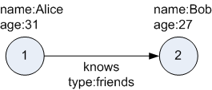
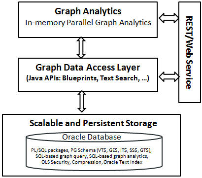

2 Using Property Graphs in an Oracle Database Environment
This chapter provides conceptual and usage information about creating, storing, and working with property graph data in an Oracle Database environment.
Topics:
- About Property Graphs
Property graphs allow an easy association of properties (key-value pairs) with graph vertices and edges, and they enable analytical operations based on relationships across a massive set of data. - About Property Graph Data Formats
Several graph formats are supported for property graph data. - Property Graph Schema Objects for Oracle Database
The property graph PL/SQL and Java APIs use special Oracle Database schema objects. - Getting Started with Property Graphs
Follow these steps to get started with property graphs. - Using Java APIs for Property Graph Data
Creating a property graph involves using the Java APIs to create the property graph and objects in it. - Managing Text Indexing for Property Graph Data
Indexes in Oracle Spatial and Graph property graph support allow fast retrieval of elements by a particular key/value or key/text pair. These indexes are created based on an element type (vertices or edges), a set of keys (and values), and an index type. - Access Control for Property Graph Data (Graph-Level and OLS)
The property graph feature in Oracle Spatial and Graph supports two access control and security models: graph level access control, and fine-grained security through integration with Oracle Label Security (OLS). - Using the Groovy Shell with Property Graph Data
The Oracle Spatial and Graph property graph support includes a built-in Groovy shell (based on the original Gremlin Groovy shell script). With this command-line shell interface, you can explore the Java APIs. - Creating Property Graph Views on an RDF Graph
With Oracle Spatial and Graph, you can view RDF data as a property graph to execute graph analytics operations by creating property graph views over an RDF graph stored in Oracle Database. - Handling Property Graphs Using a Two-Tables Schema
For property graphs with relatively fixed, simple data structures, where you do not need the flexibility of<graph_name>VT$and<graph_name>GE$key/value data tables for vertices and edges, you can use a two-tables schema to achieve better run-time performance. - Oracle Flat File Format Definition
A property graph can be defined in two flat files, specifically description files for the vertices and edges. - Example Python User Interface
The example Python scripts in$ORACLE_HOME/md/property_graph/pyopg/can used with Oracle Spatial and Graph Property Graph, and you may want to change and enhance them (or copies of them) to suit your needs.
2.1 About Property Graphs
Property graphs allow an easy association of properties (key-value pairs) with graph vertices and edges, and they enable analytical operations based on relationships across a massive set of data.
2.1.1 What Are Property Graphs?
A property graph consists of a set of objects or vertices, and a set of arrows or edges connecting the objects. Vertices and edges can have multiple properties, which are represented as key-value pairs.
Each vertex has a unique identifier and can have:
-
A set of outgoing edges
-
A set of incoming edges
-
A collection of properties
Each edge has a unique identifier and can have:
-
An outgoing vertex
-
An incoming vertex
-
A text label that describes the relationship between the two vertices
-
A collection of properties
The following figure illustrates a very simple property graph with two vertices and one edge. The two vertices have identifiers 1 and 2. Both vertices have properties name and age. The edge is from the outgoing vertex 1 to the incoming vertex 2. The edge has a text label knows and a property type identifying the type of relationship between vertices 1 and 2.
Figure 2-1 Simple Property Graph Example
Description of "Figure 2-1 Simple Property Graph Example"
Standards are not available for Big Data Spatial and Graph property graph data model, but it is similar to the W3C standards-based Resource Description Framework (RDF) graph data model. The property graph data model is simpler and much less precise than RDF. These differences make it a good candidate for use cases such as these:
-
Identifying influencers in a social network
-
Predicting trends and customer behavior
-
Discovering relationships based on pattern matching
-
Identifying clusters to customize campaigns
Note:
The property graph data model that Oracle supports at the database side does not allow labels for vertices. However, you can treat the value of a designated vertex property as one or more labels.
Related Topics
2.1.2 What Is Oracle Database Support for Property Graphs?
Property graphs are supported in Oracle Database, in addition to being supported for Big Data in Hadoop. This support consists of a set of PL/SQL packages, a data access layer, and an analytics layer.
The following figure provides an overview of the Oracle property graph architecture.
Figure 2-2 Oracle Property Graph Architecture
Description of "Figure 2-2 Oracle Property Graph Architecture"
2.1.2.1 In-Memory Analyst
The in-memory analyst layer enables you to analyze property graphs using parallel in-memory execution. It provides over 35 analytic functions, including path calculation, ranking, community detection, and recommendations.
2.1.2.2 Data Access Layer
The data access layer provides a set of Java APIs that you can use to create and drop property graphs, add and remove vertices and edges, search for vertices and edges using key-value pairs, create text indexes, and perform other manipulations. The Java APIs include an implementation of TinkerPop Blueprints graph interfaces for the property graph data model. The APIs also integrate with the Apache Lucene and Apache SolrCloud, which are widely-adopted open-source text indexing and search engines.
2.2 About Property Graph Data Formats
Several graph formats are supported for property graph data.
2.2.1 GraphML Data Format
The GraphML file format uses XML to describe graphs. The example in this topic shows a GraphML description of the property graph shown in What Are Property Graphs?.
Example 2-1 GraphML Description of a Simple Property Graph
<?xml version="1.0" encoding="UTF-8"?>
<graphml xmlns="http://graphml.graphdrawing.org/xmlns">
<key id="name" for="node" attr.name="name" attr.type="string"/>
<key id="age" for="node" attr.name="age" attr.type="int"/>
<key id="type" for="edge" attr.name="type" attr.type="string"/>
<graph id="PG" edgedefault="directed">
<node id="1">
<data key="name">Alice</data>
<data key="age">31</data>
</node>
<node id="2">
<data key="name">Bob</data>
<data key="age">27</data>
</node>
<edge id="3" source="1" target="2" label="knows">
<data key="type">friends</data>
</edge>
</graph>
</graphml>
Related Topics
2.2.2 GraphSON Data Format
The GraphSON file format is based on JavaScript Object Notation (JSON) for describing graphs. The example in this topic shows a GraphSON description of the property graph shown in What Are Property Graphs?.
Example 2-2 GraphSON Description of a Simple Property Graph
{
"graph": {
"mode":"NORMAL",
"vertices": [
{
"name": "Alice",
"age": 31,
"_id": "1",
"_type": "vertex"
},
{
"name": "Bob",
"age": 27,
"_id": "2",
"_type": "vertex"
}
],
"edges": [
{
"type": "friends",
"_id": "3",
"_type": "edge",
"_outV": "1",
"_inV": "2",
"_label": "knows"
}
]
}
}Related Topics
2.2.3 GML Data Format
The Graph Modeling Language (GML) file format uses ASCII to describe graphs. The example in this topic shows a GML description of the property graph shown in What Are Property Graphs?.
Example 2-3 GML Description of a Simple Property Graph
graph [
comment "Simple property graph"
directed 1
IsPlanar 1
node [
id 1
label "1"
name "Alice"
age 31
]
node [
id 2
label "2"
name "Bob"
age 27
]
edge [
source 1
target 2
label "knows"
type "friends"
]
]Related Topics
2.2.4 Oracle Flat File Format
The Oracle flat file format exclusively describes property graphs. It is more concise and provides better data type support than the other file formats. The Oracle flat file format uses two files for a graph description, one for the vertices and one for edges. Commas separate the fields of the records.
Example 2-4 Oracle Flat File Description of a Simple Property Graph
The following shows the Oracle flat files that describe the simple property graph example shown in What Are Property Graphs?.
Vertex file:
1,name,1,Alice,, 1,age,2,,31, 2,name,1,Bob,, 2,age,2,,27,
Edge file:
1,1,2,knows,type,1,friends,,
Related Topics
2.3 Property Graph Schema Objects for Oracle Database
The property graph PL/SQL and Java APIs use special Oracle Database schema objects.
Oracle Spatial and Graph lets store, query, manipulate, and query property graph data in Oracle Database. For example, to create a property graph named myGraph, you can use either the Java APIs (oracle.pg.rdbms.OraclePropertyGraph) or the PL/SQL APIs (MDSYS.OPG_APIS package).
With the PL/SQL API:
BEGIN
opg_apis.create_pg(
'myGraph',
dop => 4, -- degree of parallelism
num_hash_ptns => 8, -- number of hash partitions used to store the graph
tbs => 'USERS', -- tablespace
options => 'COMPRESS=T'
);
END;
/
With the Java API:
cfg = GraphConfigBuilder
.forPropertyGraphRdbms()
.setJdbcUrl("jdbc:oracle:thin:@127.0.0.1:1521:orcl")
.setUsername("<your_user_name>")
.setPassword("<your_password>")
.setName("myGraph")
.setMaxNumConnections(8)
.setLoadEdgeLabel(false)
.build();
OraclePropertyGraph opg = OraclePropertyGraph.getInstance(cfg);
After the property graph myGraph is established in the database, several tables are created automatically in the user's schema, with the graph name as the prefix and VT$ or GE$ as the suffix. For example, for a graph named myGraph, table myGraphVT$ is created to store vertices and their properties (K/V pairs), and table myGraphGE$ is created to store edges and their properties.
For simplicity, only simple graph names are allowed, and they are case insensitive.
Additional internal tables are created with SS$, IT$, and GT$ suffixes, to store graph snapshots, text index metadata, and graph skeleton (topological structure), respectively.
The definitions of tables myGraphVT$ and myGraphGE$ are as follows. They are important for SQL-based analytics and SQL-based property graph query. In both the VT$ and GE$ tables, VTS, VTE, and FE are reserved columns; column SL is for the security label; and columns K, T, V, VN, and VT together store all information about a property (K/V pair) of a graph element. In the VT$ table, VID is a long integer for storing the vertex ID. In the GE$ table, EID, SVID, and DVID are long integer columns for storing edge ID, source (from) vertex ID, and destination (to) vertex ID, respectively.
SQL> describe myGraphVT$
Name Null? Type
----------------------------------------- -------- ----------------------------
VID NOT NULL NUMBER
K NVARCHAR2(3100)
T NUMBER(38)
V NVARCHAR2(15000)
VN NUMBER
VT TIMESTAMP(6) WITH TIME ZONE
SL NUMBER
VTS DATE
VTE DATE
FE NVARCHAR2(4000)
SQL> describe myGraphGE$
Name Null? Type
----------------------------------------- -------- ----------------------------
EID NOT NULL NUMBER
SVID NOT NULL NUMBER
DVID NOT NULL NUMBER
EL NVARCHAR2(3100)
K NVARCHAR2(3100)
T NUMBER(38)
V NVARCHAR2(15000)
VN NUMBER
VT TIMESTAMP(6) WITH TIME ZONE
SL NUMBER
VTS DATE
VTE DATE
FE NVARCHAR2(4000)
In the property graph schema design, a property value is stored in the VN column if the value has numeric data type (long, int, double, float, and so on), in the VT column if the value is a timestamp, or in the V column for Strings, boolean and other serializable data types. For better Oracle Text query support, a literal representation of the property value is saved in the V column even if the data type is numeric or timestamp. To differentiate all the supported data types, an integer ID is saved in the T column.
The K column in both VT$ and GE$ tables stores the property key. Each edge must have a label of String type, and the labels are stored in the EL column of the GE$ table.
For performance and scalability, both VT$ and GE$ tables are hash partitioned based on IDs, and the number of partitions is customizable. The number of partitions should be a value that is power of 2 (2, 4, 8, 16, and so on). The partitions are named sequentially starting from "p1", so for a property graph created with 8 partitions, the set of partitions will be "p1", "p2", ..., "p8".
To support international characters, NVARCHAR columns are used in VT$ and GE$ tables. Oracle highly recommends UTF8 as the default database character set. In addition, the V column has a size of 15000, which requires the enabling of 32K VARCHAR (MAX_STRING_SIZE = EXTENDED).
Topics:
2.3.1 Default Indexes on Vertex (VT$) and Edge (GE$) Tables
For query performance, several indexes on property graph tables are created by default. The index names follow the same convention as the table names, including using the graph name as the prefix. For example, for the property graph myGraph, the following local indexes are created:
-
A unique index
myGraphXQV$on myGraphVT$(VID, K) -
A unique index
myGraphXQE$onmyGraphGE$(EID, K) -
An index
myGraphXSE$onmyGraphGE$(SVID, DVID, EID, VN) -
An index
myGraphXDE$onmyGraphGE$(DVID, SVID, EID, VN)
2.3.2 Flexibility in the Property Graph Schema
The property graph schema design does not use a catalog or centralized repository of any kind. Each property graph is separately stored and managed by a schema of user's choice. A user's schema may have one or more property graphs.
This design provides considerable flexibility to users. For example:
-
Additional indexes can be added on demand.
-
Different property graphs can have a different set of indexes or compression options for the base tables.
-
Different property graphs can have different numbers of hash partitions.
-
You can even drop the XSE$ or XDE$ index for a property graph; however, for integrity you should keep the unique constraints.
2.4 Getting Started with Property Graphs
Follow these steps to get started with property graphs.
- The first time you use property graphs, ensure that the software is installed and operational.
- Create your Java programs, using the classes provided in the Java API.
Related Topics
2.5 Using Java APIs for Property Graph Data
Creating a property graph involves using the Java APIs to create the property graph and objects in it.
Topics:
- Overview of the Java APIs
- Parallel Loading of Graph Data
- Parallel Retrieval of Graph Data
- Using an Element Filter Callback for Subgraph Extraction
- Using Optimization Flags on Reads over Property Graph Data
- Adding and Removing Attributes of a Property Graph Subgraph
- Getting Property Graph Metadata
- Merging New Data into an Existing Property Graph
- Opening and Closing a Property Graph Instance
- Creating Vertices
- Creating Edges
- Deleting Vertices and Edges
- Reading a Graph from a Database into an Embedded In-Memory Analyst
- Specifying Labels for Vertices
- Building an In-Memory Graph
- Dropping a Property Graph
2.5.1 Overview of the Java APIs
The Java APIs that you can use for property graphs include the following:
Topics:
2.5.1.1 Oracle Spatial and Graph Property Graph Java APIs
Oracle Spatial and Graph property graph support provides database-specific APIs for Oracle Database. The data access layer API (oracle.pg.*) implements TinkerPop Blueprints APIs, text search, and indexing for property graphs stored in Oracle Database.
To use the Oracle Spatial and Graph API, import the classes into your Java program:
import oracle.pg.common.*; import oracle.pg.text.*; import oracle.pg.rdbms.*; import oracle.pgx.config.*; import oracle.pgx.common.types.*;
Also include TinkerPop Blueprints Java APIs.
2.5.1.2 TinkerPop Blueprints Java APIs
TinkerPop Blueprints supports the property graph data model. The API provides utilities for manipulating graphs, which you use primarily through the Spatial and Graph property graph data access layer Java APIs.
To use the Blueprints APIs, import the classes into your Java program:
import com.tinkerpop.blueprints.Vertex; import com.tinkerpop.blueprints.Edge;
Related Topics
2.5.2 Parallel Loading of Graph Data
A Java API is provided for performing parallel loading of graph data.
Oracle Spatial and Graph supports loading graph data into Oracle Database. Graph data can be loaded into the property graph using the following approaches:
-
Vertices and/or edges can be added incrementally using the
graph.addVertex(Object id)/graph.addEdge(Object id)APIs. -
Graph data can be loaded from a file in Oracle flat-File format in parallel using the
OraclePropertyGraphDataLoaderAPI. -
A property graph in GraphML, GML, or GraphSON can be loaded using
GMLReader,GraphMLReader, andGraphSONReader, respectively.
This topic focuses on the parallel loading of a property graph in Oracle-defined flat file format.
Parallel data loading provides an optimized solution to data loading where the vertices (or edges) input streams are split into multiple chunks and loaded into Oracle Database in parallel. This operation involves two main overlapping phases:
-
Splitting. The vertices and edges input streams are split into multiple chunks and saved into a temporary input stream. The number of chunks is determined by the degree of parallelism specified
-
Graph loading. For each chunk, a loader thread is created to process information about the vertices (or edges) information and to load the data into the property graph tables.
OraclePropertyGraphDataLoader supports parallel data loading using several different options:
2.5.2.1 JDBC-Based Data Loading
JDBC-based data loading uses Java Database Connectivity (JDBC) APIs to load the graph data into Oracle Database. In this option, the vertices (or edges) in the given input stream will be spread among multiple chunks by the splitter thread. Each chunk will be processed by a different loader thread that inserts all the elements in the chunk into a temporary work table using JDBC batching. The number of splitter and loader threads used is determined by the degree of parallelism (DOP) specified by the user.
After all the graph data is loaded into the temporary work tables, all the data stored in the temporary work tables is loaded into the property graph VT$ and GE$ tables.
The following example loads the graph data from a vertex and edge files in Oracle-defined flat-file format using a JDBC-based parallel data loading with a degree of parallelism of 48.
String szOPVFile = "../../data/connections.opv";
String szOPEFile = "../../data/connections.ope";
OraclePropertyGraph opg = OraclePropertyGraph.getInstance( args, szGraphName);
opgdl = OraclePropertyGraphDataLoader.getInstance();
opgdl.loadData(opg, szOPVFile, szOPEFile, 48 /* DOP */, 1000 /* batch size */, true /* rebuild index flag */, "pddl=t,pdml=t" /* options */);
);
To optimize the performance of the data loading operations, a set of flags and hints can be specified when calling the JDBC-based data loading. These hints include:
-
DOP: The degree of parallelism to use when loading the data. This parameter determines the number of chunks to generate when splitting the file as well as the number of loader threads to use when loading the data into the property graph VT$ and GE$ tables.
-
Batch Size: An integer specifying the batch size to use for Oracle update statements in batching mode. The default batch size used in the JDBC-based data loading is 1000.
-
Rebuild index: If this flag is set to
true, the data loader will disable all the indexes and constraints defined over the property graph where the data will be loaded. After all the data is loaded into the property graph, all the indexes and constraints will be rebuilt. -
Load options: An option (or multiple options delimited by commas) to optimize the data loading operations. These options include:
-
NO_DUP=T: Assumes the input data does not have invalid duplicates. In a valid property graph, each vertex (edge) can at most have one value for a given property key. In an invalid property graph, a vertex (edge) may have two or more values for a particular key. As an example, a vertex, v, has two key/value pairs: name/"John" and name/"Johnny" and they share the same key.
-
PDML=T: Enables parallel execution for DML operations for the database session used in the data loader. This hint is used to improve the performance of long-running batching jobs.
-
PDDL=T: Enables parallel execution for DDL operations for the database session used in the data loader. This hint is used to improve the performance of long-running batching jobs.
-
KEEP_WORK_TABS=T: Skips cleaning and deleting the working tables after the data loading is complete. This is for debugging use only.
-
KEEP_TMP_FILES=T: Skips removing the temporary splitter files after the data loading is complete. This is for debug only.
-
-
Splitter Flag: An integer value defining the type of files or streams used in the splitting phase to generate the data chunks used in the graph loading phase. The temporary files can be created as regular files (0), named pipes (1), or piped streams (2). By default, JDBC-based data loading uses
Piped streams to handle intermediate data chunksPiped streams are for JDBC-based loader only. They are purely in-memory and efficient, and do not require any files created on the operating system.
Regular files consume space on the local operating system, while named pipes appear as empty files on the local operating system. Note that not every operating system has support for named pipes.
-
Split File Prefix: The prefix used for the temporary files or pipes created when the splitting phase is generating the data chunks for the graph loading. By default, the prefix “OPG_Chunk” is used for regular files and “OPG_Pipe” is used for named pipes.
-
Tablespace: The name of the tablespace where all the temporary work tables will be created.
Subtopics:
-
JDBC-Based Data Loading with Multiple Files
-
JDBC-Based Data Loading with Partitions
-
JDBC-based Parallel Data Loading Using Fine-Tuning
JDBC-Based Data Loading with Multiple Files
JDBC-based data loading also supports loading vertices and edges from multiple files or input streams into the database. The following code fragment loads multiple vertex and edge files using the parallel data loading APIs. In the example, two string arrays szOPVFiles and szOPEFiles are used to hold the input files.
String[] szOPVFiles = new String[] {"../../data/connections-p1.opv",
"../../data/connections-p2.opv"};
String[] szOPEFiles = new String[] {"../../data/connections-p1.ope",
"../../data/connections-p2.ope"};
OraclePropertyGraph opg = OraclePropertyGraph.getInstance( args, szGraphName);
opgdl = OraclePropertyGraphDataLoader.getInstance();
opgdl.loadData(opg, szOPVFiles, szOPEFiles, 48 /* DOP */,
1000 /* batch size */,
true /* rebuild index flag */,
"pddl=t,pdml=t" /* options */);
JDBC-Based Data Loading with Partitions
When dealing with graph data from thousands to hundreds of thousands elements, the JDBC-based data loading API allows loading the graph data in Oracle Flat file format into Oracle Database using logical partitioning.
Each partition represents a subset of vertices (or edges) in the graph data file of size is approximately the number of distinct element IDs in the file divided by the number of partitions. Each partition is identified by an integer ID in the range of [0, Number of partitions – 1].
To use parallel data loading with partitions, you must specify the total number of logical partitions to use and the partition offset (start ID) in addition to the base parameters used in the loadData API. To fully load a graph data file or input stream into the database, you must execute the data loading operation as many times as the defined number of partitions. For example, to load the graph data from a file using two partitions, there should be two data loading API calls using an offset of 0 and 1. Each call to the data loader can be processed using multiple threads or a separate Java client on a single system or multiple systems.
Note that this approach is intended to be used with a single vertex file (or input stream) and a single edge file (or input stream). Additionally, this option requires disabling the indices and constraints on vertices and edges. These indices and constraints must be rebuilt after all partitions have been loaded.
The following example loads the graph data using two partitions. Each partition is loaded by one Java process DataLoaderWorker. To coordinate multiple workers, a coordinator process named DataLoaderCoordinator is used. This example does the following
-
Disables all indexes and constraints,
-
Creates a temporary working table, loaderProgress, that records the data loading progress (that is, how many workers have finished their work. All
DataLoaderWorkerprocesses start loading data after the working table is created. -
Increments the progress by 1.
-
Keeps polling (using the
DataLoaderCoordinatorprocess) the progress until allDataLoaderWorkerprocesses are done. -
Rebuilds all indexes and constraints.
Note: In DataLoaderWorker, the flag SKIP_INDEX should be set to true and the flag rebuildIndx should be set to false.
// start DataLoaderCoordinator, set dop = 8 and number of partitions = 2
java DataLoaderCoordinator jdbcUrl user password pg 8 2
// start the first DataLoaderWorker, set dop = 8, number of partitions = 2, partition offset = 0
java DataLoaderWorker jdbcUrl user password pg 8 2 0
// start the first DataLoaderWorker, set dop = 8, number of partitions = 2, partition offset = 1
java DataLoaderWorker jdbcUrl user password pg 8 2 1
The DataLoaderCoordinator first disables all indexes and constraints. It then creates a table named loaderProgress and inserts one row with column progress = 0.
public class DataLoaderCoordinator {
public static void main(String[] szArgs) {
String jdbcUrl = szArgs[0];
String user = szArgs[1];
String password = szArgs[2];
String graphName = szArgs[3];
int dop = Integer.parseInt(szArgs[4]);
int numLoaders = Integer.parseInt(szArgs[5]);
Oracle oracle = null;
OraclePropertyGraph opg = null;
try {
oracle = new Oracle(jdbcUrl, user, password);
OraclePropertyGraphUtils.dropPropertyGraph(oracle, graphName);
opg = OraclePropertyGraph.getInstance(oracle, graphName);
List<String> vIndices = opg.disableVertexTableIndices();
List<String> vConstraints = opg.disableVertexTableConstraints();
List<String> eIndices = opg.disableEdgeTableIndices();
List<String> eConstraints = opg.disableEdgeTableConstraints();
String szStmt = null;
try {
szStmt = "drop table loaderProgress";
opg.getOracle().executeUpdate(szStmt);
}
catch (SQLException ex) {
if (ex.getErrorCode() == 942) {
// table does not exist. ignore
}
else {
throw new OraclePropertyGraphException(ex);
}
}
szStmt = "create table loaderProgress (progress integer)";
opg.getOracle().executeUpdate(szStmt);
szStmt = "insert into loaderProgress (progress) values (0)";
opg.getOracle().executeUpdate(szStmt);
opg.getOracle().getConnection().commit();
while (true) {
if (checkLoaderProgress(oracle) == numLoaders) {
break;
} else {
Thread.sleep(1000);
}
}
opg.rebuildVertexTableIndices(vIndices, dop, null);
opg.rebuildVertexTableConstraints(vConstraints, dop, null);
opg.rebuildEdgeTableIndices(eIndices, dop, null);
opg.rebuildEdgeTableConstraints(eConstraints, dop, null);
}
catch (IOException ex) {
throw new OraclePropertyGraphException(ex);
}
catch (SQLException ex) {
throw new OraclePropertyGraphException(ex);
}
catch (InterruptedException ex) {
throw new OraclePropertyGraphException(ex);
}
catch (Exception ex) {
throw new OraclePropertyGraphException(ex);
}
finally {
try {
if (opg != null) {
opg.shutdown();
}
if (oracle != null) {
oracle.dispose();
}
}
catch (Throwable t) {
System.out.println(t);
}
}
}
private static int checkLoaderProgress(Oracle oracle) {
int result = 0;
ResultSet rs = null;
try {
String szStmt = "select progress from loaderProgress";
rs = oracle.executeQuery(szStmt);
if (rs.next()) {
result = rs.getInt(1);
}
}
catch (Exception ex) {
throw new OraclePropertyGraphException(ex);
}
finally {
try {
if (rs != null) {
rs.close();
}
}
catch (Throwable t) {
System.out.println(t);
}
}
return result;
}
}
public class DataLoaderWorker {
public static void main(String[] szArgs) {
String jdbcUrl = szArgs[0];
String user = szArgs[1];
String password = szArgs[2];
String graphName = szArgs[3];
int dop = Integer.parseInt(szArgs[4]);
int numLoaders = Integer.parseInt(szArgs[5]);
int offset = Integer.parseInt(szArgs[6]);
Oracle oracle = null;
OraclePropertyGraph opg = null;
try {
oracle = new Oracle(jdbcUrl, user, password);
opg = OraclePropertyGraph.getInstance(oracle, graphName, 8, dop, null/*tbs*/, ",SKIP_INDEX=T,");
OraclePropertyGraphDataLoader opgdal = OraclePropertyGraphDataLoader.getInstance();
while (true) {
if (checkLoaderProgress(oracle) == 1) {
break;
} else {
Thread.sleep(1000);
}
}
String opvFile = "../../../data/connections.opv";
String opeFile = "../../../data/connections.ope";
opgdal.loadData(opg, opvFile, opeFile, dop, numLoaders, offset, 1000, false, null, "pddl=t,pdml=t");
updateLoaderProgress(oracle);
}
catch (SQLException ex) {
throw new OraclePropertyGraphException(ex);
}
catch (InterruptedException ex) {
throw new OraclePropertyGraphException(ex);
}
finally {
try {
if (opg != null) {
opg.shutdown();
}
if (oracle != null) {
oracle.dispose();
}
}
catch (Throwable t) {
System.out.println(t);
}
}
}
private static int checkLoaderProgress(Oracle oracle) {
int result = 0;
ResultSet rs = null;
try {
String szStmt = "select count(*) from loaderProgress";
rs = oracle.executeQuery(szStmt);
if (rs.next()) {
result = rs.getInt(1);
}
}
catch (SQLException ex) {
if (ex.getErrorCode() == 942) {
// table does not exist. ignore
} else {
throw new OraclePropertyGraphException(ex);
}
}
finally {
try {
if (rs != null) {
rs.close();
}
}
catch (Throwable t) {
System.out.println(t);
}
}
return result;
}
private static void updateLoaderProgress(Oracle oracle) {
ResultSet rs = null;
try {
String szStmt = "update loaderProgress set progress = progress + 1";
oracle.executeUpdate(szStmt);
oracle.getConnection().commit();
}
catch (Exception ex) {
throw new OraclePropertyGraphException(ex);
}
finally {
try {
if (rs != null) {
rs.close();
}
}
catch (Throwable t) {
System.out.println(t);
}
}
}
}JDBC-based Parallel Data Loading Using Fine-Tuning
JDBC-based data loading supports fine-tuning the subset of data from a line to be loaded, as well as the ID offset to use when loading the elements into the property graph instance. You can specify the subset of data to load from a file by specifying the maximum number of lines to read from the file and the offset line number (start position) for both vertices and edges. This way, data will be loaded from the offset line number until the maximum number of lines has been read. IIf the maximum line number is -1, the loading process will scan the data until reaching the end of file.
Because multiple graph data files may have some ID collisions or overlap, the JDBC-based data loading allows you to define a vertex and edge ID offset. This way, the ID of each loaded vertex will be the sum of the original vertex ID and the given vertex ID offset. Similarly, the ID of each loaded edge will be generated from the sum of the original edge ID and the given edge ID offset. Note that the vertices and edge files must be correlated, because the in/out vertex ID for the loaded edges will be modified with respect to the specified vertex ID offset. This operation is supported only in data loading using a single logical partition.
The following code fragment loads the first 100 vertices and edges lines from the given graph data file. In this example, an ID offset 0 is used, which indicates no ID adjustment is performed.
String szOPVFile = "../../data/connections.opv";
String szOPEFile = "../../data/connections.ope";
// Run the data loading using fine tuning
long lVertexOffsetlines = 0;
long lEdgeOffsetlines = 0;
long lVertexMaxlines = 100;
long lEdgeMaxlines = 100;
long lVIDOffset = 0;
long lEIDOffset = 0;
OraclePropertyGraph opg = OraclePropertyGraph.getInstance( args, szGraphName);
OraclePropertyGraphDataLoader opgdl = OraclePropertyGraphDataLoader.getInstance();
opgdl.loadData(opg, szOPVFile, szOPEFile,
lVertexOffsetlines /* offset of lines to start loading from
partition, default 0 */,
lEdgeOffsetlines /* offset of lines to start loading from
partition, default 0 */,
lVertexMaxlines /* maximum number of lines to start loading from
partition, default -1 (all lines in partition) */,
lEdgeMaxlines /* maximum number of lines to start loading from
partition, default -1 (all lines in partition) */,
lVIDOffset /* vertex ID offset: the vertex ID will be original
vertex ID + offset, default 0 */,
lEIDOffset /* edge ID offset: the edge ID will be original edge ID
+ offset, default 0 */,
4 /* DOP */,
1 /* Total number of partitions, default 1 */,
0 /* Partition to load: from 0 to totalPartitions - 1, default 0 */,
OraclePropertyGraphDataLoader.PIPEDSTREAM /* splitter flag */,
"chunkPrefix" /* prefix: the prefix used to generate split chunks
for regular files or named pipes */,
1000 /* batch size: batch size of Oracle update in batching mode.
Default value is 1000 */,
true /* rebuild index */,
null /* table space name*/,
"pddl=t,pdml=t" /* options: enable parallel DDL and DML */);
2.5.2.2 External Table-Based Data Loading
External table-based data loading uses an external table to load the graph data into Oracle Database. External table loading allows users to access the data in external sources as if it were in a regular relational table in the database. In this case, the vertices (or edges) in the given input stream will be spread among multiple chunks by the splitter thread. Each chunk will be processed by a different loader thread that is in charge of passing all the elements in the chunk to Oracle Database. The number of splitter and loader threads used is determined by the degree of parallelism (DOP) specified by the user.
After the external tables are automatically created by the data loading logic, the loader will read from the external tables and load all the data into the property graph schema tables (VT$ and GE$).
External-table based data loading requires a directory object where the files read by the external tables will be stored. This directory can be created by running the following scripts in a SQL*Plus environment:
create or replace directory tmp_dir as '/tmppath/';
grant read, write on directory tmp_dir to public;
The following code fragment loads the graph data from a vertex and edge files in Oracle Flat-file format using an external table-based parallel data loading with a degree of parallelism of 48.
String szOPVFile = "../../data/connections.opv";
String szOPEFile = "../../data/connections.ope";
String szExtDir = "tmp_dir";
OraclePropertyGraph opg = OraclePropertyGraph.getInstance( args, szGraphName);
opgdl = OraclePropertyGraphDataLoader.getInstance();
opgdl.loadDataWithExtTab(opg, szOPVFile, szOPEFile, 48 /*DOP*/,
true /*named pipe flag: setting the flag to true will use
named pipe based splitting; otherwise, regular file
based splitting would be used*/,
szExtDir /* database directory object */,
true /*rebuild index */,
"pddl=t,pdml=t,NO_DUP=T" /*options */);
To optimize the performance of the data loading operations, a set of flags and hints can be specified when calling the External table-based data loading. These hints include:
-
DOP: The degree of parallelism to use when loading the data. This parameter determines the number of chunks to generate when splitting the file, as well as the number of loader threads to use when loading the data into the property graph VT$ and GE$ tables.
-
Rebuild index: If this flag is set to
true, the data loader will disable all the indexes and constraints defined over the property graph where the data will be loaded. After all the data is loaded into the property graph, all the indexes and constraints will be rebuilt. -
Load options: An option (or multiple options delimited by commas) to optimize the data loading operations. These options include:
-
NO_DUP=T: Chooses a faster way to load the data into the property graph tables as no validation for duplicate Key/value pairs will be conducted.
-
PDML=T: Enables parallel execution for DML operations for the database session used in the data loader. This hint is used to improve the performance of long-running batching jobs.
-
PDDL=T: Enables parallel execution for DDL operations for the database session used in the data loader. This hint is used to improve the performance of long-running batching jobs.
-
KEEP_WORK_TABS=T: Skips cleaning and deleting the working tables after the data loading is complete. This is for debugging use only.
-
KEEP_TMP_FILES=T: Skips removing the temporary splitter files after the data loading is complete. This is for debugging use only.
-
-
Splitter Flag: An integer value defining the type of files or streams used in the splitting phase to generate the data chunks used in the graph loading phase. The temporary files can be created as regular files (0) or named pipes (1).
By default, External table-based data loading uses regular files to handle temporary files for data chunks. Named pipes can only be used on operating system that supports them. It is generally a good practice to use regular files together with DBFS.
-
Split File Prefix: The prefix used for the temporary files or pipes created when the splitting phase is generating the data chunks for the graph loading. By default, the prefix “Chunk” is used for regular files and “Pipe” is used for named pipes.
-
Tablespace: The name of the tablespace where all the temporary work tables will be created.
As with the JDBC-based data loading, external table-based data loading supports parallel data loading using a single file, multiple files, partitions, and fine-tuning.
Subtopics:
-
External Table-Based Data Loading with Multiple Files
-
External table-based Data Loading with Partitions
-
External Table-Based Parallel Data Loading Using Fine-Tuning
External Table-Based Data Loading with Multiple Files
External table-based data loading also supports loading vertices and edges from multiple files or input streams into the database. The following code fragment loads multiple vertex and edge files using the parallel data loading APIs. In the example, two string arrays szOPVFiles and szOPEFiles are used to hold the input files.
String szOPVFile = "../../data/connections.opv";
String szOPEFile = "../../data/connections.ope";
String szExtDir = "tmp_dir";
OraclePropertyGraph opg = OraclePropertyGraph.getInstance( args, szGraphName);
opgdl = OraclePropertyGraphDataLoader.getInstance();
opgdl.loadDataWithExtTab(opg, szOPVFile, szOPEFile, 48 /* DOP */,
true /* named pipe flag */,
szExtDir /* database directory object */,
true /* rebuild index flag */,
"pddl=t,pdml=t" /* options */);
External table-based Data Loading with Partitions
When dealing with a very large property graph, the external table-based data loading API allows loading the graph data in Oracle flat file format into Oracle Database using logical partitioning. Each partition represents a subset of vertices (or edges) in the graph data file of size that is approximately the number of distinct element IDs in the file divided by the number of partitions. Each partition is identified by an integer ID in the range of [0, Number of partitions – 1].
To use parallel data loading with partitions, you must specify the total number of partitions to use and the partition offset besides the base parameters used in the loadDataWithExtTab API. To fully load a graph data file or input stream into the database, you must execute the data loading operation as many times as the defined number of partitions. For example, to load the graph data from a file using two partitions, there should be two data loading API calls using an offset of 0 and 1. Each call to the data loader can be processed using multiple threads or a separate Java client on a single system or multiple systems.
Note that this approach is intended to be used with a single vertex file (or input stream) and a single edge file (or input stream). Additionally, this option requires disabling the indexes and constraints on vertices and edges. These indices and constraints must be rebuilt after all partitions have been loaded.
The example for JDBC-based data loading with partitions can be easily migrated to work as external-table based loading with partitions. The only needed changes are to replace API loadData() with loadDataWithExtTab(), and supply some additional input parameters such as the database directory object.
External Table-Based Parallel Data Loading Using Fine-Tuning
External table-based data loading also supports fine-tuning the subset of data from a line to be loaded, as well as the ID offset to use when loading the elements into the property graph instance. You can specify the subset of data to load from a file by specifying the maximum number of lines to read from the file as well as the offset line number for both vertices and edges. This way, data will be loaded from the offset line number until the maximum number of lines has been read. If the maximum line number is -1, the loading process will scan the data until reaching the end of file.
Because graph data files may have some ID collisions, the external table-based data loading allows you to define a vertex and edge ID offset. This way, the ID of each loaded vertex will be obtained from the sum of the original vertex ID with the given vertex ID offset. Similarly, the ID of each loaded edge will be generated from the sum of the original edge ID with the given edge ID offset. Note that the vertices and edge files must be correlated, because the in/out vertex ID for the loaded edges will be modified with respect to the specified vertex ID offset. This operation is supported only in a data loading using a single partition.
The following code fragment loads the first 100 vertices and edges from the given graph data file. In this example, no ID offset is provided.
String szOPVFile = "../../data/connections.opv";
String szOPEFile = "../../data/connections.ope";
// Run the data loading using fine tuning
long lVertexOffsetlines = 0;
long lEdgeOffsetlines = 0;
long lVertexMaxlines = 100;
long lEdgeMaxlines = 100;
long lVIDOffset = 0;
long lEIDOffset = 0;
String szExtDir = "tmp_dir";
OraclePropertyGraph opg = OraclePropertyGraph.getInstance( args, szGraphName);
OraclePropertyGraphDataLoader opgdl = OraclePropertyGraphDataLoader.getInstance();
opgdl.loadDataWithExtTab(opg, szOPVFile, szOPEFile,
lVertexOffsetlines /* offset of lines to start loading
from partition, default 0 */,
lEdgeOffsetlines /* offset of lines to start loading from
partition, default 0 */,
lVertexMaxlines /* maximum number of lines to start
loading from partition, default -1
(all lines in partition) */,
lEdgeMaxlines /* maximum number of lines to start loading
from partition, default -1 (all lines in
partition) */,
lVIDOffset /* vertex ID offset: the vertex ID will be
original vertex ID + offset, default 0 */,
lEIDOffset /* edge ID offset: the edge ID will be
original edge ID + offset, default 0 */,
4 /* DOP */,
1 /* Total number of partitions, default 1 */,
0 /* Partition to load (from 0 to totalPartitions - 1,
default 0) */,
OraclePropertyGraphDataLoader.NAMEDPIPE
/* splitter flag */,
"chunkPrefix" /* prefix */,
szExtDir /* database directory object */,
true /* rebuild index flag */,
"pddl=t,pdml=t" /* options */);
2.5.2.3 SQL*Loader-Based Data Loading
SQL*Loader-based data loading uses Oracle SQL*Loader to load the graph data into Oracle Database. SQL*Loader loads data from external files into Oracle Database tables. In this case, the vertices (or edges) in the given input stream will be spread among multiple chunks by the splitter thread. Each chunk will be processed by a different loader thread that inserts all the elements in the chunk into a temporary work table using SQL*Loader. The number of splitter and loader threads used is determined by the degree of parallelism (DOP) specified by the user.
After all the graph data is loaded into the temporary work table, the graph loader will load all the data stored in the temporary work tables into the property graph VT$ and GE$ tables.
The following code fragment loads the graph data from a vertex and edge files in Oracle flat-file format using a SQL-based parallel data loading with a degree of parallelism of 48. To use the APIs, the path to the SQL*Loader must be specified.
String szUser = "username";
String szPassword = "password";
String szDbId = "db12c"; /*service name of the database*/
String szOPVFile = "../../data/connections.opv";
String szOPEFile = "../../data/connections.ope";
String szSQLLoaderPath = "<YOUR_ORACLE_HOME>/bin/sqlldr";
OraclePropertyGraph opg = OraclePropertyGraph.getInstance( args, szGraphName);
opgdl = OraclePropertyGraphDataLoader.getInstance();
opgdl.loadDataWithSqlLdr(opg, szUser, szPassword, szDbId,
szOPVFile, szOPEFile,
48 /* DOP */,
true /*named pipe flag */,
szSQLLoaderPath /* SQL*Loader path: the path to
bin/sqlldr*/,
true /*rebuild index */,
"pddl=t,pdml=t" /* options */);
As with JDBC-based data loading, SQL*Loader-based data loading supports parallel data loading using a single file, multiple files, partitions, and fine-tuning.
Subtopics:
-
SQL*Loader-Based Data Loading with Multiple Files
-
SQL*Loader-Based Data Loading with Partitions
-
SQL*Loader-Based Parallel Data Loading Using Fine-Tuning
SQL*Loader-Based Data Loading with Multiple Files
SQL*Loader-based data loading supports loading vertices and edges from multiple files or input streams into the database. The following code fragment loads multiple vertex and edge files using the parallel data loading APIs. In the example, two string arrays szOPVFiles and szOPEFiles are used to hold the input files.
String szUser = "username";
String szPassword = "password";
String szDbId = "db12c"; /*service name of the database*/
String[] szOPVFiles = new String[] {"../../data/connections-p1.opv",
"../../data/connections-p2.opv"};
String[] szOPEFiles = new String[] {"../../data/connections-p1.ope",
"../../data/connections-p2.ope"};
String szSQLLoaderPath = "../../../dbhome_1/bin/sqlldr";
OraclePropertyGraph opg = OraclePropertyGraph.getInstance( args, szGraphName);
opgdl = OraclePropertyGraphDataLoader.getInstance();
opgdl. loadDataWithSqlLdr (opg, szUser, szPassword, szDbId,
szOPVFiles, szOPEFiles,
48 /* DOP */,
true /* named pipe flag */,
szSQLLoaderPath /* SQL*Loader path */,
true /* rebuild index flag */,
"pddl=t,pdml=t" /* options */);SQL*Loader-Based Data Loading with Partitions
When dealing with a large property graph, the SQL*Loader-based data loading API allows loading the graph data in Oracle flat-file format into Oracle Database using logical partitioning. Each partition represents a subset of vertices (or edges) in the graph data file of size that is approximately the number of distinct element IDs in the file divided by the number of partitions. Each partition is identified by an integer ID in the range of [0, Number of partitions – 1].
To use parallel data loading with partitions, you must specify the total number of partitions to use and the partition offset, in addition to the base parameters used in the loadDataWithSqlLdr API. To fully load a graph data file or input stream into the database, you must execute the data loading operation as many times as the defined number of partitions. For example, to load the graph data from a file using two partitions, there should be two data loading API calls using an offset of 0 and 1. Each call to the data loader can be processed using multiple threads or a separate Java client on a single system or multiple systems.
Note that this approach is intended to be used with a single vertex file (or input stream) and a single edge file (or input stream). Additionally, this option requires disabling the indexes and constraints on vertices and edges. These indexes and constraints must be rebuilt after all partitions have been loaded.
The example for JDBC-based data loading with partitions can be easily migrated to work as SQL*Loader- based loading with partitions. The only changes needed are to replace API loadData() with loadDataWithSqlLdr(), and supply some additional input parameters such as the location of SQL*Loader.
SQL*Loader-Based Parallel Data Loading Using Fine-Tuning
SQL Loader-based data loading supports fine-tuning the subset of data from a line to be loaded, as well as the ID offset to use when loading the elements into the property graph instance. You can specify the subset of data to load from a file by specifying the maximum number of lines to read from the file and the offset line number for both vertices and edges. This way, data will be loaded from the offset line number until the maximum number of lines has been read. If the maximum line number is -1, the loading process will scan the data until reaching the end of file.
Because graph data files may have some ID collisions, the SQL Loader-based data loading allows you to define a vertex and edge ID offset. This way, the ID of each loaded vertex will be obtained from the sum of the original vertex ID with the given vertex ID offset. Similarly, the ID of each loaded edge will be generated from the sum of the original edge ID with the given edge ID offset. Note that the vertices and edge files must be correlated, because the in/out vertex ID for the loaded edges will be modified with respect to the specified vertex ID offset. This operation is supported only in a data loading using a single partition.
The following code fragment loads the first 100 vertices and edges from the given graph data file. In this example, no ID offset is provided.
String szUser = "username";
String szPassword = "password";
String szDbId = "db12c"; /* service name of the database */
String szOPVFile = "../../data/connections.opv";
String szOPEFile = "../../data/connections.ope";
String szSQLLoaderPath = "../../../dbhome_1/bin/sqlldr";
// Run the data loading using fine tuning
long lVertexOffsetlines = 0;
long lEdgeOffsetlines = 0;
long lVertexMaxlines = 100;
long lEdgeMaxlines = 100;
long lVIDOffset = 0;
long lEIDOffset = 0;
OraclePropertyGraph opg = OraclePropertyGraph.getInstance( args, szGraphName);
OraclePropertyGraphDataLoader opgdl = OraclePropertyGraphDataLoader.getInstance();
opgdl.loadDataWithSqlLdr(opg, szUser, szPassword, szDbId,
szOPVFile, szOPEFile,
lVertexOffsetlines /* offset of lines to start loading
from partition, default 0*/,
lEdgeOffsetlines /* offset of lines to start loading from
partition, default 0*/,
lVertexMaxlines /* maximum number of lines to start
loading from partition, default -1
(all lines in partition)*/,
lEdgeMaxlines /* maximum number of lines to start loading
from partition, default -1 (all lines in
partition) */,
lVIDOffset /* vertex ID offset: the vertex ID will be
original vertex ID + offset, default 0 */,
lEIDOffset /* edge ID offset: the edge ID will be
original edge ID + offset, default 0 */,
48 /* DOP */,
1 /* Total number of partitions, default 1 */,
0 /* Partition to load (from 0 to totalPartitions - 1,
default 0) */,
OraclePropertyGraphDataLoader.NAMEDPIPE
/* splitter flag */,
"chunkPrefix" /* prefix */,
szSQLLoaderPath /* SQL*Loader path: the path to
bin/sqlldr*/,
true /* rebuild index */,
"pddl=t,pdml=t" /* options */);
2.5.3 Parallel Retrieval of Graph Data
The parallel property graph query provides a simple Java API to perform parallel scans on vertices (or edges). Parallel retrieval is an optimized solution taking advantage of the distribution of the data across table partitions, so each partition is queried using a separate database connection.
Parallel retrieval will produce an array where each element holds all the vertices (or edges) from a specific partition (split). The subset of shards queried will be separated by the given start split ID and the size of the connections array provided. This way, the subset will consider splits in the range of [start, start - 1 + size of connections array]. Note that an integer ID (in the range of [0, N - 1]) is assigned to all the splits in the vertex table with N splits.
The following code loads a property graph, opens an array of connections, and executes a parallel query to retrieve all vertices and edges using the opened connections. The number of calls to the getVerticesPartitioned (getEdgesPartitioned) method is controlled by the total number of splits and the number of connections used.
OraclePropertyGraph opg = OraclePropertyGraph.getInstance(args, szGraphName);
// Clear existing vertices/edges in the property graph
opg.clearRepository();
String szOPVFile = "../../data/connections.opv";
String szOPEFile = "../../data/connections.ope";
// This object will handle parallel data loading
OraclePropertyGraphDataLoader opgdl = OraclePropertyGraphDataLoader.getInstance();
opgdl.loadData(opg, szOPVFile, szOPEFile, dop);
// Create connections used in parallel query
Oracle[] oracleConns = new Oracle[dop];
Connection[] conns = new Connection[dop];
for (int i = 0; i < dop; i++) {
oracleConns[i] = opg.getOracle().clone();
conns[i] = oracleConns[i].getConnection();
}
long lCountV = 0;
// Iterate over all the vertices’ partitionIDs to count all the vertices
for (int partitionID = 0; partitionID < opg.getVertexPartitionsNumber();
partitionID += dop) {
Iterable<Vertex>[] iterables
= opg.getVerticesPartitioned(conns /* Connection array */,
true /* skip store to cache */,
partitionID /* starting partition */);
lCountV += consumeIterables(iterables); /* consume iterables using
threads */
}
// Count all vertices
System.out.println("Vertices found using parallel query: " + lCountV);
long lCountE = 0;
// Iterate over all the edges’ partitionIDs to count all the edges
for (int partitionID = 0; partitionID < opg.getEdgeTablePartitionIDs();
partitionID += dop) {
Iterable<Edge>[] iterables
= opg.getEdgesPartitioned(conns /* Connection array */,
true /* skip store to cache */,
partitionID /* starting partitionID */);
lCountE += consumeIterables(iterables); /* consume iterables using
threads */
}
// Count all edges
System.out.println("Edges found using parallel query: " + lCountE);
// Close the connections to the database after completed
for (int idx = 0; idx < conns.length; idx++) {
conns[idx].close();
}
2.5.4 Using an Element Filter Callback for Subgraph Extraction
Oracle Spatial and Graph provides support for an easy subgraph extraction using user-defined element filter callbacks. An element filter callback defines a set of conditions that a vertex (or an edge) must meet in order to keep it in the subgraph. Users can define their own element filtering by implementing the VertexFilterCallback and EdgeFilterCallback API interfaces.
The following code fragment implements a VertexFilterCallback that validates if a vertex does not have a political role and its origin is the United States.
/**
* VertexFilterCallback to retrieve a vertex from the United States
* that does not have a political role
*/
private static class NonPoliticianFilterCallback
implements VertexFilterCallback
{
@Override
public boolean keepVertex(OracleVertexBase vertex)
{
String country = vertex.getProperty("country");
String role = vertex.getProperty("role");
if (country != null && country.equals("United States")) {
if (role == null || !role.toLowerCase().contains("political")) {
return true;
}
}
return false;
}
public static NonPoliticianFilterCallback getInstance()
{
return new NonPoliticianFilterCallback();
}
}
The following code fragment implements an EdgeFilterCallback that uses the VertexFilterCallback to keep only edges connected to the given input vertex, and whose connections are not politicians and come from the United States.
/**
* EdgeFilterCallback to retrieve all edges connected to an input
* vertex with "collaborates" label, and whose vertex is from the
* United States with a role different than political
*/
private static class CollaboratorsFilterCallback
implements EdgeFilterCallback
{
private VertexFilterCallback m_vfc;
private Vertex m_startV;
public CollaboratorsFilterCallback(VertexFilterCallback vfc,
Vertex v)
{
m_vfc = vfc;
m_startV = v;
}
@Override
public boolean keepEdge(OracleEdgeBase edge)
{
if ("collaborates".equals(edge.getLabel())) {
if (edge.getVertex(Direction.IN).equals(m_startV) &&
m_vfc.keepVertex((OracleVertex)
edge.getVertex(Direction.OUT))) {
return true;
}
else if (edge.getVertex(Direction.OUT).equals(m_startV) &&
m_vfc.keepVertex((OracleVertex)
edge.getVertex(Direction.IN))) {
return true;
}
}
return false;
}
public static CollaboratorsFilterCallback
getInstance(VertexFilterCallback vfc, Vertex v)
{
return new CollaboratorsFilterCallback(vfc, v);
}
}
Using the filter callbacks previously defined, the following code fragment loads a property graph, creates an instance of the filter callbacks and later gets all of Barack Obama’s collaborators who are not politicians and come from the United States.
OraclePropertyGraph opg = OraclePropertyGraph.getInstance( args, szGraphName); // Clear existing vertices/edges in the property graph opg.clearRepository(); String szOPVFile = "../../data/connections.opv"; String szOPEFile = "../../data/connections.ope"; // This object will handle parallel data loading OraclePropertyGraphDataLoader opgdl = OraclePropertyGraphDataLoader.getInstance(); opgdl.loadData(opg, szOPVFile, szOPEFile, dop); // VertexFilterCallback to retrieve all people from the United States // who are not politicians NonPoliticianFilterCallback npvfc = NonPoliticianFilterCallback.getInstance(); // Initial vertex: Barack Obama Vertex v = opg.getVertices("name", "Barack Obama").iterator().next(); // EdgeFilterCallback to retrieve all collaborators of Barack Obama // from the United States who are not politicians CollaboratorsFilterCallback cefc = CollaboratorsFilterCallback.getInstance(npvfc, v); Iterable<<Edge> obamaCollabs = opg.getEdges((String[])null /* Match any of the properties */, cefc /* Match the EdgeFilterCallback */ ); Iterator<<Edge> iter = obamaCollabs.iterator(); System.out.println("\n\n--------Collaborators of Barack Obama from " + " the US and non-politician\n\n"); long countV = 0; while (iter.hasNext()) { Edge edge = iter.next(); // get the edge // check if obama is the IN vertex if (edge.getVertex(Direction.IN).equals(v)) { System.out.println(edge.getVertex(Direction.OUT) + "(Edge ID: " + edge.getId() + ")"); // get out vertex } else { System.out.println(edge.getVertex(Direction.IN)+ "(Edge ID: " + edge.getId() + ")"); // get in vertex } countV++; }
By default, all reading operations such as get all vertices, get all edges (and parallel approaches) will use the filter callbacks associated with the property graph using the methods opg.setVertexFilterCallback(vfc) and opg.setEdgeFilterCallback(efc). If there is no filter callback set, then all the vertices (or edges) and edges will be retrieved.
The following code fragment uses the default edge filter callback set on the property graph to retrieve the edges.
// VertexFilterCallback to retrieve all people from the United States // who are not politicians NonPoliticianFilterCallback npvfc = NonPoliticianFilterCallback.getInstance(); // Initial vertex: Barack Obama Vertex v = opg.getVertices("name", "Barack Obama").iterator().next(); // EdgeFilterCallback to retrieve all collaborators of Barack Obama // from the United States who are not politicians CollaboratorsFilterCallback cefc = CollaboratorsFilterCallback.getInstance(npvfc, v); opg.setEdgeFilterCallback(cefc); Iterable<Edge> obamaCollabs = opg.getEdges(); Iterator<Edge> iter = obamaCollabs.iterator(); System.out.println("\n\n--------Collaborators of Barack Obama from " + " the US and non-politician\n\n"); long countV = 0; while (iter.hasNext()) { Edge edge = iter.next(); // get the edge // check if obama is the IN vertex if (edge.getVertex(Direction.IN).equals(v)) { System.out.println(edge.getVertex(Direction.OUT) + "(Edge ID: " + edge.getId() + ")"); // get out vertex } else { System.out.println(edge.getVertex(Direction.IN)+ "(Edge ID: " + edge.getId() + ")"); // get in vertex } countV++; }
2.5.5 Using Optimization Flags on Reads over Property Graph Data
Oracle Spatial and Graph provides support for optimization flags to improve graph iteration performance. Optimization flags allow processing vertices (or edges) as objects with none or minimal information, such as ID, label, and/or incoming/outgoing vertices. This way, the time required to process each vertex (or edge) during iteration is reduced.
The following table shows the optimization flags available when processing vertices (or edges) in a property graph.
| Optimization Flag | Description |
|---|---|
| DO_NOT_CREATE_OBJECT | Use a predefined constant object when processing vertices or edges. |
| JUST_EDGE_ID | Construct edge objects with ID only when processing edges. |
| JUST_LABEL_EDGE_ID | Construct edge objects with ID and label only when processing edges. |
| JUST_LABEL_VERTEX_EDGE_ID | Construct edge objects with ID, label, and in/out vertex IDs only when processing edges |
| JUST_VERTEX_EDGE_ID | Construct edge objects with just ID and in/out vertex IDs when processing edges. |
| JUST_VERTEX_ID | Construct vertex objects with ID only when processing vertices. |
The following code fragment uses a set of optimization flags to retrieve only all the IDs from the vertices and edges in the property graph. The objects retrieved by reading all vertices and edges will include only the IDs and no Key/Value properties or additional information.
import oracle.pg.common.OraclePropertyGraphBase.OptimizationFlag; OraclePropertyGraph opg = OraclePropertyGraph.getInstance( args, szGraphName); // Clear existing vertices/edges in the property graph opg.clearRepository(); String szOPVFile = "../../data/connections.opv"; String szOPEFile = "../../data/connections.ope"; // This object will handle parallel data loading OraclePropertyGraphDataLoader opgdl = OraclePropertyGraphDataLoader.getInstance(); opgdl.loadData(opg, szOPVFile, szOPEFile, dop); // Optimization flag to retrieve only vertices IDs OptimizationFlag optFlagVertex = OptimizationFlag.JUST_VERTEX_ID; // Optimization flag to retrieve only edges IDs OptimizationFlag optFlagEdge = OptimizationFlag.JUST_EDGE_ID; // Print all vertices Iterator<Vertex> vertices = opg.getVertices((String[])null /* Match any of the properties */, null /* Match the VertexFilterCallback */, optFlagVertex /* optimization flag */ ).iterator(); System.out.println("----- Vertices IDs----"); long vCount = 0; while (vertices.hasNext()) { OracleVertex v = vertices.next(); System.out.println((Long) v.getId()); vCount++; } System.out.println("Vertices found: " + vCount); // Print all edges Iterator<Edge> edges = opg.getEdges((String[])null /* Match any of the properties */, null /* Match the EdgeFilterCallback */, optFlagEdge /* optimization flag */ ).iterator(); System.out.println("----- Edges ----"); long eCount = 0; while (edges.hasNext()) { Edge e = edges.next(); System.out.println((Long) e.getId()); eCount++; } System.out.println("Edges found: " + eCount);
By default, all reading operations such as get all vertices, get all edges (and parallel approaches) will use the optimization flag associated with the property graph using the method opg.setDefaultVertexOptFlag(optFlagVertex) and opg.setDefaultEdgeOptFlag(optFlagEdge). If the optimization flags for processing vertices and edges are not defined, then all the information about the vertices and edges will be retrieved.
The following code fragment uses the default optimization flags set on the property graph to retrieve only all the IDs from its vertices and edges.
import oracle.pg.common.OraclePropertyGraphBase.OptimizationFlag; // Optimization flag to retrieve only vertices IDs OptimizationFlag optFlagVertex = OptimizationFlag.JUST_VERTEX_ID; // Optimization flag to retrieve only edges IDs OptimizationFlag optFlagEdge = OptimizationFlag.JUST_EDGE_ID; opg.setDefaultVertexOptFlag(optFlagVertex); opg.setDefaultEdgeOptFlag(optFlagEdge); Iterator<Vertex> vertices = opg.getVertices().iterator(); System.out.println("----- Vertices IDs----"); long vCount = 0; while (vertices.hasNext()) { OracleVertex v = vertices.next(); System.out.println((Long) v.getId()); vCount++; } System.out.println("Vertices found: " + vCount); // Print all edges Iterator<Edge> edges = opg.getEdges().iterator(); System.out.println("----- Edges ----"); long eCount = 0; while (edges.hasNext()) { Edge e = edges.next(); System.out.println((Long) e.getId()); eCount++; } System.out.println("Edges found: " + eCount);
2.5.6 Adding and Removing Attributes of a Property Graph Subgraph
Oracle Spatial and Graph supports updating attributes (key/value pairs) to a subgraph of vertices and/or edges by using a user-customized operation callback. An operation callback defines a set of conditions that a vertex (or an edge) must meet in order to update it (either add or remove the given attribute and value).
You can define your own attribute operations by implementing the VertexOpCallback and EdgeOpCallback API interfaces. You must override the needOp method, which defines the conditions to be satisfied by the vertices (or edges) to be included in the update operation, as well as the getAttributeKeyName and getAttributeKeyValue methods, which return the key name and value, respectively, to be used when updating the elements.
The following code fragment implements a VertexOpCallback that operates over the obamaCollaborator attribute associated only with Barack Obama collaborators. The value of this property is specified based on the role of the collaborators.
private static class CollaboratorsVertexOpCallback implements VertexOpCallback { private OracleVertexBase m_obama; private List<Vertex> m_obamaCollaborators; public CollaboratorsVertexOpCallback(OraclePropertyGraph opg) { // Get a list of Barack Obama'sCollaborators m_obama = (OracleVertexBase) opg.getVertices("name", "Barack Obama") .iterator().next(); Iterable<Vertex> iter = m_obama.getVertices(Direction.BOTH, "collaborates"); m_obamaCollaborators = OraclePropertyGraphUtils.listify(iter); } public static CollaboratorsVertexOpCallback getInstance(OraclePropertyGraph opg) { return new CollaboratorsVertexOpCallback(opg); } /** * Add attribute if and only if the vertex is a collaborator of Barack * Obama */ @Override public boolean needOp(OracleVertexBase v) { return m_obamaCollaborators != null && m_obamaCollaborators.contains(v); } @Override public String getAttributeKeyName(OracleVertexBase v) { return "obamaCollaborator"; } /** * Define the property's value based on the vertex role */ @Override public Object getAttributeKeyValue(OracleVertexBase v) { String role = v.getProperty("role"); role = role.toLowerCase(); if (role.contains("political")) { return "political"; } else if (role.contains("actor") || role.contains("singer") || role.contains("actress") || role.contains("writer") || role.contains("producer") || role.contains("director")) { return "arts"; } else if (role.contains("player")) { return "sports"; } else if (role.contains("journalist")) { return "journalism"; } else if (role.contains("business") || role.contains("economist")) { return "business"; } else if (role.contains("philanthropist")) { return "philanthropy"; } return " "; } }
The following code fragment implements an EdgeOpCallback that operates over the obamaFeud attribute associated only with Barack Obama feuds. The value of this property is specified based on the role of the collaborators.
private static class FeudsEdgeOpCallback implements EdgeOpCallback { private OracleVertexBase m_obama; private List<Edge> m_obamaFeuds; public FeudsEdgeOpCallback(OraclePropertyGraph opg) { // Get a list of Barack Obama's feuds m_obama = (OracleVertexBase) opg.getVertices("name", "Barack Obama") .iterator().next(); Iterable<Vertex> iter = m_obama.getVertices(Direction.BOTH, "feuds"); m_obamaFeuds = OraclePropertyGraphUtils.listify(iter); } public static FeudsEdgeOpCallback getInstance(OraclePropertyGraph opg) { return new FeudsEdgeOpCallback(opg); } /** * Add attribute if and only if the edge is in the list of Barack Obama's * feuds */ @Override public boolean needOp(OracleEdgeBase e) { return m_obamaFeuds != null && m_obamaFeuds.contains(e); } @Override public String getAttributeKeyName(OracleEdgeBase e) { return "obamaFeud"; } /** * Define the property's value based on the in/out vertex role */ @Override public Object getAttributeKeyValue(OracleEdgeBase e) { OracleVertexBase v = (OracleVertexBase) e.getVertex(Direction.IN); if (m_obama.equals(v)) { v = (OracleVertexBase) e.getVertex(Direction.OUT); } String role = v.getProperty("role"); role = role.toLowerCase(); if (role.contains("political")) { return "political"; } else if (role.contains("actor") || role.contains("singer") || role.contains("actress") || role.contains("writer") || role.contains("producer") || role.contains("director")) { return "arts"; } else if (role.contains("journalist")) { return "journalism"; } else if (role.contains("player")) { return "sports"; } else if (role.contains("business") || role.contains("economist")) { return "business"; } else if (role.contains("philanthropist")) { return "philanthropy"; } return " "; } }
Using the operations callbacks defined previously, the following code fragment loads a property graph, creates an instance of the operation callbacks, and later adds the attributes into the pertinent vertices and edges using the addAttributeToAllVertices and addAttributeToAllEdges methods in OraclePropertyGraph.
OraclePropertyGraph opg = OraclePropertyGraph.getInstance( args, szGraphName); // Clear existing vertices/edges in the property graph opg.clearRepository(); String szOPVFile = "../../data/connections.opv"; String szOPEFile = "../../data/connections.ope"; // This object will handle parallel data loading OraclePropertyGraphDataLoader opgdl = OraclePropertyGraphDataLoader.getInstance(); opgdl.loadData(opg, szOPVFile, szOPEFile, dop); // Create the vertex operation callback CollaboratorsVertexOpCallback cvoc = CollaboratorsVertexOpCallback.getInstance(opg); // Add attribute to all people collaborating with Obama based on their role opg.addAttributeToAllVertices(cvoc, true /** Skip store to Cache */, dop); // Look up for all collaborators of Obama Iterable<Vertex> collaborators = opg.getVertices("obamaCollaborator", "political"); System.out.println("Political collaborators of Barack Obama " + getVerticesAsString(collaborators)); collaborators = opg.getVertices("obamaCollaborator", "business"); System.out.println("Business collaborators of Barack Obama " + getVerticesAsString(collaborators)); // Add an attribute to all people having a feud with Barack Obama to set // the type of relation they have FeudsEdgeOpCallback feoc = FeudsEdgeOpCallback.getInstance(opg); opg.addAttributeToAllEdges(feoc, true /** Skip store to Cache */, dop); // Look up for all feuds of Obama Iterable<Edge> feuds = opg.getEdges("obamaFeud", "political"); System.out.println("\n\nPolitical feuds of Barack Obama " + getEdgesAsString(feuds)); feuds = opg.getEdges("obamaFeud", "business"); System.out.println("Business feuds of Barack Obama " + getEdgesAsString(feuds));
The following code fragment defines an implementation of VertexOpCallback that can be used to remove vertices having value philanthropy for attribute obamaCollaborator, then call the API removeAttributeFromAllVertices; It also defines an implementation of EdgeOpCallback that can be used to remove edges having value business for attribute obamaFeud, then call the API removeAttributeFromAllEdges.
System.out.println("\n\nRemove 'obamaCollaborator' property from all the" +
"philanthropy collaborators");
PhilanthropyCollaboratorsVertexOpCallback pvoc = PhilanthropyCollaboratorsVertexOpCallback.getInstance();
opg.removeAttributeFromAllVertices(pvoc);
System.out.println("\n\nRemove 'obamaFeud' property from all the" + "business feuds");
BusinessFeudsEdgeOpCallback beoc = BusinessFeudsEdgeOpCallback.getInstance();
opg.removeAttributeFromAllEdges(beoc);
/**
* Implementation of a EdgeOpCallback to remove the "obamaCollaborators"
* property from all people collaborating with Barack Obama that have a
* philanthropy role
*/
private static class PhilanthropyCollaboratorsVertexOpCallback implements VertexOpCallback
{
public static PhilanthropyCollaboratorsVertexOpCallback getInstance()
{
return new PhilanthropyCollaboratorsVertexOpCallback();
}
/**
* Remove attribute if and only if the property value for
* obamaCollaborator is Philanthropy
*/
@Override
public boolean needOp(OracleVertexBase v)
{
String type = v.getProperty("obamaCollaborator");
return type != null && type.equals("philanthropy");
}
@Override
public String getAttributeKeyName(OracleVertexBase v)
{
return "obamaCollaborator";
}
/**
* Define the property's value. In this case can be empty
*/
@Override
public Object getAttributeKeyValue(OracleVertexBase v)
{
return " ";
}
}
/**
* Implementation of a EdgeOpCallback to remove the "obamaFeud" property
* from all connections in a feud with Barack Obama that have a business role
*/
private static class BusinessFeudsEdgeOpCallback implements EdgeOpCallback
{
public static BusinessFeudsEdgeOpCallback getInstance()
{
return new BusinessFeudsEdgeOpCallback();
}
/**
* Remove attribute if and only if the property value for obamaFeud is
* business
*/
@Override
public boolean needOp(OracleEdgeBase e)
{
String type = e.getProperty("obamaFeud");
return type != null && type.equals("business");
}
@Override
public String getAttributeKeyName(OracleEdgeBase e)
{
return "obamaFeud";
}
/**
* Define the property's value. In this case can be empty
*/
@Override
public Object getAttributeKeyValue(OracleEdgeBase e)
{
return " ";
}
}
2.5.7 Getting Property Graph Metadata
You can get graph metadata and statistics, such as all graph names in the database; for each graph, getting the minimum/maximum vertex ID, the minimum/maximum edge ID, vertex property names, edge property names, number of splits in graph vertex, and the edge table that supports parallel table scans.
The following code fragment gets the metadata and statistics of the existing property graphs stored in an Oracle database.
// Get all graph names in the database
List<String> graphNames = OraclePropertyGraphUtils.getGraphNames(dbArgs);
for (String graphName : graphNames) {
OraclePropertyGraph opg = OraclePropertyGraph.getInstance(args,
graphName);
System.err.println("\n Graph name: " + graphName);
System.err.println(" Total vertices: " +
opg.countVertices(dop));
System.err.println(" Minimum Vertex ID: " +
opg.getMinVertexID(dop));
System.err.println(" Maximum Vertex ID: " +
opg.getMaxVertexID(dop));
Set<String> propertyNamesV = new HashSet<String>();
opg.getVertexPropertyNames(dop, 0 /* timeout,0 no timeout */,
propertyNamesV);
System.err.println(" Vertices property names: " +
getPropertyNamesAsString(propertyNamesV));
System.err.println("\n\n Total edges: " + opg.countEdges(dop));
System.err.println(" Minimum Edge ID: " + opg.getMinEdgeID(dop));
System.err.println(" Maximum Edge ID: " + opg.getMaxEdgeID(dop));
Set<String> propertyNamesE = new HashSet<String>();
opg.getEdgePropertyNames(dop, 0 /* timeout,0 no timeout */,
propertyNamesE);
System.err.println(" Edge property names: " +
getPropertyNamesAsString(propertyNamesE));
System.err.println("\n\n Table Information: ");
System.err.println("Vertex table number of splits: " +
(opg.getVertexPartitionsNumber()));
System.err.println("Edge table number of splits: " +
(opg.getEdgePartitionsNumber()));
}2.5.8 Merging New Data into an Existing Property Graph
In addition to loading graph data into an empty property graph in Oracle Database, you can merge new graph data into an existing (empty or non-empty) graph. As with data loading, data merging splits the input vertices and edges into multiple chunks and merges them with the existing graph in database in parallel.
When doing the merging, the flows are different depends on whether there is an overlap between new graph data and existing graph data. Overlap here means that the same key of a graph element may have different values in the new and existing graph data. For example, key weight of the vertex with ID 1 may have value 0.8 in the new graph data and value 0.5 in the existing graph data. In this case, you must specify whether the new value or the existing value should be used for the key.
The following options are available for graph data merging: JDB-based, external table-based, and SQL loader-based merging.
-
JDBC-Based Graph Data Merging
-
External Table-Based Data Merging
-
SQL Loader-Based Data Merging
JDBC-Based Graph Data Merging
JDBC-based data merging uses Java Database Connectivity (JDBC) APIs to load the new graph data into Oracle Database and then merge the new graph data into an existing graph.
The following example merges the new graph data from vertex and edge files szOPVFile and szOPEFile in Oracle-defined Flat-file format with an existing graph named opg, using a JDBC-based data merging with a DOP (degree of parallelism) of 48, batch size of 1000, and specified data merging options.
String szOPVFile = "../../data/connectionsNew.opv";
String szOPEFile = "../../data/connectionsNew.ope";
OraclePropertyGraphDataLoader opgdl = OraclePropertyGraphDataLoader.getInstance();
opgdl.mergeData(opg, szOPVFile, szOPEFile,
48 /*DOP*/,
1000 /*Batch Size*/,
true /*Rebuild index*/,
"pdml=t, pddl=t, no_dup=t, use_new_val_for_dup_key=t" /*Merge options*/);
To optimize the performance of the data merging operations, a set of flags and hints can be specified in the merging options parameter when calling the JDBC-based data merging. These hints include:
-
DOP: The degree of parallelism to use when merging the data. This parameter determines the number of chunks to generate when splitting the file, as well as the number of loader threads to use when merging the data into the property graph VT$ and GE$ tables.
-
Batch Size: An integer specifying the batch size to use for Oracle JDBC statements in batching mode.
-
Rebuild index: If set to true, the data loader will disable all the indexes and constraints defined over the property graph into which the data will be loaded. After all the data is merged into the property graph, all the original indexes and constraints will be rebuilt and enabled.
-
Merge options: An option (or multiple options separated by commas) to optimize the data merging operations. These options include:
-
PDML=T: enables parallel execution for DML operations for the database session used in the data loader. This hint is used to improve the performance of long-running batching jobs.
-
PDDL=T: enables parallel execution for DDL operations for the database session used in the data loader. This hint is used to improve the performance of long-running batching jobs.
-
NO_DUP=T: assumes the input new graph data does not have invalid duplicates. In a valid property graph, each vertex (or edge) can at most have one value for a given property key. In an invalid property graph, a vertex (or edge) may have two or more values for a particular key. As an example, a vertex, v, has two key/value pairs: name/"John" and name/"Johnny", and they share the same key.
-
OVERLAP=F: assumes there is no overlap between new graph data and existing graph data. That is, there is no key with multiple distinct values in the new and existing graph data.
-
USE_NEW_VAL_FOR_DUP_KEY=T: if there is overlap between new graph data and existing graph data, use the value in the new graph data; otherwise, use the value in the existing graph data.
-
External Table-Based Data Merging
External table-based data merging uses an external table to load new graph data into Oracle Database and then merge the new graph data into an existing graph.
External-table based data merging requires a directory object, where the files read by the external tables will be stored. This directory can be created using the following SQL*Plus statements:
create or replace directory tmp_dir as '/tmppath/';
grant read, write on directory tmp_dir to public;
The following example merges the new graph data from a vertex and edge files szOPVFile and szOPEFile in Oracle flat-file format with an existing graph opg using an external table-based data merging, a DOP (degree of parallelism) of 48, and specified merging options.
String szOPVFile = "../../data/connectionsNew.opv";
String szOPEFile = "../../data/connectionsNew.ope";
String szExtDir = "tmp_dir";
OraclePropertyGraphDataLoader opgdl = OraclePropertyGraphDataLoader.getInstance();
opgdl.mergeDataWithExtTab(opg, szOPVFile, szOPEFile,
48 /*DOP*/,
true /*Use Named Pipe for splitting*/,
szExtDir /*database directory object*/,
true /*Rebuild index*/,
"pdml=t, pddl=t, no_dup=t, use_new_val_for_dup_key=t" /*Merge options*/);
SQL Loader-Based Data Merging
SQL loader-based data merging uses Oracle SQL*Loader to load the new graph data into Oracle Database and then merge the new graph data into an existing graph.
The following example merges the new graph data from a vertex and edge files szOPVFile and szOPEFile in Oracle Flat-file format with an existing graph opg using an SQL loader -based data merging with a DOP (degree of parallelism) of 48 and the specified merging options. To use the APIs, the path to the SQL*Loader needs to be specified.
String szUser = "username";
String szPassword = "password";
String szDbId = "db12c"; /*service name of the database*/
String szOPVFile = "../../data/connectionsNew.opv"; 0
String szOPEFile = "../../data/connectionsNew.ope";
String szSQLLoaderPath = "<YOUR_ORACLE_HOME>/bin/sqlldr";
OraclePropertyGraphDataLoader opgdl = OraclePropertyGraphDataLoader.getInstance();
opgdl.mergeDataWithSqlLdr(opg, szUser, szPassword, szDbId, szOPVFile, szOPEFile,
48 /*DOP*/,
true /*Use Named Pipe for splitting*/,
szSQLLoaderPath /* SQL*Loader path: the path to bin/sqlldr */,
true /*Rebuild index*/,
"pdml=t, pddl=t, no_dup=t, use_new_val_for_dup_key=t" /*Merge options*/);
2.5.9 Opening and Closing a Property Graph Instance
When describing a property graph, use these Oracle Property Graph classes to open and close the property graph instance properly:
-
OraclePropertyGraph.getInstance: Opens an instance of an Oracle property graph. This method has two parameters, the connection information and the graph name. The format of the connection information depends on whether you use HBase or Oracle NoSQL Database as the backend database. -
OraclePropertyGraph.clearRepository: Removes all vertices and edges from the property graph instance. -
OraclePropertyGraph.shutdown: Closes the graph instance.
For Oracle Database, the OraclePropertyGraph.getInstance method uses an Oracle instance to manage the database connection. OraclePropertyGraph has a set of constructors that let you set the graph name, number of hash partitions, degree of parallelism, tablespace, and options for storage (such as compression). For example:
import oracle.pg.rdbms.*;
Oracle oracle = new Oracle(jdbcURL, username, password);
OraclePropertyGraph opg = OraclePropertyGraph.getInstance(oracle, graphName);
opg.clearRepository();
// .
// . Graph description
// .
// Close the graph instance
opg.shutdown();
If the in-memory analyst functions are required for an application, you should use GraphConfigBuilder to create a graph for Oracle Database, and instantiate OraclePropertyGraph with that graph name as an argument. For example, the following code snippet constructs a graph config, gets an OraclePropertyGraph instance, loads some data into that graph, and gets an in-memory analyst.
import oracle.pgx.config.*;
import oracle.pgx.api.*;
import oracle.pgx.common.types.*;
...
PgNosqlGraphConfig cfg = GraphConfigBuilder. forPropertyGraphRdbms ()
.setJdbcUrl("jdbc:oracle:thin:@<hostname>:1521:<sid>")
.setUsername("<username>").setPassword("<password>")
.setName(szGraphName)
.setMaxNumConnections(8)
.addEdgeProperty("lbl", PropertyType.STRING, "lbl")
.addEdgeProperty("weight", PropertyType.DOUBLE, "1000000")
.build();
OraclePropertyGraph opg = OraclePropertyGraph.getInstance(cfg);
String szOPVFile = "../../data/connections.opv";
String szOPEFile = "../../data/connections.ope";
// perform a parallel data load
OraclePropertyGraphDataLoader opgdl = OraclePropertyGraphDataLoader.getInstance();
opgdl.loadData(opg, szOPVFile, szOPEFile, 2 /* dop */, 1000, true, "PDML=T,PDDL=T,NO_DUP=T,");
...
PgxSession session = Pgx.createSession("session-id-1");
PgxGraph g = session.readGraphWithProperties(cfg);
Analyst analyst = session.createAnalyst();
...
2.5.10 Creating Vertices
To create a vertex, use these Oracle Property Graph methods:
-
OraclePropertyGraph.addVertex: Adds a vertex instance to a graph. -
OracleVertex.setProperty: Assigns a key-value property to a vertex. -
OraclePropertyGraph.commit: Saves all changes to the property graph instance.
The following code fragment creates two vertices named V1 and V2, with properties for age, name, weight, height, and sex in the opg property graph instance. The v1 properties set the data types explicitly.
// Create vertex v1 and assign it properties as key-value pairs
Vertex v1 = opg.addVertex(1l);
v1.setProperty("age", Integer.valueOf(31));
v1.setProperty("name", "Alice");
v1.setProperty("weight", Float.valueOf(135.0f));
v1.setProperty("height", Double.valueOf(64.5d));
v1.setProperty("female", Boolean.TRUE);
Vertex v2 = opg.addVertex(2l);
v2.setProperty("age", 27);
v2.setProperty("name", "Bob");
v2.setProperty("weight", Float.valueOf(156.0f));
v2.setProperty("height", Double.valueOf(69.5d));
v2.setProperty("female", Boolean.FALSE); 2.5.11 Creating Edges
To create an edge, use these Oracle Property Graph methods:
-
OraclePropertyGraph.addEdge: Adds an edge instance to a graph. -
OracleEdge.setProperty: Assigns a key-value property to an edge.
The following code fragment creates two vertices (v1 and v2) and one edge (e1).
// Add vertices v1 and v2
Vertex v1 = opg.addVertex(1l);
v1.setProperty("name", "Alice");
v1.setProperty("age", 31);
Vertex v2 = opg.addVertex(2l);
v2.setProperty("name", "Bob");
v2.setProperty("age", 27);
// Add edge e1
Edge e1 = opg.addEdge(1l, v1, v2, "knows");
e1.setProperty("type", "friends");2.5.12 Deleting Vertices and Edges
You can remove vertex and edge instances individually, or all of them simultaneously. Use these methods:
-
OraclePropertyGraph.removeEdge: Removes the specified edge from the graph. -
OraclePropertyGraph.removeVertex: Removes the specified vertex from the graph. -
OraclePropertyGraph.clearRepository: Removes all vertices and edges from the property graph instance.
The following code fragment removes edge e1 and vertex v1 from the graph instance. The adjacent edges will also be deleted from the graph when removing a vertex. This is because every edge must have an beginning and ending vertex. After removing the beginning or ending vertex, the edge is no longer a valid edge.
// Remove edge e1 opg.removeEdge(e1); // Remove vertex v1 opg.removeVertex(v1);
The OraclePropertyGraph.clearRepository method can be used to remove all contents from an OraclePropertyGraph instance. However, use it with care because this action cannot be reversed.
2.5.13 Reading a Graph from a Database into an Embedded In-Memory Analyst
You can read a graph from Oracle Database into an in-memory analyst that is embedded in the same client Java application (a single JVM). For the following example, a correct java.io.tmpdir setting is required.
int dop = 8; // need customization
Map<PgxConfig.Field, Object> confPgx = new HashMap<PgxConfig.Field, Object>();
confPgx.put(PgxConfig.Field.ENABLE_GM_COMPILER, false);
confPgx.put(PgxConfig.Field.NUM_WORKERS_IO, dop); //
confPgx.put(PgxConfig.Field.NUM_WORKERS_ANALYSIS, dop); // <= # of physical cores
confPgx.put(PgxConfig.Field.NUM_WORKERS_FAST_TRACK_ANALYSIS, 2);
confPgx.put(PgxConfig.Field.SESSION_TASK_TIMEOUT_SECS, 0); // no timeout set
confPgx.put(PgxConfig.Field.SESSION_IDLE_TIMEOUT_SECS, 0); // no timeout set
PgRdbmsGraphConfig cfg = GraphConfigBuilder.forPropertyGraphRdbms().setJdbcUrl("jdbc:oracle:thin:@<your_db_host>:<db_port>:<db_sid>")
.setUsername("<username>")
.setPassword("<password>")
.setName("<graph_name>")
.setMaxNumConnections(8)
.setLoadEdgeLabel(false)
.build();
OraclePropertyGraph opg = OraclePropertyGraph.getInstance(cfg);
ServerInstance localInstance = Pgx.getInstance();
localInstance.startEngine(confPgx);
PgxSession session = localInstance.createSession("session-id-1"); // Put your session description here.
Analyst analyst = session.createAnalyst();
// The following call will trigger a read of graph data from the database
PgxGraph pgxGraph = session.readGraphWithProperties(opg.getConfig());
long triangles = analyst.countTriangles(pgxGraph, false);
System.out.println("triangles " + triangles);
// Remove edge e1
opg.removeEdge(e1);
// Remove vertex v1
opg.removeVertex(v1);
2.5.14 Specifying Labels for Vertices
The database and data access layer do not provide labels for vertices; however, you can treat the value of a designated vertex property as one or more labels. Such a transformation is relevant only to the in-memory analyst.
In the following example, a property "country" is specified in a call to setUseVertexPropertyValueAsLabel(), and the comma delimiter "," is specified in a call to setPropertyValueDelimiter(). These two together imply that values of the country vertex property will be treated as vertex labels separated by a comma. For example, if vertex X has a string value "US" for its country property, then its vertex label will be US; and if vertex Y has a string value "UK,CN", then it will have two labels: UK and CN.
GraphConfigBuilder.forPropertyGraph...
.setName("<your_graph_name>")
...
.setUseVertexPropertyValueAsLabel("country")
.setPropertyValueDelimiter(",")
.build();
Related Topics
2.5.15 Building an In-Memory Graph
In addition to Reading Graph Data into Memory, you can create an in-memory graph programmatically. This can simplify development when the size of graph is small or when the content of the graph is highly dynamic. The key Java class is GraphBuilder, which can accumulate a set of vertices and edges added with the addVertex and addEdge APIs. After all changes are made, an in-memory graph instance (PgxGraph) can be created by the GraphBuilder.
The following Java code snippet illustrates a graph construction flow. Note that there are no explicit calls to addVertex, because any vertex that does not already exist will be added dynamically as its adjacent edges are created.
import oracle.pgx.api.*;
PgxSession session = Pgx.createSession("example");
GraphBuilder<Integer> builder = session.newGraphBuilder();
builder.addEdge(0, 1, 2);
builder.addEdge(1, 2, 3);
builder.addEdge(2, 2, 4);
builder.addEdge(3, 3, 4);
builder.addEdge(4, 4, 2);
PgxGraph graph = builder.build();
To construct a graph with vertex properties, you can use setProperty against the vertex objects created.
PgxSession session = Pgx.createSession("example");
GraphBuilder<Integer> builder = session.newGraphBuilder();
builder.addVertex(1).setProperty("double-prop", 0.1);
builder.addVertex(2).setProperty("double-prop", 2.0);
builder.addVertex(3).setProperty("double-prop", 0.3);
builder.addVertex(4).setProperty("double-prop", 4.56789);
builder.addEdge(0, 1, 2);
builder.addEdge(1, 2, 3);
builder.addEdge(2, 2, 4);
builder.addEdge(3, 3, 4);
builder.addEdge(4, 4, 2);
PgxGraph graph = builder.build();
To use long integers as vertex and edge identifiers, specify IdType.LONG when getting a new instance of GraphBuilder. For example:
import oracle.pgx.common.types.IdType;
GraphBuilder<Long> builder = session.newGraphBuilder(IdType.LONG);
During edge construction, you can directly use vertex objects that were previously created in a call to addEdge.
v1 = builder.addVertex(1l).setProperty("double-prop", 0.5)
v2 = builder.addVertex(2l).setProperty("double-prop", 2.0)
builder.addEdge(0, v1, v2)
As with vertices, edges can have properties. The following example sets the edge label by using setLabel:
builder.addEdge(4, v4, v2).setProperty("edge-prop", "edge_prop_4_2").setLabel("label")2.5.16 Dropping a Property Graph
To drop a property graph from the database, use the OraclePropertyGraphUtils.dropPropertyGraph method. This method has two parameters, the connection information and the graph name. For example:
// Drop the graph
Oracle oracle = new Oracle(jdbcUrl, username, password);
OraclePropertyGraphUtils.dropPropertyGraph(oracle, graphName);
You can also drop a property graph using the PL/SQL API. For example:
EXECUTE opg_apis.drop_pg('my_graph_name');2.6 Managing Text Indexing for Property Graph Data
Indexes in Oracle Spatial and Graph property graph support allow fast retrieval of elements by a particular key/value or key/text pair. These indexes are created based on an element type (vertices or edges), a set of keys (and values), and an index type.
Two types of indexing structures are supported.
-
Automatic text indexes provide automatic indexing of vertices or edges by a set of property keys. Their main purpose is to enhance query performance on vertices and edges based on particular key/value pairs.
-
Manual text indexes enable you to define multiple indexes over a designated set of vertices and edges of a property graph. You must specify what graph elements go into the index.
Oracle Spatial and Graph provides APIs to create manual and automatic text indexes over property graphs stored in Oracle Database. Indexes are managed using the available open-source search engines Apache Lucene and SolrCloud, and Oracle Text, a proprietary search and analysis engine. The rest of this section focuses on how to create text indexes using the property graph capabilities of the Data Access Layer.
Topics:
- Configuring a Text Index for Property Graph Data
- Using Automatic Indexes for Property Graph Data
- Using Manual Indexes for Property Graph Data
- Executing Search Queries Over a Property Graph’s Text Indexes
- Handling Data Types
- Uploading a Collection's SolrCloud Configuration to Zookeeper
- Updating Configuration Settings on Text Indexes for Property Graph Data
- Using Parallel Query on Text Indexes for Property Graph Data
- Using Native Query Objects on Text Indexes for Property Graph Data
- Using Native Query Results on Text Indexes for Property Graph Data
2.6.1 Configuring a Text Index for Property Graph Data
The configuration of a text index is defined using an OracleIndexParameters object. This object includes information about the index such as search engine, location, number of directories (or shards), and degree of parallelism.
By default, text indexes are configured based on the OracleIndexParameters associated with the property graph using the method opg.setDefaultIndexParameters(indexParams). The initial creation of the automatic index delimits the configuration and text search engine for future indexed keys.
Indexes can also be created by specifying a different set of parameters. The following code fragment creates an automatic text index over an existing property graph using a Lucene engine with a physical directory.
// Create an OracleIndexParameters object to get Index configuration (search engine, etc).
OracleIndexParameters indexParams = OracleIndexParameters.buildFS(args)
// Create auto indexing on above properties for all vertices
opg.createKeyIndex("name", Vertex.class, indexParams.getParameters());
If you want to modify the initial configuration of a text index, you may need first to drop the existing graph and recreate the index using the new configuration.
-
Configuring Text Indexes Using the Apache Lucene Search Engine
-
Configuring Text Indexes Using the SolrCloud Search Engine
-
Configuring Text Indexes Using Oracle Text
Configuring Text Indexes Using the Apache Lucene Search Engine
A text index using Apache Lucene Search engine uses a LuceneIndexParameters configuration object. The configuration parameters for indexes using a Lucene Search engine include:
-
Number of directories: an integer specifying the number of Apache Lucene directories to use for the automatic index. Using multiple directories provides storage and performance scalability. The default value is set to 1.
-
Batch Size: an integer specifying the batch size to use for document batching in Apache Lucene. The default batch size used is 10000.
-
Commit Batch Size: an integer specifying the number of document to add into the Apache Lucene index before a commit operation is executed. The default commit batch size used is 500000.
-
Data type handling flag: a Boolean specifying if Apache Lucene data types handling is enabled. Enabling data types handling fasten up lookups over numeric and date time data types.
-
Directory names: a string array specifying the base path location where the Apache Lucene directories will be created.
The following code fragment creates the configuration for a text index using Apache Lucene Search Engine with a physical directory.
OracleIndexParameters indexParams =
OracleIndexParameters.buildFS(4, 4, 10000, 50000, true,
"/home/data/text-index");
Oracle Spatial and Graph extends the Apache Lucene capabilities by using a DBFS directory to store all Apache Lucene directories and data files.
Configuring Text Indexes Using the SolrCloud Search Engine
A text index using SolrCloud Search engine uses a SolrIndexParameters object behind the scenes to identify the SolrCloud host name, the number of shards, and replication factor used during the index construction. The configuration parameters for indexes using a SolrCloud Search engine include:
-
Configuration name: the name of the Zookeeper directory where the SolrCloud configuration files for Oracle Property Graph are stored, such as opgconfig. The configuration files include the required field’s schema (schema.xml) and storage settings (
solrconfig.xml). -
Server URL: the SolrCloud server URL used to connect to the SolrCloud service, such ashttp://localhost:2181/solr
-
SolrCloud Node Set: the host names of the nodes in the SolrCloud service where the collection’s shards will be stored, such as node01:8983_solr,node02:8983_solr,node03:8983_solr. If the value is set to null, then the collection will be created using all the SolrCloud nodes available in the service.
-
Zookeeper Timeout: a positive integer representing the timeout (in seconds) used to wait for a Zookeeper connection.
-
Number of shards: the number of shards to create for the text index collection. If the SolrCloud configuration is using an HDFS directory, the number of shards must not exceed the number of SolrCloud nodes specified in the SolrCloud node set.
-
Replication factor: the replication factor used in the SolrCloud collection. The default value is set to 1.
-
Maximum shards per node: the maximum number of shards that can be created on each SolrCloud node. Note that this value must not be smaller than number of shards/# of nodes in the SolrCloud Node set.
-
DOP: the degree of parallelism to use when reading the vertices (or edges) from the property graph and indexing the K/V pairs. The default value is set to 1.
-
Batch Size: an integer specifying the batch size to use for document batching in Apache SolrCloud. The default batch size used is 10000.
-
Commit Batch Size: an integer specifying the number of document to add into the Apache SolrCloud index before a commit operation is executed. The default commit batch size used is 500000.
-
Write timeout: the timeout (in seconds) used to wait for an index operation to be completed. If the index operation was unsuccessful due to a communication error, the operation will be tried out again until the timeout is reached or the operation completes.
The following code fragment creates the configuration for a text index using SolrCloud.
String configName = "opgconfig";
String solrServerUrl = "nodea:2181/solr"
String solrNodeSet = "nodea:8983_solr,nodeb:8983_solr," +
"nodec:8983_solr,noded:8983_solr";
int zkTimeout = 15;
int numShards = 4;
int replicationFactor = 1;
int maxShardsPerNode = 1;
OracleIndexParameters indexParams =
OracleIndexParameters.buildSolr(configName,
solrServerUrl,
solrNodeSet,
zkTimeout,
numShards,
replicationFactor,
maxShardsPerNode,
4,
10000,
500000,
15);
When using SolrCloud, you must first load a collection's configuration for the text indexes into Apache Zookeeper, as described in Uploading a Collection's SolrCloud Configuration to Zookeeper.
Configuring Text Indexes Using Oracle Text
Oracle Spatial and Graph supports automatic text indexes using Oracle Text. Oracle Text uses standard SQL to index, search, and analyze text values stored in the V column of the vertices (or edges) table. Because Oracle Text indexes all the existing K/V pairs of the vertices (or edges) in the property graph, this option can be used only with automatic text indexes and must use a wildcard ("*") indexed key parameter during the index creation.
Because the property graph feature uses an NVARCHAR typed column for a better support of Unicode, it is highly recommended that UTF8 (AL32UTF8) be used as the database character set.
To create an Oracle Text index on the vertices table (or edges table), the ALTER SESSION privilege is required. The following example grants the privilege.
SQL> grant alter session to <YOUR_USER_SCHEMA_HERE>;If customization is required, grant EXECUTE on CTX_DDL, as in the following example.
SQL> grant execute on ctx_ddl to <YOUR_USER_SCHEMA_HERE>;A text index using Oracle Text uses an OracleTextIndexParameters object. The configuration parameters for indexes using a Oracle Text include:
-
Preference owner: the owner of the preference.
-
Data store: the datastore preference specifying how the text values are stored. A datastore preference can be created using ctx_ddl.create_preference API as follows:
SQL> -- The following requires access privilege to CTX_DDL SQL> exec ctx_ddl.create_preference('SCOTT.OPG_DATASTORE', 'DIRECT_DATASTORE');If the value is set to NULL, then the index will be created with CTXSYS.DEFAULT_DATASORE. This preference uses a DIRECT_DATASTORE type.
-
Filter: the filter preference determining how text is filtered for indexing. A filter preference can be created using
ctx_ddl.create_preference, as follows:SQL> -- The following requires access privilege to CTX_DDL SQL> exec ctx_ddl.create_preference('SCOTT.OPG_FILTER', 'AUTO_FILTER');If the value is set to NULL, then the index will be created with CTXSYS.NULL_FILTER. This preference uses a NULL_FILTER type.
-
Storage: the storage preference specifying table space and creation parameters for tables associated with a Text index. A storage preference can be created using
ctx_ddl.create_preference, as follows:SQL> -- The following requires access privilege to CTX_DDL SQL> exec ctx_ddl.create_preference('SCOTT.OPG_STORAGE', 'BASIC_STORAGE');If the value is set to NULL, then the index will be created with CTXSYS.DEFAULT_STORAGE. This preference uses a BASIC_STORAGE type.
-
Word list: the word list preference specifying the enabled query options. These query options may include stemming, fuzzy matching, substring, and prefix indexing. A data store preference can be created using
ctx_ddl.create_preference, as follows:SQL> -- The following example enables stemming and fuzzy matching for English. SQL> exec ctx_ddl.create_preference('SCOTT.OPG_WORDLIST', 'BASIC_WORDLIST');If the value is set to NULL, then the index will be created with CTXSYS.DEFAULT_WORDLIST. This preference uses the language stemmer for your database language.
-
Stop list: the stop list preference specifying the list of words that are not meant to be indexed. A stop list preference can be created using
ctx_ddl.create_stoplist.If the value is set to NULL, then the index will be created with CTXSYS.DEFAULT_STOPLIST. This preference uses the stoplist of your database language.
-
Lexer: the lexer preference specifying the language of the text to be indexed. A lexer preference can be created using
ctx_ddl.create_preference, as follows:SQL> -- The following requires access privilege to CTX_DDL SQL> exec ctx_ddl.create_preference('SCOTT.OPG_AUTO_LEXER', 'AUTO_LEXER');If the value is set to NULL, then the index will be created with CTXSYS.DEFAULT_LEXER. This preference uses a BASIC_LEXER type with additional options based on the language used at installation time.
The following code fragment creates the configuration for a text index using Oracle Text with default options and OPG_AUTO_LEXER.
String prefOwner = "scott";
String datastore = (String) null;
String filter = (String) null;
String storage = (String) null;
String wordlist = (String) null;
String stoplist = (String) null;
String lexer = "OPG_AUTO_LEXER";
String options = (String) null;
OracleIndexParameters params
= OracleTextIndexParameters.buildOracleText(prefOwner,
datastore,
filter,
storage,
wordlist,
stoplist,
lexer,
dop,
options);
2.6.2 Using Automatic Indexes for Property Graph Data
An automatic text index provides automatic indexing of vertices or edges by a set of property keys. Its main purpose is to increase the speed of lookups over vertices and edges based on particular key/value pair. If an automatic index for the given key is enabled, then key/value pair lookups will be performed as a text search against the index instead of as a database lookup.
When specifying an automatic index over a property graph, use the following methods to create, remove, and manipulate an automatic index:
-
OraclePropertyGraph.createKeyIndex(String key, Class elementClass, Parameter[] parameters): Creates an automatic index for all elements of typeelementClassby the given property key. The index is configured based on the specified parameters. -
OraclePropertyGraph.createKeyIndex(String[] keys, Class elementClass, Parameter[] parameters): Creates an automatic index for all elements of typeelementClassby using a set of property keys. The index is configured based on the specified parameters. -
OraclePropertyGraph.dropKeyIndex(String key, Class elementClass): Drops the automatic index for all elements of typeelementClassfor the given property key. -
OraclePropertyGraph.dropKeyIndex(String[] keys, Class elementClass): Drops the automatic index for all elements of typeelementClassfor the given set of property keys. -
OraclePropertyGraph.getAutoIndex(Class elementClass): Gets an index instance of the automatic index for typeelementClass. -
OraclePropertyGraph.getIndexedKeys(Class elementClass): Gets the set of indexed keys currently used in an automatic index for all elements of typeelementClass.
The supplied example ExampleRDBMS6 creates a property graph from an input file, creates an automatic text index on vertices, and executes some text search queries using Apache Lucene.
The following code fragment creates an automatic index over an existing property graph's vertices with these property keys: name, role, religion, and country. The automatic text index will be stored under four subdirectories under the /home/data/text-index directory. Apache Lucene data types handling is enabled. This example uses a DOP (parallelism) of 4 for re-indexing tasks.
OraclePropertyGraph opg = OraclePropertyGraph.getInstance(…);
String szOPVFile = "../../data/connections.opv";
String szOPEFile = "../../data/connections.ope";
// Do a parallel data loading
OraclePropertyGraphDataLoader opgdl =
OraclePropertyGraphDataLoader.getInstance();
opgdl.loadData(opg, szOPVFile, szOPEFile, 2 /* dop */, 1000, true, "PDML=T,PDDL=T,NO_DUP=T,");
// Create an automatic index using Apache Lucene engine.
// Specify Index Directory parameters (number of directories,
// number of connections to database, batch size, commit size,
// enable datatypes, location)
OracleIndexParameters indexParams =
OracleIndexParameters.buildFS(4, 4, 10000, 50000, true,
"/home/data/text-index ");
opg.setDefaultIndexParameters(indexParams);
// specify indexed keys
String[] indexedKeys = new String[4];
indexedKeys[0] = "name";
indexedKeys[1] = "role";
indexedKeys[2] = "religion";
indexedKeys[3] = "country";
// Create auto indexing on above properties for all vertices
opg.createKeyIndex(indexedKeys, Vertex.class);
By default, indexes are configured based on the OracleIndexParameters associated with the property graph using the method opg.setDefaultIndexParameters(indexParams).
Indexes can also be created by specifying a different set of parameters. This is shown in the following code snippet.
// Create an OracleIndexParameters object to get Index configuration (search engine, etc).
OracleIndexParameters indexParams = OracleIndexParameters.buildFS(args)
// Create auto indexing on above properties for all vertices
opg.createKeyIndex("name", Vertex.class, indexParams.getParameters());
The code fragment in the next example executes a query over all vertices to find all matching vertices with the key/value pair name:Barack Obama. This operation will execute a lookup into the text index.
Additionally, wildcard searches are supported by specifying the parameter useWildCards in the getVertices API call. Wildcard search is only supported when automatic indexes are enabled for the specified property key. For details on text search syntax using Apache Lucene, see https://lucene.apache.org/core/2_9_4/queryparsersyntax.html.
// Find all vertices with name Barack Obama.
Iterator<Vertices> vertices = opg.getVertices("name", "Barack Obama").iterator();
System.out.println("----- Vertices with name Barack Obama -----");
countV = 0;
while (vertices.hasNext()) {
System.out.println(vertices.next());
countV++;
}
System.out.println("Vertices found: " + countV);
// Find all vertices with name including keyword "Obama"
// Wildcard searching is supported.
boolean useWildcard = true;
Iterator<Vertices> vertices = opg.getVertices("name", "*Obama*").iterator();
System.out.println("----- Vertices with name *Obama* -----");
countV = 0;
while (vertices.hasNext()) {
System.out.println(vertices.next());
countV++;
}
System.out.println("Vertices found: " + countV);
The preceding code example produces output like the following:
----- Vertices with name Barack Obama-----
Vertex ID 1 {name:str:Barack Obama, role:str:political authority, occupation:str:44th president of United States of America, country:str:United States, political party:str:Democratic, religion:str:Christianity}
Vertices found: 1
----- Vertices with name *Obama* -----
Vertex ID 1 {name:str:Barack Obama, role:str:political authority, occupation:str:44th president of United States of America, country:str:United States, political party:str:Democratic, religion:str:Christianity}
Vertices found: 12.6.3 Using Manual Indexes for Property Graph Data
Manual indexes support the definition of multiple indexes over the vertices and edges of a property graph. A manual index requires that you manually put, get, and remove elements from the index.
When describing a manual index over a property graph, use the following methods to add, remove, and manipulate a manual index:
-
OraclePropertyGraph.createIndex(String name, Class elementClass, Parameter[] parameters): Creates a manual index with the specified name for all elements of typeelementClass. -
OraclePropertyGraph.dropIndex(String name): Drops the given manual index. -
OraclePropertyGraph.getIndex(String name, Class elementClass): Gets an index instance of the given manual index for typeelementClass. -
OraclePropertyGraph.getIndices(): Gets an array of index instances for all manual indexes created in the property graph.
The example code in this topic creates a manual text index on edges, puts some data into the index, and executes some text search queries using Apache SolrCloud.
When using SolrCloud, you must first load a collection's configuration for the text indexes into Apache Zookeeper, as described in Uploading a Collection's SolrCloud Configuration to Zookeeper.
The following code fragment creates a manual text index over an existing property graph using four shards, one shard per node, and a replication factor of 1. The number of shards corresponds to the number of nodes in the SolrCloud cluster.
String szOPVFile = "../../data/connections.opv";
String szOPEFile = "../../data/connections.ope";
// Do a parallel data loading
OraclePropertyGraphDataLoader opgdl =
OraclePropertyGraphDataLoader.getInstance();
opgdl.loadData(opg, szOPVFile, szOPEFile, 2 /* dop */, 1000, true, "PDML=T,PDDL=T,NO_DUP=T,");
// Create a manual text index using SolrCloud// Specify Index Directory parameters: configuration name, Solr Server URL, Solr Node set,
// replication factor, zookeeper timeout (secs),
// maximum number of shards per node,
// number of connections to database, batch size, commit size,
// write timeout (in secs)
String configName = "opgconfig";
String solrServerUrl = "nodea:2181/solr"
String solrNodeSet = "nodea:8983_solr,nodeb:8983_solr," +
"nodec:8983_solr,noded:8983_solr";
int zkTimeout = 15;
int numShards = 4;
int replicationFactor = 1;
int maxShardsPerNode = 1;
OracleIndexParameters indexParams =
OracleIndexParameters.buildSolr(configName,
solrServerUrl,
solrNodeSet,
zkTimeout,
numShards,
replicationFactor,
maxShardsPerNode,
4,
10000,
500000,
15);
opg.setDefaultIndexParameters(indexParams);
// Create manual indexing on above properties for all vertices
OracleIndex<Edge> index = ((OracleIndex<Edge>) opg.createIndex("myIdx", Edge.class));
Vertex v1 = opg.getVertices("name", "Barack Obama").iterator().next();
Iterator<Edge> edges
= v1.getEdges(Direction.OUT, "collaborates").iterator();
while (edges.hasNext()) {
Edge edge = edges.next();
Vertex vIn = edge.getVertex(Direction.IN);
index.put("collaboratesWith", vIn.getProperty("name"), edge);
}
The next code fragment executes a query over the manual index to get all edges with the key/value pair collaboratesWith:Beyonce. Additionally, wildcards search can be supported by specifying the parameter useWildCards in the get API call.
// Find all edges with collaboratesWith Beyonce.
// Wildcard searching is supported using true parameter.
edges = index.get("collaboratesWith", "Beyonce").iterator();
System.out.println("----- Edges with name Beyonce -----");
countE = 0;
while (edges.hasNext()) {
System.out.println(edges.next());
countE++;
}
System.out.println("Edges found: "+ countE);
// Find all vertices with name including Bey*.
// Wildcard searching is supported using true parameter.
edges = index.get("collaboratesWith", "*Bey*", true).iterator();
System.out.println("----- Edges with collaboratesWith Bey* -----");
countE = 0;
while (edges.hasNext()) {
System.out.println(edges.next());
countE++;
}
System.out.println("Edges found: " + countE);
The preceding code example produces output like the following:
----- Edges with name Beyonce -----
Edge ID 1000 from Vertex ID 1 {country:str:United States, name:str:Barack Obama, occupation:str:44th president of United States of America, political party:str:Democratic, religion:str:Christianity, role:str:political authority} =[collaborates]=> Vertex ID 2 {country:str:United States, music genre:str:pop soul , name:str:Beyonce, role:str:singer actress} edgeKV[{weight:flo:1.0}]
Edges found: 1
----- Edges with collaboratesWith Bey* -----
Edge ID 1000 from Vertex ID 1 {country:str:United States, name:str:Barack Obama, occupation:str:44th president of United States of America, political party:str:Democratic, religion:str:Christianity, role:str:political authority} =[collaborates]=> Vertex ID 2 {country:str:United States, music genre:str:pop soul , name:str:Beyonce, role:str:singer actress} edgeKV[{weight:flo:1.0}]
Edges found: 12.6.4 Executing Search Queries Over a Property Graph’s Text Indexes
Oracle Spatial and Graph provides a set of utilities to execute text search queries over automatic and manual text indexes. These utilities vary from querying based on a particular key/value pair, to executing a text search over a single or multiple keys (with extended query options such as wildcards, fuzzy searches, and range queries).
-
Executing Search Queries Over a Text Index Using Apache Lucene
-
Executing Search Queries Over a Text Index Using SolrCloud
-
Executing Search Queries Over a Text Index Using Oracle Text
Executing Search Queries Over a Text Index Using Apache Lucene
The following code fragment creates an automatic index using Apache Lucene, and executes a query over the text index by specifying a particular key/value pair.
// Do a parallel data loading
OraclePropertyGraphDataLoader opgdl =
OraclePropertyGraphDataLoader.getInstance();
opgdl.loadData(opg, szOPVFile, szOPEFile, 2 /* dop */, 1000, true,
"PDML=T,PDDL=T,NO_DUP=T,");
// Create an automatic index using Apache Lucene engine.
// Specify Index Directory parameters (number of directories,
// number of connections to database, batch size, commit size,
// enable datatypes, location)
OracleIndexParameters indexParams =
OracleIndexParameters.buildFS(4, 4, 10000, 50000, true,
"/home/data/text-index ");
opg.setDefaultIndexParameters(indexParams);
// Create manual indexing on above properties for all vertices
OracleIndex<Edge> index = ((OracleIndex<Edge>) opg.createIndex("myIdx", Edge.class));
Vertex v1 = opg.getVertices("name", "Barack Obama").iterator().next();
Iterator<Edge> edges
= v1.getEdges(Direction.OUT, "collaborates").iterator();
while (edges.hasNext()) {
Edge edge = edges.next();
Vertex vIn = edge.getVertex(Direction.IN);
index.put("collaboratesWith", vIn.getProperty("name"), edge);
index.put("country", vIn.getProperty("country"), edge);
}
// Wildcard searching is supported using true parameter.
Iterator<Edge> edges = index.get("country", "United States").iterator();
System.out.println("----- Edges with query: " + queryExpr + " -----");
long countE = 0;
while (edges.hasNext()) {
System.out.println(edges.next());
countE++;
}
System.out.println("Edges found: "+ countE);
In this case, the text index will produce a search query out of the key and value objects. If the useWildcards flag is not specified or enabled, then results retrieved will include only exact matches. If the value object is a numeric or date time value, the produced query will be an inclusive range query where the lower and upper limit is defined by the value. Only numeric or date time matches will be retrieved.
On the other hand, if the value is a string then all matching key/value pairs will be retrieved no matter their data type. The resulting text query of this type of queries is a Boolean query with a set of optional search terms, one for each supported data type. Further details on data type handling can be found in Handling Data Types.
This way, the previous code produces a query expression country1:"United States" OR country9:"United States" OR … OR countryE:"United States" (if Lucene's data type handling is enabled), orcountry:"1United States" OR country:"2United States" OR … OR country:"EUnited States" (if Lucene's data type handling is disabled).
Using a String value object with wildcards enabled requires that the value be written using Apache Lucene syntax. For details on text search syntax using Apache Lucene, see https://lucene.apache.org/core/2_9_4/queryparsersyntax.htmlhttps://lucene.apache.org/core/2_9_4/queryparsersyntax.html.
You can filter the date type of the matching key/value pairs by specifying the data type class to execute the query against. The following code fragment executes a query over the text index using a single key/value pair with String data type only. The following code produces a query expression country1:"United States" (if Lucene's data type handling is enabled), or country:"1United States" (if Lucene's data type handling is disabled).
// Wildcard searching is supported using true parameter.
Iterator<Edge> edges = index.get("country", "United States", true, String.class).iterator();
System.out.println("----- Edges with query: " + queryExpr + " -----");
long countE = 0;
while (edges.hasNext()) {
System.out.println(edges.next());
countE++;
}
System.out.println("Edges found: "+ countE);
When dealing with Boolean operators, each subsequent key/value pair must append the data type's prefix/suffix so the query can find proper matches. Oracle Spatial and Graph provides a set of utilities to help users write their own Lucene text search queries using the query syntax and data type identifiers required by the automatic and manual text indexes.
The method buildSearchTerm(key, value, dtClass) in LuceneIndex creates a query expression of the form field:query_expr by adding the data type identifier to the key (or value) and transforming the value into the required string representation based on the given data type and Apache Lucene's data type handling configuration.
The following code fragment uses the buildSearchTerm method to produce a query expression country1:United* (if Lucene's data type handling is enabled), or country:1United* (if Lucene's data type handling is disabled) used in the previous examples:
String szQueryStrCountry = index.buildSearchTerm("country",
"United*", String.class);
To deal with the key and values as individual objects to construct a different Lucene Query like a WildcardQuery using the required syntax, the methods appendDatatypesSuffixToKey(key, dtClass) and appendDatatypesSuffixToValue(value, dtClass) in LuceneIndex will append the appropriate data type identifiers and transform the value into the required Lucene string representation based on the given data type.
The following code fragment uses the appendDatatypesSuffixToKey method to generate the field name required in a Lucene text query. If Lucene’s data type handling is enabled, the string returned will append the String data type identifier as a suffix of the key (country1). In any other case, the retrieved string will be the original key (country).
String key = index.appendDatatypesSuffixToKey("country", String.class);The next code fragment uses the appendDatatypesSuffixToValue method to generate the query body expression required in a Lucene text query. If Lucene’s data type handling is disabled, the string returned will append the String data type identifier as a prefix of the key (1United*). In all other cases, the string returned will be the string representation of the value (United*).
String value = index.appendDatatypesSuffixToValue("United*", String.class);LuceneIndex also supports generating a Term object using the method buildSearchTermObject(key, value, dtClass). Term objects are commonly used among different type of Lucene Query objects to constrain the fields and values of the documents to be retrieved. The following code fragment shows how to create a Wildcard Query object using the buildSearchTermObject method.
Term term = index.buildSearchTermObject("country", "United*", String.class);
Query query = new WildcardQuery(term);
Executing Search Queries Over a Text Index Using SolrCloud
The following code fragment creates an automatic index using SolrCloud, and executes a query over the text index by specifying a particular key/value pair.
// Create a manual text index using SolrCloud// Specify Index Directory parameters: configuration name, Solr Server URL, Solr Node set,
// replication factor, zookeeper timeout (secs),
// maximum number of shards per node,
// number of connections to database, batch size, commit size,
// write timeout (in secs)
String configName = "opgconfig";
String solrServerUrl = "nodea:2181/solr"
String solrNodeSet = "nodea:8983_solr,nodeb:8983_solr," +
"nodec:8983_solr,noded:8983_solr";
int zkTimeout = 15;
int numShards = 4;
int replicationFactor = 1;
int maxShardsPerNode = 1;
OracleIndexParameters indexParams =
OracleIndexParameters.buildSolr(configName,
solrServerUrl,
solrNodeSet,
zkTimeout,
numShards,
replicationFactor,
maxShardsPerNode,
4,
10000,
500000,
15);
opg.setDefaultIndexParameters(indexParams);
// specify indexed keys
String[] indexedKeys = new String[4];
indexedKeys[0] = "name";
indexedKeys[1] = "role";
indexedKeys[2] = "religion";
indexedKeys[3] = "country";
// Create auto indexing on above properties for all vertices
opg.createKeyIndex(indexedKeys, Vertex.class);
// Create manual indexing on above properties for all vertices
OracleIndex<Vertex> index = ((OracleIndex<Vertex>) opg.getAutoIndex(Vertex.class);
Iterator<Vertex> vertices = index.get("country", "United States").iterator();
System.out.println("----- Vertices with query: " + queryExpr + " -----");
countV = 0;
while (vertices.hasNext()) {
System.out.println(vertices.next());
countV++;
}
System.out.println("Vertices found: "+ countV);
In this case, the text index will produce a search query out of the value object. If the useWildcards flag is not specified or enabled, then results retrieved will include only exact matches. If the value object is a numeric or date time value, the produced query will be an inclusive range query where the lower and upper limit is defined by the value. Only numeric or date time matches will be retrieved.
On the other hand, if the value is a string then all matching key/value pairs will be retrieved no matter their data type. The resulting text query of this type of queries is a Boolean query with a set of optional search terms, one for each supported data type. Further details on data type handling can be found in Handling Data Types.
This way, the previous code produces a query expression country_str:"United States" OR country_ser:"United States" OR … OR country_json:"United States".
Using a String value object with wildcards enabled requires that the value be written using Apache Lucene Syntax. For details on text search syntax using Apache Lucene, see https://lucene.apache.org/core/2_9_4/queryparsersyntax.htmlhttps://lucene.apache.org/core/2_9_4/queryparsersyntax.html.
You can filter the date type of the matching key/value pairs by specifying the data type class to execute the query against. The following code fragment executes a query over the text index using a single key/value pair with String data type only. The code produces a query expression country_str:"United States".
// Wildcard searching is supported using true parameter.
Iterator<Edge> edges = index.get("country", "United States", true, String.class).iterator();
System.out.println("----- Edges with query: " + queryExpr + " -----");
countE = 0;
while (edges.hasNext()) {
System.out.println(edges.next());
countE++;
}
System.out.println("Edges found: "+ countE);
When dealing with Boolean operators, each subsequent key/value pair must append the data type's prefix/suffix so the query can find proper matches. Oracle Spatial and Graph provides a set of utilities to help users write their own Lucene text search queries using the query syntax and data type identifiers required by the automatic and manual text indexes.
The method buildSearchTerm(key, value, dtClass) in SolrIndex creates a query expression of the form field:query_expr by adding the data type identifier to the key (or value) and transforming the value into the required string representation using the data type formats required by the index.
The following code fragment uses the buildSearchTerm method to produce a query expression country_str:United* used in the previous example:
String szQueryStrCountry = index.buildSearchTerm("country",
"United*", String.class);
To deal with the key and values as individual objects to construct a different SolrCloud query like a WildcardQuery using the required syntax, the methods appendDatatypesSuffixToKey(key, dtClass) and appendDatatypesSuffixToValue(value, dtClass) in SolrIndex will append the appropriate data type identifiers and transform the key and value into the required SolrCloud string representation based on the given data type.
The following code fragment uses the appendDatatypesSuffixToKey method to generate the field name required in a Lucene text query. If Lucene’s data type handling is enabled, the string returned will append the String data type identifier as a suffix of the key (country_str).
String key = index.appendDatatypesSuffixToKey("country", String.class);The next code fragment uses the appendDatatypesSuffixToValue method to generate the query body expression required in a Lucene text query. If Lucene’s data type handling is disabled, the string returned will append the String data type identifier as a prefix of the key (1United*). In all other cases, the string returned will be the string representation of the value (United*).
String key = index.appendDatatypesSuffixToKey("country", String.class);The next code fragment uses the appendDatatypesSuffixToValue method to generate the query body expression required in a SolrCloud text query. The string returned will be the string representation of the value (United*).
String value = index.appendDatatypesSuffixToValue("United*", String.class);Executing Search Queries Over a Text Index Using Oracle Text
Text search queries on Oracle Text are translated into SELECT SQL queries with a "contains"clause including a score range and ordering, and score ID. Oracle’s property graph includes an utility called OracleTextQueryObject, which lets you execute text search queries over an Oracle Text index.
The following code fragment creates an automatic index using Oracle Text, and executes a query over the text index by specifying a particular key/value pair.
String prefOwner = "scott";
String datastore = (String) null;
String filter = (String) null;
String storage = (String) null;
String wordlist = (String) null;
String stoplist = (String) null;
String lexer = "OPG_AUTO_LEXER";
String options = (String) null;
OracleIndexParameters params
= OracleTextIndexParameters.buildOracleText(prefOwner,
datastore,
filter,
storage,
wordlist,
stoplist,
lexer,
dop,
options);
opg.setDefaultIndexParameters(indexParams);
// Create auto indexing on all existing properties, use wildcard for all
opg.createKeyIndex(("*", Vertex.class);
// Get the auto index object
OracleIndex<Vertex> index = ((OracleIndex<Vertex>) opg.getAutoIndex(Vertex.class);
// Create the text query object for Oracle Text
OracleTextQueryObject otqo
= OracleTextQueryObject.getInstance("Obama" /* query body */,
1 /* score */,
ScoreRange.POSITIVE /* Score range */,
Direction.ASC /* order by direction*/);
Iterator<Vertex> vertices = index.get("name", otqo).iterator();
System.out.println("----- Vertices with query: " + otqo.toString() + " -----");
countV = 0;
while (vertices.hasNext()) {
System.out.println(vertices.next());
countV++;
}
System.out.println("Vertices found: "+ countV);
You can filter the date type of the matching key/value pairs by specifying the data type class to execute the query against. The following code fragment executes a query over the text index to retrieve all properties with a String value including the word Obama.
// Create the text query object for Oracle Text
OracleTextQueryObject otqo
= OracleTextQueryObject.getInstance("Obama" /* query body */,
1 /* score */,
ScoreRange.POSITIVE
/* Score range */,
Direction.ASC
/* order by direction*/,
"name",
String.class);
Iterator<Vertex> vertices = index.get("name", otqo).iterator();
System.out.println("----- Vertices with query: " + otqo.toString() + " -----");
countV = 0;
while (vertices.hasNext()) {
System.out.println(vertices.next());
countV++;
}
System.out.println("Vertices found: "+ countV);
2.6.5 Handling Data Types
Oracle's property graph support indexes and stores an element's Key/Value pairs based on the value data type. The main purpose of handling data types is to provide extensive query support like numeric and date range queries.
By default, searches over a specific key/value pair are matched up to a query expression based on the value's data type. For example, to find vertices with the key/value pair age:30, a query is executed over all age fields with a data type integer. If the value is a query expression, you can also specify the data type class of the value to find by calling the API get(String key, Object value, Class dtClass, Boolean useWildcards). If no data type is specified, the query expression will be matched to all possible data types.
When dealing with Boolean operators, each subsequent key/value pair must append the data type's prefix/suffix so the query can find proper matches. The following topics describe how to append this prefix/suffix for Apache Lucene and SolrCloud.
Topics:
2.6.5.1 Appending Data Type Identifiers on Apache Lucene
When Lucene's data types handling is enabled, you must append the proper data type identifier as a suffix to the key in the query expression. This can be done by executing a String.concat() operation to the key. If Lucene's data types handling is disabled, you must insert the data type identifier as a prefix in the value String. The following table shows the data type identifiers available for text indexing using Apache Lucene (see also the Javadoc for LuceneIndex).
Table 2-1 Apache Lucene Data Type Identifiers
| Lucene Data Type Identifier | Description |
|---|---|
|
TYPE_DT_STRING |
String |
|
TYPE_DT_BOOL |
Boolean |
|
TYPE_DT_DATE |
Date |
|
TYPE_DT_FLOAT |
Float |
|
TYPE_DT_DOUBLE |
Double |
|
TYPE_DT_LONG |
Long |
|
TYPE_DT_CHAR |
Character |
|
TYPE_DT_SHORT |
Short |
|
TYPE_DT_BYTE |
Byte |
|
TYPE_DT_SPATIAL |
Spatial |
|
TYPE_DT_INTEGER |
Integer |
|
TYPE_DT_SERIALIZABLE |
Serializable |
The following code fragment creates a manual index on edges using Lucene's data type handling, adds data, and later executes a query over the manual index to get all edges with the key/value pair collaboratesWith:Beyonce AND country1:United* using wildcards.
OraclePropertyGraph opg = OraclePropertyGraph.getInstance(…);
String szOPVFile = "../../data/connections.opv";
String szOPEFile = "../../data/connections.ope";
// Do a parallel data loading
OraclePropertyGraphDataLoader opgdl =
OraclePropertyGraphDataLoader.getInstance();
opgdl.loadData(opg, szOPVFile, szOPEFile, 2 /* dop */, 1000, true, "PDML=T,PDDL=T,NO_DUP=T,");
// Specify Index Directory parameters (number of directories,
// number of connections to database, batch size, commit size,
// enable datatypes, location)
OracleIndexParameters indexParams =
OracleIndexParameters.buildFS(4, 4, 10000, 50000, true,
"/home/data/text-index ");
opg.setDefaultIndexParameters(indexParams);
// Create manual indexing on above properties for all edges
OracleIndex<Edge> index = ((OracleIndex<Edge>) opg.createIndex("myIdx", Edge.class));
Vertex v1 = opg.getVertices("name", "Barack Obama").iterator().next();
Iterator<Edge> edges
= v1.getEdges(Direction.OUT, "collaborates").iterator();
while (edges.hasNext()) {
Edge edge = edges.next();
Vertex vIn = edge.getVertex(Direction.IN);
index.put("collaboratesWith", vIn.getProperty("name"), edge);
index.put("country", vIn.getProperty("country"), edge);
}
// Wildcard searching is supported using true parameter.
String key = "country";
key = key.concat(String.valueOf(oracle.pg.text.lucene.LuceneIndex.TYPE_DT_STRING));
String queryExpr = "Beyonce AND " + key + ":United*";
edges = index.get("collaboratesWith", queryExpr, true /*UseWildcard*/).iterator();
System.out.println("----- Edges with query: " + queryExpr + " -----");
countE = 0;
while (edges.hasNext()) {
System.out.println(edges.next());
countE++;
}
System.out.println("Edges found: "+ countE);
The preceding code example might produce output like the following:
----- Edges with name Beyonce AND country1:United* -----
Edge ID 1000 from Vertex ID 1 {country:str:United States, name:str:Barack Obama, occupation:str:44th president of United States of America, political party:str:Democratic, religion:str:Christianity, role:str:political authority} =[collaborates]=> Vertex ID 2 {country:str:United States, music genre:str:pop soul , name:str:Beyonce, role:str:singer actress} edgeKV[{weight:flo:1.0}]
Edges found: 1
The following code fragment creates an automatic index on vertices, disables Lucene's data type handling, adds data, and later executes a query over the manual index from a previous example to get all vertices with the key/value pair country:United* AND role:1*political* using wildcards.
OraclePropertyGraph opg = OraclePropertyGraph.getInstance(…);
String szOPVFile = "../../data/connections.opv";
String szOPEFile = "../../data/connections.ope";
// Do a parallel data loading
OraclePropertyGraphDataLoader opgdl =
OraclePropertyGraphDataLoader.getInstance();
opgdl.loadData(opg, szOPVFile, szOPEFile, 2 /* dop */, 1000, true, "PDML=T,PDDL=T,NO_DUP=T,");
// Create an automatic index using Apache Lucene engine.
// Specify Index Directory parameters (number of directories,
// number of connections to database, batch size, commit size,
// enable datatypes, location)
OracleIndexParameters indexParams =
OracleIndexParameters.buildFS(4, 4, 10000, 50000, false, "/ home/data/text-index ");
opg.setDefaultIndexParameters(indexParams);
// specify indexed keys
String[] indexedKeys = new String[4];
indexedKeys[0] = "name";
indexedKeys[1] = "role";
indexedKeys[2] = "religion";
indexedKeys[3] = "country";
// Create auto indexing on above properties for all vertices
opg.createKeyIndex(indexedKeys, Vertex.class);
// Wildcard searching is supported using true parameter.
String value = "*political*";
value = String.valueOf(LuceneIndex.TYPE_DT_STRING) + value;
String queryExpr = "United* AND role:" + value;
vertices = opg.getVertices("country", queryExpr, true /*useWildcard*/).iterator();
System.out.println("----- Vertices with query: " + queryExpr + " -----");
countV = 0;
while (vertices.hasNext()) {
System.out.println(vertices.next());
countV++;
}
System.out.println("Vertices found: " + countV);
The preceding code example might produce output like the following:
----- Vertices with query: United* and role:1*political* -----
Vertex ID 30 {name:str:Jerry Brown, role:str:political authority, occupation:str:34th and 39th governor of California, country:str:United States, political party:str:Democratic, religion:str:roman catholicism}
Vertex ID 24 {name:str:Edward Snowden, role:str:political authority, occupation:str:system administrator, country:str:United States, religion:str:buddhism}
Vertex ID 22 {name:str:John Kerry, role:str:political authority, country:str:United States, political party:str:Democratic, occupation:str:68th United States Secretary of State, religion:str:Catholicism}
Vertex ID 21 {name:str:Hillary Clinton, role:str:political authority, country:str:United States, political party:str:Democratic, occupation:str:67th United States Secretary of State, religion:str:Methodism}
Vertex ID 19 {name:str:Kirsten Gillibrand, role:str:political authority, country:str:United States, political party:str:Democratic, occupation:str:junior United States Senator from New York, religion:str:Methodism}
Vertex ID 13 {name:str:Ertharin Cousin, role:str:political authority, country:str:United States, political party:str:Democratic}
Vertex ID 11 {name:str:Eric Holder, role:str:political authority, country:str:United States, political party:str:Democratic, occupation:str:United States Deputy Attorney General}
Vertex ID 1 {name:str:Barack Obama, role:str:political authority, occupation:str:44th president of United States of America, country:str:United States, political party:str:Democratic, religion:str:Christianity}
Vertices found: 82.6.5.2 Appending Data Type Identifiers on SolrCloud
For Boolean operations on SolrCloud text indexes, you must append the proper data type identifier as suffix to the key in the query expression. This can be done by executing a String.concat() operation to the key. The following trable shows the data type identifiers available for text indexing using SolrCloud (see the Javadoc for SolrIndex).
Table 2-2 SolrCloud Data Type Identifiers
| Solr Data Type Identifier | Description |
|---|---|
|
TYPE_DT_STRING |
String |
|
TYPE_DT_BOOL |
Boolean |
|
TYPE_DT_DATE |
Date |
|
TYPE_DT_FLOAT |
Float |
|
TYPE_DT_DOUBLE |
Double |
|
TYPE_DT_INTEGER |
Integer |
|
TYPE_DT_LONG |
Long |
|
TYPE_DT_CHAR |
Character |
|
TYPE_DT_SHORT |
Short |
|
TYPE_DT_BYTE |
Byte |
|
TYPE_DT_SPATIAL |
Spatial |
|
TYPE_DT_SERIALIZABLE |
Serializable |
The following code fragment creates a manual index on edges using SolrCloud, adds data, and later executes a query over the manual index to get all edges with the key/value pair collaboratesWith:Beyonce AND country1:United* using wildcards.
OraclePropertyGraph opg = OraclePropertyGraph.getInstance(args,
szGraphName);
String szOPVFile = "../../data/connections.opv";
String szOPEFile = "../../data/connections.ope";
// Do a parallel data loading
OraclePropertyGraphDataLoader opgdl =
OraclePropertyGraphDataLoader.getInstance();
opgdl.loadData(opg, szOPVFile, szOPEFile, 2 /* dop */, 1000, true, "PDML=T,PDDL=T,NO_DUP=T,");
// Create a manual text index using SolrCloud// Specify Index Directory parameters: configuration name, Solr Server URL, Solr Node set,
// replication factor, zookeeper timeout (secs),
// maximum number of shards per node,
// number of connections to database, batch size, commit size,
// write timeout (in secs)
String configName = "opgconfig";
String solrServerUrl = "nodea:2181/solr"
String solrNodeSet = "nodea:8983_solr,nodeb:8983_solr," +
"nodec:8983_solr,noded:8983_solr";
int zkTimeout = 15;
int numShards = 4;
int replicationFactor = 1;
int maxShardsPerNode = 1;
OracleIndexParameters indexParams =
OracleIndexParameters.buildSolr(configName,
solrServerUrl,
solrNodeSet,
zkTimeout,
numShards,
replicationFactor,
maxShardsPerNode,
4,
10000,
500000,
15);
opg.setDefaultIndexParameters(indexParams);
// Create manual indexing on above properties for all vertices
OracleIndex<Edge> index = ((OracleIndex<Edge>) opg.createIndex("myIdx", Edge.class));
Vertex v1 = opg.getVertices("name", "Barack Obama").iterator().next();
Iterator<Edge> edges
= v1.getEdges(Direction.OUT, "collaborates").iterator();
while (edges.hasNext()) {
Edge edge = edges.next();
Vertex vIn = edge.getVertex(Direction.IN);
index.put("collaboratesWith", vIn.getProperty("name"), edge);
index.put("country", vIn.getProperty("country"), edge);
}
// Wildcard searching is supported using true parameter.
String key = "country";
key = key.concat(oracle.pg.text.solr.SolrIndex.TYPE_DT_STRING);
String queryExpr = "Beyonce AND " + key + ":United*";
edges = index.get("collaboratesWith", queryExpr, true /** UseWildcard*/).iterator();
System.out.println("----- Edges with query: " + queryExpr + " -----");
countE = 0;
while (edges.hasNext()) {
System.out.println(edges.next());
countE++;
}
System.out.println("Edges found: "+ countE);
The preceding code example might produce output like the following:
----- Edges with name Beyonce AND country_str:United* -----
Edge ID 1000 from Vertex ID 1 {country:str:United States, name:str:Barack Obama, occupation:str:44th president of United States of America, political party:str:Democratic, religion:str:Christianity, role:str:political authority} =[collaborates]=> Vertex ID 2 {country:str:United States, music genre:str:pop soul , name:str:Beyonce, role:str:singer actress} edgeKV[{weight:flo:1.0}]
Edges found: 12.6.5.3 Handling Data Types on Oracle Text
Text indexes using Oracle Text are created over the K and V text columns of the property graph tables. In order to provide text indexing capabilities on all available data types, Oracle populates the V column with a string representation of numeric, spatial, and date time key/value pairs.
To specify the date time and numeric formats used when populating the V column, you can use the methods setNumberToCharSqlFormatString and setTimeToCharSqlFormatString. The following code snippet shows how to set the date time and numeric formats in a property graph instance.
OraclePropertyGraph opg = OraclePropertyGraph.getInstance(args,
szGraphName);
opg.setNumberToCharSqlFormatString("TM9");
opg.setTimeToCharSqlFormatString("SYYYY-MM-DD\"T\"HH24:MI:SS.FF9TZH:TZM");
When executing a text search query over a numeric or date time value, you should use a text expression using the format associated to the property graph. OraclePropertyGraph includes a utility API opg.parseValueToCharSQLFormatString that lets you parse a numeric or date time object into format used in the V column storage. The following code snippet calls this function with a date value and creates a text query object out of the retrieved text.
Date d = new java.util.Date(100l);
String szDate = opg.parseValueToCharSQLFormatString(d);
// Create the text query object for Oracle Text
OracleTextQueryObject otqo
= OracleTextQueryObject.getInstance(szDate /* query body */,
1 /* score */,
ScoreRange.POSITIVE /* Score range */,
Direction.ASC /* order by direction);
2.6.6 Uploading a Collection's SolrCloud Configuration to Zookeeper
Before using SolrCloud text indexes on Oracle Spatial and Graph property graphs, you must upload a collection's configuration to Zookeeper. This can be done using the ZkCli tool from one of the SolrCloud cluster nodes.
A predefined collection configuration directory can be found in dal/opg-solr-config under the installation home. The following shows an example of how to upload the PropertyGraph configuration directory.
-
Copy
$ORACLE_HOME/md/property_graph/dal/opg-solr-config.zipinto the/tmpdirectory on one of the Solr cluster nodes. For example:scp –r $ORACLE_HOME/md/property_graph/dal/opg-solr-config.zip user@solr-node:/tmp
-
Execute following commands such as the following, using the ZkCli tool on the same node:
cd /tmp unzip opg-solr-config.zip $SOLR_HOME/bin/zkcli.sh -zkhost 127.0.0.1:2181/solr -cmd upconfig –confname opgconfig -confdir /tmp/opg-solr-config
2.6.7 Updating Configuration Settings on Text Indexes for Property Graph Data
Oracle's property graph support manages manual and automatic text indexes through integration with Apache Lucene, SolrCloud, and Oracle Text. At creation time, you must create an OracleIndexParameters object specifying the search engine and other configuration settings to be used by the text index. After a text index for property graph is created, these configuration settings cannot be changed. For automatic indexes, all vertex index keys are managed by a single text index, and all edge index keys are managed by a different text index using the configuration specified when the first vertex or edge key is indexed.
If you need to change the configuration settings, you must first disable the current index and create it again using a new OracleIndexParameters object. The following code fragment creates two automatic Apache Lucene-based indexes (on vertices and edges) over an existing property graph, disables them, and re-creates them to use SolrCloud.
OraclePropertyGraph opg = OraclePropertyGraph.getInstance(
…);
// Create an automatic index using Apache Lucene.
// Specify Index Directory parameters (number of directories,
// number of connections to database, batch size, commit size,
// enable datatypes, location)
OracleIndexParameters luceneIndexParams =
OracleIndexParameters.buildFS(4, 4, 10000, 50000, true,
"/home/oracle/text-index ");
// Specify indexed keys
String[] indexedKeys = new String[4];
indexedKeys[0] = "name";
indexedKeys[1] = "role";
indexedKeys[2] = "religion";
indexedKeys[3] = "country";
// Create auto indexing on above properties for all vertices
opg.createKeyIndex(indexedKeys, Vertex.class, luceneIndexParams.getParameters());
// Create auto indexing on weight for all edges
opg.createKeyIndex("weight", Edge.class, luceneIndexParams.getParameters());
// Disable auto indexes to change parameters
opg.getOracleIndexManager().disableVertexAutoIndexer();
opg.getOracleIndexManager().disableEdgeAutoIndexer();
// Recreate text indexes using SolrCloud
// Specify Index Directory parameters: configuration name, Solr Server URL, Solr Node set,
// replication factor, zookeeper timeout (secs),
// maximum number of shards per node,
// number of connections to database, batch size, commit size,
// write timeout (in secs)
String configName = "opgconfig";
String solrServerUrl = "nodea:2181/solr";
String solrNodeSet = "nodea:8983_solr,nodeb:8983_solr," +
"nodec:8983_solr,noded:8983_solr";
int zkTimeout = 15;
int numShards = 4;
int replicationFactor = 1;
int maxShardsPerNode = 1;
OracleIndexParameters solrIndexParams =
OracleIndexParameters.buildSolr(configName,
solrServerUrl,
solrNodeSet,
zkTimeout,
numShards,
replicationFactor,
maxShardsPerNode,
4,
10000,
500000,
15);
// Create auto indexing on above properties for all vertices
opg.createKeyIndex(indexedKeys, Vertex.class, solrIndexParams.getParameters());
// Create auto indexing on weight for all edges
opg.createKeyIndex("weight", Edge.class, solrIndexParams.getParameters());
2.6.8 Using Parallel Query on Text Indexes for Property Graph Data
Text indexes in Oracle Spatial and Graph allow executing text queries over millions of vertices and edges by a particular key/value or key/text pair using parallel query execution.
Parallel text querying is an optimized solution taking advantage of the distribution of the data in the index among shards in SolrCloud (or subdirectories in Apache Lucene), so each one is queried using separate index connection. This involves multiple threads and connections to SolrCloud (or Apache Lucene) search engines to increase performance on read operations and retrieve multiple elements from the index. Note that this approach will not rank the matching results based on their score.
Parallel text query will produce an array where each element holds all the vertices (or edges) with an attribute matching the given K/V pair from a shard. The subset of shards queried will be delimited by the given start sub-directory ID and the size of the connections array provided. This way, the subset will consider shards in the range of [start, start - 1 + size of connections array]. Note that an integer ID (in the range of [0, N - 1]) is assigned to all the shards in index with N shards.
-
Parallel Text Query Using Apache Lucene
-
Parallel Text Search Using SoltCloud
-
Parallel Text Search Using Oracle Text
Parallel Text Query Using Apache Lucene
You can use parallel text query using Apache Lucene by calling the method getPartitioned in LuceneIndex, specifying an array of connections to set of subdirectories (SearcherManager objects), the key/value pair to search, and the starting subdirectory ID. Each connection needs to be linked to the appropriate subdirectory, as each subdirectory is independent of the rest of the subdirectories in the index.
The following code fragment generates an automatic text index using the Apache Lucene Search engine, and executes a parallel text query. The number of calls to the getPartitioned method in the LuceneIndex class is controlled by the total number of subdirectories and the number of connections used.
OraclePropertyGraph opg = OraclePropertyGraph.getInstance(
…);
// Create an automatic index
OracleIndexParameters indexParams
= OracleIndexParameters.buildFS(dop /* number of directories */,
dop /* number of connections
used when indexing */,
10000 /* batch size before commit*/,
500000 /* commit size before Lucene commit*/,
true /* enable datatypes */,
"./lucene-index" /* index location */);
opg.setDefaultIndexParameters(indexParams);
// Create auto indexing on name property for all vertices
System.out.println("Create automatic index on name for vertices");
opg.createKeyIndex("name", Vertex.class);
// Get the LuceneIndex object
SearcherManager[] conns = new SearcherManager[dop];
LuceneIndex<Vertex> index = (LuceneIndex<Vertex>) opg.getAutoIndex(Vertex.class);
long lCount = 0;
for (int split = 0; split < index.getTotalShards();
split += conns.length) {
// Gets a connection object from subdirectory split to
//(split + conns.length)
for (int idx = 0; idx < conns.length; idx++) {
conns[idx] = index.getOracleSearcherManager(idx + split);
}
// Gets elements from split to split + conns.length
Iterable<Vertex>[] iterAr
= index.getPartitioned(conns /* connections */,
"name"/* key */,
"*" /* value */,
true /* wildcards */,
split /* start split ID */);
lCount = countFromIterables(iterAr); /* Consume iterables in parallel */
// Do not close the connections to the subdirectories after completion,
// because those connections are used by the LuceneIndex object itself.
}
// Count all vertices
System.out.println("Vertices found using parallel query: " + lCount);
Parallel Text Search Using SolrCloud
You can use parallel text query using SolrCloud by calling the method getPartitioned in SolrIndex, specifying an array of connections to SolrCloud (CloudSolrServer objects), the key/value pair to search, and the starting shard ID.
The following code fragment generates an automatic text index using the SolrCloud Search engine and executes a parallel text query. The number of calls to the getPartitioned method in the SolrIndex class is controlled by the total number of shards in the index and the number of connections used.
OraclePropertyGraph opg = OraclePropertyGraph.getInstance(…);
String configName = "opgconfig";
String solrServerUrl = args[4];//"localhost:2181/solr"
String solrNodeSet = args[5]; //"localhost:8983_solr";
int zkTimeout = 15; // zookeeper timeout in seconds
int numShards = Integer.parseInt(args[6]); // number of shards in the index
int replicationFactor = 1; // replication factor
int maxShardsPerNode = 1; // maximum number of shards per node
// Create an automatic index using SolrCloud
OracleIndexParameters indexParams =
OracleIndexParameters.buildSolr(configName,
solrServerUrl,
solrNodeSet,
zkTimeout /* zookeeper timeout in seconds */,
numShards /* total number of shards */,
replicationFactor /* Replication factor */,
maxShardsPerNode /* maximum number of shardsper node*/,
4 /* dop used for scan */,
10000 /* batch size before commit*/,
500000 /* commit size before SolrCloud commit*/,
15 /* write timeout in seconds */);
opg.setDefaultIndexParameters(indexParams);
// Create auto indexing on name property for all vertices
System.out.println("Create automatic index on name for vertices");
opg.createKeyIndex("name", Vertex.class);
// Get the SolrIndex object
SearcherManager[] conns = new SearcherManager[dop];
SolrIndex<Vertex> index = (SolrIndex<Vertex>) opg.getAutoIndex(Vertex.class);
// Open an array of connections to handle connections to SolrCloud needed for parallel text search
CloudSolrServer[] conns = new CloudSolrServer[dop];
for (int idx = 0; idx < conns.length; idx++) {
conns[idx] = index.getCloudSolrServer(15 /* write timeout in
secs*/);
}
// Iterate to cover all the shards in the index
long lCount = 0;
for (int split = 0; split < index.getTotalShards();
split += conns.length) {
// Gets elements from split to split + conns.length
Iterable<Vertex>[] iterAr = index.getPartitioned(conns /* connections */,
"name"/* key */,
"*" /* value */,
true /* wildcards */,
split /* start split ID */);
lCount = countFromIterables(iterAr); /* Consume iterables in parallel */
}
// Close the connections to the sub-directories after completed
for (int idx = 0; idx < conns.length; idx++) {
conns[idx].shutdown();
}
// Count results
System.out.println("Vertices found using parallel query: " + lCount);
Parallel Text Search Using Oracle Text
You can use parallel text query using Oracle Text by calling the method getPartitioned in OracleTextAutoIndex, specifying an array of connections to Oracle Text (Connection objects), the key/value pair to search, and the starting partition ID.
The following code fragment generates an automatic text index using Oracle Text and executes a parallel text query. The number of calls to the getPartitioned method in the OracleTextAutoIndex class is controlled by the total number of partitions in the VT$ (or GE$ tables) and the number of connections used.
OraclePropertyGraph opg = OraclePropertyGraph.getInstance(…);
String prefOwner = "scott";
String datastore = (String) null;
String filter = (String) null;
String storage = (String) null;
String wordlist = (String) null;
String stoplist = (String) null;
String lexer = "OPG_AUTO_LEXER";
String options = (String) null;
OracleIndexParameters params
= OracleTextIndexParameters.buildOracleText(prefOwner,
datastore,
filter,
storage,
wordlist,
stoplist,
lexer,
dop,
options);
opg.setDefaultIndexParameters(indexParams);
// Create auto indexing on all existing properties, use wildcard for all
opg.createKeyIndex(("*", Vertex.class);
// Create the text query object for Oracle Text
OracleTextQueryObject otqo
= OracleTextQueryObject.getInstance("Obama" /* query body */,
1 /* score */,
ScoreRange.POSITIVE /* Score range */,
Direction.ASC /* order by direction*/);
// Get the Connection object
Connection[] conns = new Connection[dop];
for (int idx = 0; idx < conns.length; idx++) {
conns[idx] = opg.getOracle().clone().getConnection();
}
// Get the auto index object
OracleIndex<Vertex> index = ((OracleIndex<Vertex>) opg.getAutoIndex(Vertex.class);
// Iterate to cover all the partitions in the index
long lCount = 0;
for (int split = 0; split < index.getTotalShards();
split += conns.length) {
// Gets elements from split to split + conns.length
Iterable<Vertex>[] iterAr = index.getPartitioned(conns /* connections */,
"name"/* key */,
otqo,
true /* wildcards */,
split /* start split ID */);
lCount = countFromIterables(iterAr); /* Consume iterables in parallel */
}
// Close the connections
for (int idx = 0; idx < conns.length; idx++) {
conns[idx].dispose();
}
// Count results
System.out.println("Vertices found using parallel query: " + lCount);
2.6.9 Using Native Query Objects on Text Indexes for Property Graph Data
Using Query objects directly is for advanced users, enabling them to take full advantage of the underlying query capabilities of the text search engine (Apache Lucene or SolrCloud). For example, you can add constraints to text searches, such as adding a boost to the matching scores and adding sorting clauses.
Using text searches with Query objects will produce an Iterable object holding all the vertices (or edges) with an attribute (or set of attributes) matching the text query while satisfying the constraints. This approach will automatically rank the results based on their matching score.
To build the clauses in the query body, you may need to consider the data type used by the key/value pair to be matched, as well as the configuration of the search engine used. For more information about building a search term, see Handling Data Types.
Using Native Query Objects with Apache Lucene
You can use native query objects using Apache Lucene by calling the method get(Query) in LuceneIndex. You can also use parallel text query with native query objects by calling the method getPartitioned(SearcherManager[], Query, int) in LuceneIndex specifying an array of connections to a set of subdirectories (SearcherManager objects), the Lucene query object, and the starting subdirectory ID. Each connection must be linked to the appropriate subdirectory, because each subdirectory is independent of the rest of the subdirectories in the index.
The following code fragment generates an automatic text index using Apache Lucene Search engine, creates a Lucene Query, and executes a parallel text query. The number of calls to the getPartitioned method in the LuceneIndex class is controlled by the total number of subdirectories and the number of connections used.
import oracle.pg.text.lucene.LuceneIndex;
import org.apache.lucene.search.*;
import org.apache.lucene.index.*;
...
OraclePropertyGraph opg = OraclePropertyGraph.getInstance(
…);
// Create an automatic index
OracleIndexParameters indexParams = OracleIndexParameters.buildFS(dop /* number of directories */,
dop /* number of connections
used when indexing */,
10000 /* batch size before commit*/,
500000 /* commit size before Lucene commit*/,
true /* enable datatypes */,
"./lucene-index" /* index location */);
opg.setDefaultIndexParameters(indexParams);
// Create auto indexing on name and country properties for all vertices
System.out.println("Create automatic index on name and country for vertices");
String[] indexedKeys = new String[2];
indexedKeys[0]="name";
indexedKeys[1]="country";
opg.createKeyIndex(indexedKeys, Vertex.class);
// Get the LuceneIndex object
LuceneIndex<Vertex> index = (LuceneIndex<Vertex>) opg.getAutoIndex(Vertex.class);
// Search first for Key name with property value Beyon* using only string
//data types
Term term = index.buildSearchTermObject("name", "Beyo*", String.class);
Query queryBey = new WildcardQuery(term);
// Add another condition to query all the vertices whose country is
//"United States"
String key = index.appendDatatypesSuffixToKey("country", String.class);
String value = index.appendDatatypesSuffixToValue("United States", String.class);
Query queryCountry = new PhraseQuery();
StringTokenizer st = new StringTokenizer(value);
while (st.hasMoreTokens()) {
queryCountry.add(new Term(key, st.nextToken()));
};
//Concatenate queries
BooleanQuery bQuery = new BooleanQuery();
bQuery.add(queryBey, BooleanClause.Occur.MUST);
bQuery.add(queryCountry, BooleanClause.Occur.MUST);
long lCount = 0;
SearcherManager[] conns = new SearcherManager[dop];
for (int split = 0; split < index.getTotalShards(); split += conns.length) {
// Gets a connection object from subdirectory split to
//(split + conns.length). Skip the cache so we clone the connection and
// avoid using the connection used by the index.
for (int idx = 0; idx < conns.length; idx++) {
conns[idx] = index.getOracleSearcherManager(idx + split,
true /* skip looking in the cache*/
);
}
// Gets elements from split to split + conns.length
Iterable<Vertex>[] iterAr = index.getPartitioned(conns /* connections */,
bQuery,
split /* start split ID */);
lCount = countFromIterables(iterAr); /* Consume iterables in parallel */
// Do not close the connections to the sub-directories after completed,
// as those connections are used by the index itself
}
// Count all vertices
System.out.println("Vertices found using parallel query: " + lCount);
Using Native Query Objects withSolrCloud
You can directly use native query objects against SolrCloud by calling the method get(SolrQuery) in SolrIndex. You can also use parallel text query with native query objects by calling the method getPartitioned(CloudSolrServer[],SolrQuery,int) in SolrIndex specifying an array of connections to SolrCloud (CloudSolrServer objects), the SolrQuery object, and the starting shard ID.
The following code fragment generates an automatic text index using the Apache SolrCloud Search engine, creates a SolrQuery object, and executes a parallel text query. The number of calls to the getPartitioned method in the SolrIndex class is controlled by the total number of subdirectories and the number of connections used.
import oracle.pg.text.solr.*;
import org.apache.solr.client.solrj.*;
OraclePropertyGraph opg = OraclePropertyGraph.getInstance(
…);
String configName = "opgconfig";
String solrServerUrl = args[4];//"localhost:2181/solr"
String solrNodeSet = args[5]; //"localhost:8983_solr";
int zkTimeout = 15; // zookeeper timeout in seconds
int numShards = Integer.parseInt(args[6]); // number of shards in the index
int replicationFactor = 1; // replication factor
int maxShardsPerNode = 1; // maximum number of shards per node
// Create an automatic index using SolrCloud
OracleIndexParameters indexParams =
OracleIndexParameters.buildSolr(configName,
solrServerUrl,
solrNodeSet,
zkTimeout /* zookeeper timeout in seconds */,
numShards /* total number of shards */,
replicationFactor /* Replication factor */,
maxShardsPerNode /* maximum number of shardsper node*/,
4 /* dop used for scan */,
10000 /* batch size before commit*/,
500000 /* commit size before SolrCloud commit*/,
15 /* write timeout in seconds */
);
opg.setDefaultIndexParameters(indexParams);
// Create auto indexing on name property for all vertices
System.out.println("Create automatic index on name and country for vertices");
String[] indexedKeys = new String[2];
indexedKeys[0]="name";
indexedKeys[1]="country";
opg.createKeyIndex(indexedKeys, Vertex.class);
// Get the SolrIndex object
SolrIndex<Vertex> index = (SolrIndex<Vertex>) opg.getAutoIndex(Vertex.class);
// Search first for Key name with property value Beyon* using only string
//data types
String szQueryStrBey = index.buildSearchTerm("name", "Beyo*", String.class);
String key = index.appendDatatypesSuffixToKey("country", String.class);
String value = index.appendDatatypesSuffixToValue("United States", String.class);
String szQueryStrCountry = key + ":" + value;
Solrquery query = new SolrQuery(szQueryStrBey + " AND " + szQueryStrCountry);
//Query using get operation
index.get(query);
// Open an array of connections to handle connections to SolrCloud needed
// for parallel text search
CloudSolrServer[] conns = new CloudSolrServer[dop];
for (int idx = 0; idx < conns.length; idx++) {
conns[idx] = index.getCloudSolrServer(15 /* write timeout in
secs*/);
}
// Iterate to cover all the shards in the index
long lCount = 0;
for (int split = 0; split < index.getTotalShards();
split += conns.length) {
// Gets elements from split to split + conns.length
Iterable<Vertex>[] iterAr = index.getPartitioned(conns /* connections */,
query,
split /* start split ID */);
lCount = countFromIterables(iterAr); /* Consume iterables in parallel */
}
// Close the connections to SolCloud after completion
for (int idx = 0; idx < conns.length; idx++) {
conns[idx].shutdown();
}
// Count results
System.out.println("Vertices found using parallel query: " + lCount);
2.6.10 Using Native Query Results on Text Indexes for Property Graph Data
Applying native query results directly into property graph data enables users to take full advantage of the querying capabilities of the text search engine (Apache Lucene or SolrCloud). This way, users can execute different type of queries (like Faceted queries) on the text engine and parse the retrieved results into vertices (or edges) objects.
Using text searches with Query results will produce an Iterable object holding all the vertices (or edges) from the given result object. This approach will automatically rank the results based on their result set order.
To execute the search queries directly into Apache Lucene or SolrCloud index, you may need to consider the data type used by the key/value pair to be matched, as well as the configuration of the search engine used. For more information about building a search term, see Handling Data Types.
-
Using Native Query Results with Apache Lucene
-
Using Native Query Results with SolrCloud
Using Native Query Results with Apache Lucene
You can use native query results using Apache Lucene by calling the method get(TopDocs) in LuceneIndex. A TopDocs object provides a set of Documents matching a text search query over a specific Apache Lucene directory. LuceneIndex will produce an Iterable object holding all the vertices (or edges) from the documents found in the TopDocs object.
Oracle property graph text indexes that use Apache Lucene are created using multiple Apache Lucene directories. Indexed vertices and edges are spread among the directories to enhance storage scalability and query performance. If you need to execute a query against all the data in the property graph’s text index, you must execute the query against each Apache Lucene directory. You can easily get the IndexSearcher object associated to a directory by using the API getOracleSearcher in LuceneIndex.
The following code fragment generates an automatic text index using Apache Lucene Search engine, creates a Lucene Query and executes it against an IndexSearcher object to get a TopDocs object. Later, an Iterable of vertices is created from the result object.
import oracle.pg.text.lucene.LuceneIndex;
import org.apache.lucene.search.*;
import org.apache.lucene.index.*;
...
OraclePropertyGraph opg = OraclePropertyGraph.getInstance(
…);
// Create an automatic index
OracleIndexParameters indexParams = OracleIndexParameters.buildFS(dop /* number of directories */,
dop /* number of connections
used when indexing */,
10000 /* batch size before commit*/,
500000 /* commit size before Lucene commit*/,
true /* enable datatypes */,
"./lucene-index" /* index location */);
opg.setDefaultIndexParameters(indexParams);
// Create auto indexing on name and country properties for all vertices
System.out.println("Create automatic index on name and country for vertices");
String[] indexedKeys = new String[2];
indexedKeys[0]="name";
indexedKeys[1]="country";
opg.createKeyIndex(indexedKeys, Vertex.class);
// Get the LuceneIndex object
LuceneIndex<Vertex> index = (LuceneIndex<Vertex>) opg.getAutoIndex(Vertex.class);
// Search first for Key name with property value Beyon* using only string
//data types
Term term = index.buildSearchTermObject("name", "Beyo*", String.class);
Query queryBey = new WildcardQuery(term);
// Add another condition to query all the vertices whose country is
//"United States"
String key = index.appendDatatypesSuffixToKey("country", String.class);
String value = index.appendDatatypesSuffixToValue("United States", String.class);
Query queryCountry = new PhraseQuery();
StringTokenizer st = new StringTokenizer(value);
while (st.hasMoreTokens()) {
queryCountry.add(new Term(key, st.nextToken()));
};
//Concatenate queries
BooleanQuery bQuery = new BooleanQuery();
bQuery.add(queryBey, BooleanClause.Occur.MUST);
bQuery.add(queryCountry, BooleanClause.Occur.MUST);
// Get the IndexSearcher object needed to execute the query.
// The index searcher object is mapped to a single Apache Lucene directory
SearcherManager searcherMgr =
index.getOracleSearcherManager(0, true /* skip looking in the cache*/);
IndexSearcher indexSearcher = searcherMgr.acquire();
// search for the first 1000 results in the current index directory 0
TopDocs docs = index.search(bQuery, 1000);
long lCount = 0;
Iterable<Vertex> it = index.get(docs);
while (it.hasNext()) {
System.out.println(it.next());
lCount++;
}
System.out.println("Vertices found: "+ lCount);
Using Native Query Results with SolrCloud
You can use native query results using SolrCloud by calling the method get(QueryResponse) in SolrIndex. A QueryResponse object provides a set of Documents matching a text search query over a specific SolrCloud collection. SolrIndex will produce an Iterable object holding all the vertices (or edges) from the documents found in the QueryResponse object.
The following code fragment generates an automatic text index using the Apache SolrCloud Search engine, creates a SolrQuery object, and executes it against a CloudSolrServer object to get a QueryResponse object. Later, an Iterable of vertices is created from the result object.
import oracle.pg.text.solr.*;
import org.apache.solr.client.solrj.*;
OraclePropertyGraph opg = OraclePropertyGraph.getInstance(
…);
String configName = "opgconfig";
String solrServerUrl = args[4];//"localhost:2181/solr"
String solrNodeSet = args[5]; //"localhost:8983_solr";
int zkTimeout = 15; // zookeeper timeout in seconds
int numShards = Integer.parseInt(args[6]); // number of shards in the index
int replicationFactor = 1; // replication factor
int maxShardsPerNode = 1; // maximum number of shards per node
// Create an automatic index using SolrCloud
OracleIndexParameters indexParams =
OracleIndexParameters.buildSolr(configName,
solrServerUrl,
solrNodeSet,
zkTimeout /* zookeeper timeout in seconds */,
numShards /* total number of shards */,
replicationFactor /* Replication factor */,
maxShardsPerNode /* maximum number of shardsper node*/,
4 /* dop used for scan */,
10000 /* batch size before commit*/,
500000 /* commit size before SolrCloud commit*/,
15 /* write timeout in seconds */
);
opg.setDefaultIndexParameters(indexParams);
// Create auto indexing on name property for all vertices
System.out.println("Create automatic index on name and country for vertices");
String[] indexedKeys = new String[2];
indexedKeys[0]="name";
indexedKeys[1]="country";
opg.createKeyIndex(indexedKeys, Vertex.class);
// Get the SolrIndex object
SolrIndex<Vertex> index = (SolrIndex<Vertex>) opg.getAutoIndex(Vertex.class);
// Search first for Key name with property value Beyon* using only string
//data types
String szQueryStrBey = index.buildSearchTerm("name", "Beyo*", String.class);
String key = index.appendDatatypesSuffixToKey("country", String.class);
String value = index.appendDatatypesSuffixToValue("United States", String.class);
String szQueryStrCountry = key + ":" + value;
Solrquery query = new SolrQuery(szQueryStrBey + " AND " + szQueryStrCountry);
CloudSolrServer conn = index.getCloudSolrServer(15 /* write timeout in
secs*/);
//Query using get operation
QueryResponse qr = conn.query(query, SolrRequest.METHOD.POST);
Iterable<Vertex> it = index.get(qr);
long lCount = 0;
while (it.hasNext()) {
System.out.println(it.next());
lCount++;
}
System.out.println("Vertices found: "+ lCount);
2.7 Access Control for Property Graph Data (Graph-Level and OLS)
The property graph feature in Oracle Spatial and Graph supports two access control and security models: graph level access control, and fine-grained security through integration with Oracle Label Security (OLS).
-
Graph-level access control relies on grant/revoke to allow/disallow users other than the owner to access a property graph.
-
OLS for property graph data allows sensitivity labels to be associated with individual vertex or edge stored in a property graph.
The default control of access to property graph data stored in an Oracle Database is at the graph level: the owner of a graph can grant read, insert, delete, update and select privileges on the graph to other users.
However, for applications with stringent security requirements, you can enforce a fine-grained access control mechanism by using the Oracle Label Security option of Oracle Database. With OLS, for each query, access to specific elements (vertices or edges) is granted by comparing their labels with the user's labels. (For information about using OLS, see Oracle Label Security Administrator’s Guide.)
With Oracle Label Security enabled, elements (vertices or edges) may not be inserted in the graph if the same elements exist in the database with a stronger sensitivity label. For example, assume that you have a vertex with a very sensitive label, such as: ( Vertex ID 1 {name:str:v1} "SENSITIVE" ). This actually prevents a low-privileged (PUBLIC) user from updating the vertex: ( Vertex ID 1 {name:str:v1} "PUBLIC" ). On the other hand, if a high-privileged user overwrites a vertex or an edge that had been created with a low-level security label, the newer label with higher security will be assigned to the vertex or edge, and the low-privileged user will not be able to see it anymore.
Topics:
- Applying Oracle Label Security (OLS) on Property Graph Data
This topic presents an example illustrating how to apply OLS to property graph data.
2.7.1 Applying Oracle Label Security (OLS) on Property Graph Data
This topic presents an example illustrating how to apply OLS to property graph data.
Because the property graph is stored in regular relational tables, this example is no different from applying OLS on a regular relational table. The following shows how to configure and enable OLS, create a security policy with security labels, and apply it to a property graph. The code examples are very simplified, and do not necessarily reflect recommended practices regarding user names and passwords.
-
As SYSDBA, create database users named userP, userP2, userS, userTS, userTS2 and pgAdmin.
CONNECT / as sysdba; CREATE USER userP IDENTIFIED BY userPpass; GRANT connect, resource, create table, create view, create any index TO userP; GRANT unlimited TABLESPACE to userP; CREATE USER userP2 IDENTIFIED BY userP2pass; GRANT connect, resource, create table, create view, create any index TO userP2; GRANT unlimited TABLESPACE to userP2; CREATE USER userS IDENTIFIED BY userSpass; GRANT connect, resource, create table, create view, create any index TO userS; GRANT unlimited TABLESPACE to userS; CREATE USER userTS IDENTIFIED BY userTSpass; GRANT connect, resource, create table, create view, create any index TO userTS; GRANT unlimited TABLESPACE to userTS; CREATE USER userTS2 IDENTIFIED BY userTS2pass; GRANT connect, resource, create table, create view, create any index TO userTS2; GRANT unlimited TABLESPACE to userTS2; CREATE USER pgAdmin IDENTIFIED BY pgAdminpass; GRANT connect, resource, create table, create view, create any index TO pgAdmin; GRANT unlimited TABLESPACE to pgAdmin; -
As SYSDBA, configure and enable Oracle Label Security.
ALTER USER lbacsys IDENTIFIED BY lbacsys ACCOUNT UNLOCK; EXEC LBACSYS.CONFIGURE_OLS; EXEC LBACSYS.OLS_ENFORCEMENT.ENABLE_OLS; -
As SYSTEM, grant privileges to sec_admin and hr_sec.
CONNECT system/<system-password> GRANT connect, create any index to sec_admin IDENTIFIED BY password; GRANT connect, create user, drop user, create role, drop any role TO hr_sec IDENTIFIED BY password; -
As LBACSYS, create the security policy.
CONNECT lbacsys/<lbacsys-password> BEGIN SA_SYSDBA.CREATE_POLICY ( policy_name => 'DEFENSE', column_name => 'SL', default_options => 'READ_CONTROL,LABEL_DEFAULT,HIDE'); END; / -
As LBACSYS , grant DEFENSE_DBA and execute to sec_admin and hr_sec users.
GRANT DEFENSE_DBA to sec_admin; GRANT DEFENSE_DBA to hr_sec; GRANT execute on SA_COMPONENTS to sec_admin; GRANT execute on SA_USER_ADMIN to hr_sec; -
As SEC_ADMIN, create three security levels (For simplicity, compartments and groups are omitted here.)
CONNECT sec_admin/<sec_admin-password>; BEGIN SA_COMPONENTS.CREATE_LEVEL ( policy_name => 'DEFENSE', level_num => 1000, short_name => 'PUB', long_name => 'PUBLIC'); END; / EXECUTE SA_COMPONENTS.CREATE_LEVEL('DEFENSE',2000,'CONF','CONFIDENTIAL'); EXECUTE SA_COMPONENTS.CREATE_LEVEL('DEFENSE',3000,'SENS','SENSITIVE'); -
Create three labels.
EXECUTE SA_LABEL_ADMIN.CREATE_LABEL('DEFENSE',1000,'PUB'); EXECUTE SA_LABEL_ADMIN.CREATE_LABEL('DEFENSE',2000,'CONF'); EXECUTE SA_LABEL_ADMIN.CREATE_LABEL('DEFENSE',3000,'SENS'); -
As HR_SEC, assign labels and privileges.
CONNECT hr_sec/<hr_sec-password>; BEGIN SA_USER_ADMIN.SET_USER_LABELS ( policy_name => 'DEFENSE', user_name => 'UT', max_read_label => 'SENS', max_write_label => 'SENS', min_write_label => 'CONF', def_label => 'SENS', row_label => 'SENS'); END; / EXECUTE SA_USER_ADMIN.SET_USER_LABELS('DEFENSE', 'userTS', 'SENS'); EXECUTE SA_USER_ADMIN.SET_USER_LABELS('DEFENSE','userTS2','SENS'); EXECUTE SA_USER_ADMIN.SET_USER_LABELS('DEFENSE', 'userS', 'CONF'); EXECUTE SA_USER_ADMIN.SET_USER_LABELS ('DEFENSE', userP', 'PUB', 'PUB', 'PUB', 'PUB', 'PUB'); EXECUTE SA_USER_ADMIN.SET_USER_LABELS ('DEFENSE', 'userP2', 'PUB', 'PUB', 'PUB', 'PUB', 'PUB'); EXECUTE SA_USER_ADMIN.SET_USER_PRIVS ('DEFENSE', 'pgAdmin', 'FULL'); -
As SEC_ADMIN, apply the security policies to the desired property graph. Assume a property graph with the name OLSEXAMPLE with userP as the graph owner. To apply OLS security, execute the following statements.
CONNECT sec_admin/welcome1; EXECUTE SA_POLICY_ADMIN.APPLY_TABLE_POLICY ('DEFENSE', 'userP', 'OLSEXAMPLEVT$'); EXECUTE SA_POLICY_ADMIN.APPLY_TABLE_POLICY ('DEFENSE', 'userP', 'OLSEXAMPLEGE$'); EXECUTE SA_POLICY_ADMIN.APPLY_TABLE_POLICY ('DEFENSE', 'userP', 'OLSEXAMPLEGT$'); EXECUTE SA_POLICY_ADMIN.APPLY_TABLE_POLICY ('DEFENSE', 'userP', 'OLSEXAMPLESS$');
Now Oracle Label Security has sensitivity labels to be associated with individual vertices or edges stored in the property graph.
The following example shows how to create a property graph with name OLSEXAMPLE, and an example flow to demonstrate the behavior when different users with different security labels create, read, and write graph elements.
// Create Oracle Property Graph
String graphName = "OLSEXAMPLE";
Oracle connPub = new Oracle("jdbc:oracle:thin:@host:port:SID", "userP", "userPpass");
OraclePropertyGraph graphPub = OraclePropertyGraph.getInstance(connPub, graphName, 48);
// Grant access to other users
graphPub.grantAccess("userP2", "RSIUD"); // Read, Select, Insert, Update, Delete (RSIUD)
graphPub.grantAccess("userS", "RSIUD");
graphPub.grantAccess("userTS", "RSIUD");
graphPub.grantAccess("userTS2", "RSIUD");
// Load data
OraclePropertyGraphDataLoader opgdl = OraclePropertyGraphDataLoader.getInstance();
String vfile = "../../data/connections.opv";
String efile = "../../data/connections.ope";
graphPub.clearRepository();
opgdl.loadData(graphPub, vfile, efile, 48, 1000, true, null);
System.out.println("Vertices with user userP and PUBLIC LABEL: " + graphPub.countVertices()); // 78
System.out.println("Vertices with user userP and PUBLIC LABEL: " + graphPub.countEdges()); // 164
// Second user with a higher level
Oracle connTS = new Oracle("jdbc:oracle:thin:@host:port:SID", "userTS", "userTpassS");
OraclePropertyGraph graphTS = OraclePropertyGraph.getInstance(connTS, "USERP", graphName, 8, 48, null, null);
System.out.println("Vertices with user userTS and SENSITIVE LABEL: " + graphTS.countVertices()); // 78
System.out.println("Vertices with user userTS and SENSITIVE LABEL: " + graphTS.countEdges()); // 164
// Add vertices and edges with the second user
long lMaxVertexID = graphTS.getMaxVertexID();
long lMaxEdgeID = graphTS.getMaxEdgeID();
long size = 10;
System.out.println("\nAdd " + size + " vertices and edges with user userTS and SENSITIVE LABEL\n");
for (long idx = 1; idx <= size; idx++) {
Vertex v = graphTS.addVertex(idx + lMaxVertexID);
v.setProperty("name", "v_" + (idx + lMaxVertexID));
Edge e = graphTS.addEdge(idx + lMaxEdgeID, v, graphTS.getVertex(idx), "edge_" + (idx + lMaxEdgeID));
}
graphTS.commit();
// User userP with a lower level only sees the original vertices and edges, user userTS can see more
System.out.println("Vertices with user userP and PUBLIC LABEL: " + graphPub.countVertices()); // 78
System.out.println("Vertices with user userP and PUBLIC LABEL: " + graphPub.countEdges()); // 164
System.out.println("Vertices with user userTS and SENSITIVE LABEL: " + graphTS.countVertices()); // 88
System.out.println("Vertices with user userTS and SENSITIVE LABEL: " + graphTS.countEdges()); // 174
// Third user with a higher level
Oracle connTS2 = new Oracle("jdbc:oracle:thin:@host:port:SID", "userTS2", "userTS2pass");
OraclePropertyGraph graphTS2 = OraclePropertyGraph.getInstance(connTS2, "USERP", graphName, 8, 48, null, null);
System.out.println("Vertices with user userTS2 and SENSITIVE LABEL: " + graphTS2.countVertices()); // 88
System.out.println("Vertices with user userTS2 and SENSITIVE LABEL: " + graphTS2.countEdges()); // 174
// Fourth user with a intermediate level
Oracle connS = new Oracle("jdbc:oracle:thin:@host:port:SID", "userS", "userSpass");
OraclePropertyGraph graphS = OraclePropertyGraph.getInstance(connS, "USERP", graphName, 8, 48, null, null);
System.out.println("Vertices with user userS and CONFIDENTIAL LABEL: " + graphS.countVertices()); // 78
System.out.println("Vertices with user userS and CONFIDENTIAL LABEL: " + graphS.countEdges()); // 164
// Modify vertices with the fourth user
System.out.println("\nModify " + size + " vertices with user userS and CONFIDENTIAL LABEL\n");
for (long idx = 1; idx <= size; idx++) {
Vertex v = graphS.getVertex(idx);
v.setProperty("security_label", "CONFIDENTIAL");
}
graphS.commit();
// User userP with a lower level that userS cannot see the new vertices
// Users userS and userTS can see them
System.out.println("Vertices with user userP with property security_label: " + OraclePropertyGraphUtils.size(graphPub.getVertices("security_label", "CONFIDENTIAL"))); // 0
System.out.println("Vertices with user userS with property security_label: " + OraclePropertyGraphUtils.size(graphS.getVertices("security_label", "CONFIDENTIAL"))); // 10
System.out.println("Vertices with user userTS with property security_label: " + OraclePropertyGraphUtils.size(graphTS.getVertices("security_label", "CONFIDENTIAL"))); // 10
System.out.println("Vertices with user userP and PUBLIC LABEL: " + graphPub.countVertices()); // 68
System.out.println("Vertices with user userTS and SENSITIVE LABEL: " + graphTS.countVertices()); // 88
The preceding example should produce the following output.
Vertices with user userP and PUBLIC LABEL: 78 Vertices with user userP and PUBLIC LABEL: 164 Vertices with user userTS and SENSITIVE LABEL: 78 Vertices with user userTS and SENSITIVE LABEL: 164 Add 10 vertices and edges with user userTS and SENSITIVE LABEL Vertices with user userP and PUBLIC LABEL: 78 Vertices with user userP and PUBLIC LABEL: 164 Vertices with user userTS and SENSITIVE LABEL: 88 Vertices with user userTS and SENSITIVE LABEL: 174 Vertices with user userTS2 and SENSITIVE LABEL: 88 Vertices with user userTS2 and SENSITIVE LABEL: 174 Vertices with user userS and CONFIDENTIAL LABEL: 78 Vertices with user userS and CONFIDENTIAL LABEL: 164 Modify 10 vertices with user userS and CONFIDENTIAL LABEL Vertices with user userP with property security_label: 0 Vertices with user userS with property security_label: 10 Vertices with user userTS with property security_label: 10 Vertices with user userP and PUBLIC LABEL: 68 Vertices with user userTS and SENSITIVE LABEL: 88
2.8 Using the Groovy Shell with Property Graph Data
The Oracle Spatial and Graph property graph support includes a built-in Groovy shell (based on the original Gremlin Groovy shell script). With this command-line shell interface, you can explore the Java APIs.
To start the Groovy shell, go to the dal/groovy directory under the installation home ($ORACLE_HOME/md/property_graph by default by default). For example:
cd $ORACLE_HOME/md/property_graph/dal/groovy/
Included is the script gremlin-opg-rdbms.sh for connecting to an Oracle database.
Note:
To run some gremlin traversal examples, you must first do the following import operation:import com.tinkerpop.pipes.util.structures.*;
The following example connects to an Oracle database, gets an instance of OraclePropertyGraph with graph name myGraph, loads some example graph data, and gets the list of vertices and edges.
$ sh ./gremlin-rdbms.sh
opg-rdbms> cfg =
cfg = GraphConfigBuilder.forPropertyGraphRdbms() \
.setJdbcUrl("jdbc:oracle:thin:@127.0.0.1:1521:orcl")\
.setUsername("scott").setPassword("tiger") \
.setName("connections") .setMaxNumConnections(2)\
.setLoadEdgeLabel(false) \
.addEdgeProperty("weight", PropertyType.DOUBLE, "1000000") \
.build();
opg-rdbms> opg = OraclePropertyGraph.getInstance(cfg);
==>oraclepropertygraph with name myGraph
opg-rdbms> opgdl = OraclePropertyGraphDataLoader.getInstance();
==>oracle.pg.nosql.OraclePropertyGraphDataLoader@576f1cad
opg-rdbms> opgdl.loadData(opg, new FileInputStream("../../data/connections.opv"), new FileInputStream("../../data/connections.ope"), 4/*dop*/, 1000/*iBatchSize*/, true /*rebuildIndex*/, null /*szOptions*/); ==>null
opg-rdbms> opg.getVertices();
==>Vertex ID 5 {country:str:Italy, name:str:Pope Francis, occupation:str:pope, religion:str:Catholicism, role:str:Catholic religion authority}
[... other output lines omitted for brevity ...]
opg-rdbms> opg.getEdges();
==>Edge ID 1139 from Vertex ID 64 {country:str:United States, name:str:Jeff Bezos, occupation:str:business man} =[leads]=> Vertex ID 37 {country:str:United States, name:str:Amazon, type:str:online retailing} edgeKV[{weight:flo:1.0}]
[... other output lines omitted for brevity ...]
The following example customizes several configuration parameters for in-memory analytics. It connects to an Oracle database, gets an instance of OraclePropertyGraph with graph name myGraph, loads some example graph data, gets the list of vertices and edges, gets an in-memory analyst, and executes one of the built-in analytics, triangle counting.
$ sh ./gremlin-opg-rdbms.sh
opg-rdbms>
opg-rdbms> dop=2; // degree of parallelism
==>2
opg-rdbms> confPgx = new HashMap<PgxConfig.Field, Object>();
opg-rdbms> confPgx.put(PgxConfig.Field.ENABLE_GM_COMPILER, false);
==>null
opg-rdbms> confPgx.put(PgxConfig.Field.NUM_WORKERS_IO, dop);
==>null
opg-rdbms> confPgx.put(PgxConfig.Field.NUM_WORKERS_ANALYSIS, 3);
==>null
opg-rdbms> confPgx.put(PgxConfig.Field.NUM_WORKERS_FAST_TRACK_ANALYSIS, 2);
==>null
opg-rdbms> confPgx.put(PgxConfig.Field.SESSION_TASK_TIMEOUT_SECS, 0);
==>null
opg-rdbms> confPgx.put(PgxConfig.Field.SESSION_IDLE_TIMEOUT_SECS, 0);
==>null
opg-rdbms> instance = Pgx.getInstance()
==>null
opg-rdbms> instance.startEngine(confPgx)
==>null
opg-rdbms>
cfg = GraphConfigBuilder.forPropertyGraphRdbms() \
.setJdbcUrl("jdbc:oracle:thin:@127.0.0.1:1521:orcl")\
.setUsername("scott").setPassword("tiger") \
.setName("connections") .setMaxNumConnections(2)\
.setLoadEdgeLabel(false) \
.addEdgeProperty("weight", PropertyType.DOUBLE, "1000000") \
.build();
opg-rdbms> opg = OraclePropertyGraph.getInstance(cfg);
==>oraclepropertygraph with name myGraph
opg-rdbms> opgdl = OraclePropertyGraphDataLoader.getInstance();
==>oracle.pg.hbase.OraclePropertyGraphDataLoader@3451289b
opg-rdbms> opgdl.loadData(opg, "../../data/connections.opv", "../../data/connections.ope", 4/*dop*/, 1000/*iBatchSize*/, true /*rebuildIndex*/, null /*szOptions*/);
==>null
opg-rdbms> opg.getVertices();
==>Vertex ID 78 {country:str:United States, name:str:Hosain Rahman, occupation:str:CEO of Jawbone}
...
opg-rdbms> opg.getEdges();
==>Edge ID 1139 from Vertex ID 64 {country:str:United States, name:str:Jeff Bezos, occupation:str:business man} =[leads]=> Vertex ID 37 {country:str:United States, name:str:Amazon, type:str:online retailing} edgeKV[{weight:flo:1.0}]
[... other output lines omitted for brevity ...]
opg-rdbms> session = Pgx.createSession("session-id-1");
opg-rdbms> g = session.readGraphWithProperties(cfg);
opg-rdbms> analyst = session.createAnalyst();
opg-rdbms> triangles = analyst.countTriangles(false).get();
==>22
For detailed information about the Java APIs, see the Javadoc reference information.
2.9 Creating Property Graph Views on an RDF Graph
With Oracle Spatial and Graph, you can view RDF data as a property graph to execute graph analytics operations by creating property graph views over an RDF graph stored in Oracle Database.
Given an RDF model (or a virtual model), the property graph feature creates two views, a <graph_name>VT$ view for vertices and a <graph_name>GE$ view for edges.
The PGUtils.createPropertyGraphViewOnRDF method lets you customize a property graph view over RDF data:
public static void createPropertyGraphViewOnRDF( Connection conn /* a Connection instance to Oracle database */,
String pgGraphName /* the name of the property graph to be created */,
String rdfModelName /* the name of the RDF model */,
boolean virtualModel /* a flag represents if the RDF model
is virtual model or not;
true – virtual mode, false – normal model*/,
RDFPredicate[] predListForVertexAttrs /* an array of RDFPredicate objects specifying how to create vertex view using these predicates; each RDFPredicate includes two fields: an URL of the RDF predicate, the corresponding name of vertex key in the Property Graph. The mapping from RDF predicates to vertex keys will be created based on this parameter. */,
RDFPredicate[] predListForEdges /* an array of RDFPredicate specifying how to create edge view using these predicates; each RDFPredicate includes two (or three) fields: an URL of the RDF predicate, the edge label in the Property Graph, the weight of the edge (optional). The mapping from RDF predicates to edges will be created based on this parameter. */)
This operation requires the name of the property graph, the name of the RDF Model used to generate the Property Graph view, and a set of mappings determining how triples will be parsed into vertices or edges. The createPropertyGraphViewOnRDF method requires a key/value mapping array specifying how RDF predicates are mapped to Key/Value properties for vertices, and an edge mapping array specifying how RDF predicates are mapped to edges. The PGUtils.RDFPredicate API lets you create a map from RDF assertions to vertices/edges.
Vertices are created based on the triples matching at least one of the RDF predicates in the key/value mappings. Each triple satisfying one of the RDF predicates defined in the mapping array is parsed into a vertex with ID based on the internal RDF resource ID of the subject of the triple, and a key/value pair whose key is defined by the mapping itself and whose value is obtained from the object of the triple.
The following example defines a key/value mapping of the RDF predicate URI http://purl.org/dc/elements/1.1/title to the key/value property with property name title.
String titleURL = "http://purl.org/dc/elements/1.1/title";
// create an RDFPredicate to specify how to map the RDF predicate to vertex keys
RDFPredicate titleRDFPredicate
= RDFPredicate.getInstance(titleURL /* RDF Predicate URI */ ,
"title" /* property name */);
Edges are created based on the triples matching at least one of the RDF predicates in the edge mapping array. Each triple satisfying the RDF predicate defined in the mapping array is parsed into an edge with ID based on the row number, an edge label defined by the mapping itself, a source vertex obtained from the RDF Resource ID of the subject of the triple, and a destination vertex obtained from the RDF Resource ID of the object of the triple. For each triple parsed here, two vertices will be created if they were not generated from the key/value mapping.
The following example defines an edge mapping of the RDF predicate URI http://purl.org/dc/elements/1.1/reference to an edge with a label references and a weight of 0.5d.
String referencesURL = "http://purl.org/dc/terms/references";
// create an RDFPredicate to specify how to map the RDF predicate to edges
RDFPredicate referencesRDFPredicate
= RDFPredicate.getInstance(referencesURL, "references", 0.5d);
The following example creates a property graph view over the RDF model articles describing different publications, their authors, and references. The generated property graph will include vertices with some key/value properties that may include title and creator. The edges in the property graph will be determined by the references among publications.
Oracle oracle = null;
Connection conn = null;
OraclePropertyGraph pggraph = null;
try {
// create the connection instance to Oracle database
OracleDataSource ds = new oracle.jdbc.pool.OracleDataSource();
ds.setURL(jdbcUrl);
conn = (OracleConnection) ds.getConnection(user, password);
// define some string variables for RDF predicates
String titleURL = "http://purl.org/dc/elements/1.1/title";
String creatorURL = "http://purl.org/dc/elements/1.1/creator";
String serialnumberURL = "http://purl.org/dc/elements/1.1/serialnumber";
String widthURL = "http://purl.org/dc/elements/1.1/width";
String weightURL = "http://purl.org/dc/elements/1.1/weight";
String onsaleURL = "http://purl.org/dc/elements/1.1/onsale";
String publicationDateURL = "http://purl.org/dc/elements/1.1/publicationDate";
String publicationTimeURL = "http://purl.org/dc/elements/1.1/publicationTime";
String referencesURL = "http://purl.org/dc/terms/references";
// create RDFPredicate[] predsForVertexAttrs to specify how to map
// RDF predicate to vertex keys
RDFPredicate[] predsForVertexAttrs = new RDFPredicate[8];
predsForVertexAttrs[0] = RDFPredicate.getInstance(titleURL, "title");
predsForVertexAttrs[1] = RDFPredicate.getInstance(creatorURL, "creator");
predsForVertexAttrs[2] = RDFPredicate.getInstance(serialnumberURL,
"serialnumber");
predsForVertexAttrs[3] = RDFPredicate.getInstance(widthURL, "width");
predsForVertexAttrs[4] = RDFPredicate.getInstance(weightURL, "weight");
predsForVertexAttrs[5] = RDFPredicate.getInstance(onsaleURL, "onsale");
predsForVertexAttrs[6] = RDFPredicate.getInstance(publicationDateURL,
"publicationDate");
predsForVertexAttrs[7] = RDFPredicate.getInstance(publicationTimeURL,
"publicationTime");
// create RDFPredicate[] predsForEdges to specify how to map RDF predicates to
// edges
RDFPredicate[] predsForEdges = new RDFPredicate[1];
predsForEdges[0] = RDFPredicate.getInstance(referencesURL, "references", 0.5d);
// create PG view on RDF model
PGUtils.createPropertyGraphViewOnRDF(conn, "articles", "articles", false,
predsForVertexAttrs, predsForEdges);
// get the Property Graph instance
oracle = new Oracle(jdbcUrl, user, password);
pggraph = OraclePropertyGraph.getInstance(oracle, "articles", 24);
System.err.println("------ Vertices from property graph view ------");
pggraph.getVertices();
System.err.println("------ Edges from property graph view ------");
pggraph.getEdges();
}
finally {
pggraph.shutdown();
oracle.dispose();
conn.close();
}
Given the following triples in the articles RDF model (11 triples), the output property graph will include two vertices, one for <http://nature.example.com/Article1> (v1) and another one for <http://nature.example.com/Article2> (v2). For vertex v1, it has eight properties, whose values are the same as their RDF predicates. For example, v1’s title is “All about XYZ”. Similarly for vertex v2, it has two properties: title and creator. The output property graph will include a single edge (eid:1) from vertex v1 to vertex v2 with an edge label “references” and a weight of 0.5d.
<http://nature.example.com/Article1> <http://purl.org/dc/elements/1.1/title> “All about XYZ”^^xsd:string. <http://nature.example.com/Article1> <http://purl.org/dc/elements/1.1/creator> “Jane Smith”^^xsd:string. <http://nature.example.com/Article1> <http://purl.org/dc/elements/1.1/serialnumber> “123456”^^xsd:integer. <http://nature.example.com/Article1> <http://purl.org/dc/elements/1.1/width> “10.5”^^xsd:float. <http://nature.example.com/Article1> <http://purl.org/dc/elements/1.1/weight> “1.08”^^xsd:double. <http://nature.example.com/Article1> <http://purl.org/dc/elements/1.1/onsale> “false”^^xsd:boolean. <http://nature.example.com/Article1> <http://purl.org/dc/elements/1.1/publicationDate> “2016-03-08”^^xsd:date) <http://nature.example.com/Article1> <http://purl.org/dc/elements/1.1/publicationTime> “2016-03-08T10:10:10”^^xsd:dateTime) <http://nature.example.com/Article2> <http://purl.org/dc/elements/1.1/title> “A review of ABC”^^xsd:string. <http://nature.example.com/Article2> <http://purl.org/dc/elements/1.1/creator> “Joe Bloggs”^^xsd:string. <http://nature.example.com/Article1> <http://purl.org/dc/terms/references> <http://nature.example.com/Article2>.
The preceding code will produce an output similar as the following. Note that the internal RDF resource ID values may vary across different Oracle databases.
------ Vertices from property graph view ------
Vertex ID 7299961478807817799 {creator:str:Jane Smith, onsale:bol:false, publicationDate:dat:Mon Mar 07 16:00:00 PST 2016, publicationTime:dat:Tue Mar 08 02:10:10 PST 2016, serialnumber:dbl:123456.0, title:str:All about XYZ, weight:dbl:1.08, width:flo:10.5}
Vertex ID 7074365724528867041 {creator:str:Joe Bloggs, title:str:A review of ABC}
------ Edges from property graph view ------
Edge ID 1 from Vertex ID 7299961478807817799 {creator:str:Jane Smith, onsale:bol:false, publicationDate:dat:Mon Mar 07 16:00:00 PST 2016, publicationTime:dat:Tue Mar 08 02:10:10 PST 2016, serialnumber:dbl:123456.0, title:str:All about XYZ, weight:dbl:1.08, width:flo:10.5} =[references]=> Vertex ID 7074365724528867041 {creator:str:Joe Bloggs, title:str:A review of ABC} edgeKV[{weight:dbl:0.5}]
2.10 Handling Property Graphs Using a Two-Tables Schema
For property graphs with relatively fixed, simple data structures, where you do not need the flexibility of <graph_name>VT$ and <graph_name>GE$ key/value data tables for vertices and edges, you can use a two-tables schema to achieve better run-time performance.
The two-tables schema approach is an alternative to using the property graph schema (described in Property Graph Schema Objects for Oracle Database).
-
The property graph schema approach is designed mainly for heterogeneous and/or large graphs.When a graph model is used to present a dynamic application domain in which new relationships and possibly new data types for the same property name(s) are introduced and added to the graph model on the fly, using the property graph schema is recommended.
When a graph model is used to present a dynamic application domain in which new relationships and possibly new data types for the same property name(s) are introduced and added to the graph model on the fly, using the property graph schema is recommended.
-
The two-tables schema approach is designed for homogenous graphs.
If a graph model represents an application domain where the set of relationships is already known and the total number of distinct relationships is relatively small (less than 1000), then the two-tables approach is recommended. This situation usually happens when the original data source is from one or a set of existing relational tables or views.
An example of where the two-tables approach might be useful is if all nodes are employees of a specific organization, and each employee has a limited and fixed set of attributes and potential relationships. An example of where the two-tables approach would not be useful is if the nodes can be any individuals who can have different attributes and relationships, and where attributes and relationships can be dynamically added and altered.
In the flexible key/value approach (not two-tables), Oracle Spatial and Graph stores property graph data with a flexible schema: <graph_name>VT$ for vertices and <graph_name>GE$ for edges. In this schema, vertices and edges are stored using multiple rows where each row represents a key/value property associated with the vertex (or the edge) with a flexible data type, determined by the attribute T (type). This schema design can easily accommodate a heterogeneous graph where vertices (edges) have different set of properties or data types of property values.
On the other hand, for a property graph with a homogeneous structure, you can store graph data using a two-tables schema. With this approach, each vertex is stored as a single row in a named vertex table, and each edge as a single row in a named edge table. This way, each column in the row corresponds to a property with a fixed data type. The in-memory analyst can then use this approach to construct and manage the in-memory graphs.
Note:
The two-tables approach is mainly for providing graph data for the in-memory analyst to existing Blueprints-based Java APIs, and text indexing does not work with the two-tables approach.
Graph data change tracking is only available when the property graph schema approach is used.
The following topics focus on how to create a property graph using a two-tables schema, as well as how to execute read and write operations over this data.
Topics:
2.10.1 Preparing the Two-Tables Schema
OraclePropertyGraphUtils.prepareTwoTablesGraphVertexTab lets you customize the schema of a vertex table using a two-tables schema to store all the vertices in a graph. This operation requires a connection to an Oracle database, the table owner, the table name, and two arrays specifying the property names and their data types. By default, the table schema of the generated table includes the attribute VID, which represents the primary key of the table and is mapped to the vertex ID.
The following code snippet creates a vertex table using a two-tables schema. In this case, the generated table employeesNodes will include four attributes: name, age, address, and SSN (Social Security Number). The primary key of the vertex table is the generated attribute VID.
import oracle.pgx.common.types.PropertyType;
List<String> propertyNames = new ArrayList<String>();
propertyNames.addAll(new String[4]{ "name", "age", "address", "SSN" });
List<PropertyType> = new ArrayList<PropertyType>();
propertyType.add(PropertyType.STRING);
propertyType.add(PropertyType.INTEGER);
propertyType.add(PropertyType.STRING);
propertyType.add(PropertyType.STRING);
OraclePropertyGraphUtils.prepareTwoTablesGraphVertexTab(conn /* Connection object */,
pg /* table owner */,
"employeesNodes" /* vertex table name */,
propertyNames /* property names */,
propertyTypes /* property data types */,
"pgts" /* table space */,
null /* storage options */,
true /* no logging */);
The preceding code produces a table schema as follows:
CREATE TABLE employeenodes ( VID number not null, NAME nvarchar2(15000), AGE integer, ADDRESS nvarchar2(15000), SSN nvarchar2(15000), CONSTRAINT employenodes_pk PRIMARY KEY (VID) );
Similarly, OraclePropertyGraphUtils.prepareTwoTablesGraphEdgeTab lets you customize the schema of an edge table using a two-tables schema to store all the edges in a graph. This operation requires a connection to an Oracle database, the table owner, the table name, a two arrays specifying the property names and their data types. By default, the table schema of the generated table includes the following attributes: EID, which represents the primary key of the table and is mapped to the edge ID; EL, which is mapped to the edge label; and SVID and DVID for the source and destination vertex IDs, respectively.
The following code snippet creates an edge table using a two-tables schema. In this case, the generated table organizationEdges will include the attribute named weight. The primary key of the vertex table is the generated attribute EID, which is the default attribute of the table schema, mapped to the vertices' ID (long value) values.
import oracle.pgx.common.types.PropertyType;
List<String> propertyNames = new ArrayList<String>();
propertyNames.addAll(new String[1]{ "weight" });
List<PropertyType> = new ArrayList<PropertyType>();
propertyType.add(PropertyType.DOUBLE);
OraclePropertyGraphUtils.prepareTwoTablesGraphEdgeTab(conn /* Connection object */,
pg /* table owner */,
organizationEdges" /* edge table name */,
propertyNames /* property names */,
propertyTypes /* property data types */,
"pgts" /* table space */,
null /* storage options */,
true /* no logging */);
The preceding code produces a table structure as follows:
CREATE TABLE organizationedges ( EID number not null, SVID number not null, DVID number not null, EL nvarchar2(3100), WEIGHT number, CONSTRAINT organizationedges_pk PRIMARY KEY (EID) );
Note that if the table already exists, both prepareTwoTablesGraphEdgeTab and prepareTwoTablesGraphEdgeTab will truncate the table contents.
2.10.2 Storing Data in a Property Graph Using a Two-Tables Schema
To load a set of vertices into a vertex table using a two-tables schema, you can use the API OraclePropertyGraphUtils.writeTwoTablesGraphVertexAndProperties. This operation takes an array of Iterable (or Iterator) of TinkerPop Blueprints Vertex objects, and reads out the ID and the values for the properties defined in the vertex table schema. Based on this information, the vertex is later inserted as a new row in the vertex table. Note that if a vertex does not include a property defined in the schema, the value for that associated column is set to NULL.
The following code snippet creates a property graph employeesGraphDAL using the OraclePropertyGraph API, and loads two vertices and an edge. Then, it creates a vertex table employeesNodes using a two-tables schema and populates it with the data from the vertices in employeesGraphDAL. Note that the property email in the vertex v1 is not loaded into the employeesNode table because it is not defined in the schema. Also, the property SSN for vertex v2 is set NULL because it is not defined in the vertex.
// Create employeesGraphDAL
import oracle.pg.rdbms.*;
Oracle oracle = new Oracle(jdbcURL, username, password);
OraclePropertyGraph opgEmployees
= OraclePropertyGraph.getInstance(oracle, "employeesGraphDAL");
// Create vertex v1 and assign it properties as key-value pairs
Vertex v1 = opgEmployees.addVertex(1l);
v1.setProperty("age", Integer.valueOf(31));
v1.setProperty("name", "Alice");
v1.setProperty("address", "Main Street 12");
v1.setProperty("email", "alice@mymail.com");
v1.setProperty("SSN", "123456789");
Vertex v2 = opgEmployees.addVertex(2l);
v2.setProperty("age", Integer.valueOf(27));
v2.setProperty("name", "Bob");
v2.setProperty("adress", "Sesame Street 334");
// Add edge e1
Edge e1 = opgEmployees.addEdge(1l, v1, v2, "managerOf");
e1.setProperty("weight", 0.5d);
opgEmployees.commit();
// Prepare the vertex table using a Two Tables schema
import oracle.pgx.common.types.PropertyType;
List<String> propertyNames = new ArrayList<String>();
propertyNames.addAll(new String[4]{ "name", "age", "address", "SSN" });
List<PropertyType> = new ArrayList<PropertyType>();
propertyType.add(PropertyType.STRING);
propertyType.add(PropertyType.INTEGER);
propertyType.add(PropertyType.STRING);
propertyType.add(PropertyType.STRING);
Connection conn
= opgEmployees.getOracle().clone().getConnection(); /* Clone the connection
from the property graph
instance */
OraclePropertyGraphUtils.prepareTwoTablesGraphVertexTab(conn /* Connection object */,
pg /* table owner */,
"employeesNodes" /* vertex table name */,
propertyNames /* property names */,
propertyTypes /* property data types */,
"pgts" /* table space */,
null /* storage options */,
true /* no logging */);
// Get the vertices from the employeesDAL graph
Iterable<Vertex> vertices = opgEmployees.getVertices();
// Load the vertices into the vertex table using a Two-Tables schema
Connection[] conns = new Connection[1]; /* the connection array size defines the
Degree of parallelism (multithreading)
*/
conns[1] = conn;
OraclePropertyGraphUtils.writeTwoTablesGraphVertexAndProperties(
conn /* Connectionobject */,
pg /* table owner */,
"employeesNodes" /* vertex table name */,
1000 /* batch size*/,
new Iterable[] {vertices} /* array of
vertex iterables */);
To load a set of edges into an edge table using a two-tables schema, you can use the API OraclePropertyGraphUtils.writeTwoTablesGraphEdgesAndProperties. This operation takes an array of Iterable (or Iterator) of Blueprints Edge objects, and reads out the ID, EL, SVID, DVID, and the values for the properties defined in the edge table schema. Based on this information, the edge is later inserted as a new row in the edge table. Note that if an edge does not include a property defined in the schema, the value for that given column is set to NULL.
The following code snippet creates a property graph employeesGraphDAL using the OraclePropertyGraph API, and loads two vertices and an edge. Then, it creates a vertex table organizationEdges using a two-tables schema, and populates it with the data from the edges in employeesGraphDAL.
// Create employeesGraphDAL
import oracle.pg.rdbms.*;
Oracle oracle = new Oracle(jdbcURL, username, password);
OraclePropertyGraph opgEmployees
= OraclePropertyGraph.getInstance(oracle, "employeesGraphDAL");
// Create vertex v1 and assign it properties as key-value pairs
Vertex v1 = opgEmployees.addVertex(1l);
v1.setProperty("age", Integer.valueOf(31));
v1.setProperty("name", "Alice");
v1.setProperty("address", "Main Street 12");
v1.setProperty("email", "alice@mymail.com");
v1.setProperty("SSN", "123456789");
Vertex v2 = opgEmployees.addVertex(2l);
v2.setProperty("age", Integer.valueOf(27));
v2.setProperty("name", "Bob");
v2.setProperty("adress", "Sesame Street 334");
// Add edge e1
Edge e1 = opgEmployees.addEdge(1l, v1, v2, "managerOf");
e1.setProperty("weight", 0.5d);
opgEmployees.commit();
// Prepare the edge table using a Two Tables schema
import oracle.pgx.common.types.PropertyType;
Connection conn
= opgEmployees.getOracle().clone().getConnection(); /* Clone the connection
from the property graph
instance */
List<String> propertyNames = new ArrayList<String>();
propertyNames.addAll(new String[1]{ "weight" });
List<PropertyType> = new ArrayList<PropertyType>();
propertyType.add(PropertyType.DOUBLE);
OraclePropertyGraphUtils.prepareTwoTablesGraphEdgeTab(conn /* Connection object */,
pg /* table owner */,
organizationEdges" /* edge table name */,
propertyNames /* property names */,
propertyTypes /* property data types */,
"pgts" /* table space */,
null /* storage options */,
true /* no logging */);
// Get the edges from the employeesDAL graph
Iterator<Edge> edges = opgEmployees.getEdges().iterator();
// Load the edges into the edges table using a Two-Tables schema
Connection[] conns = new Connection[1]; /* the connection array size defines the
Degree of parallelism (multithreading)
*/
conns[1] = conn;
OraclePropertyGraphUtils.writeTwoTablesGraphVertexAndProperties(conn /* Connection
object */,
pg /* table owner */,
"organizationEdges" /* edge table
name */,
1000 /* batch size*/,
new Iterator[] {edges} /* array of
iterator of edges */);
To optimize the performance of the storing operations, you can specify a set of flags and hints when calling the writeTwoTablesGraph APIs. These hints include:
-
DOP: Degree of parallelism. The size of the connection array defines the degree of parallelism to use when loading the data. This determines the number of chunks to generate when reading the Iterables as well as the number of loader threads to use when loading the data into the table.
-
Batch Size: An integer specifying the batch size to use for Oracle update statements in batching mode. A recommended batch size is 1000.
2.10.3 Reading Data from a Property Graph Using a Two-Tables Schema
To read a subset of vertices from a vertex table using a two-tables schema, you can use the API OraclePropertyGraphUtils.readTwoTablesGraphVertexAndProperties. This operation returns an array of ResultSet objects with all the rows found in the corresponding splits of the vertex table. Each ResultSet object in the array uses one of the connections provided to fetch the vertex rows from the corresponding split. The splits are determined by the specified number of total splits.
An integer ID (in the range of [0, N - 1]) is assigned to the splits in the vertex table with N splits. This way, the subset of splits queried will consist of those splits with ID value in the range between the start split ID and the start split ID plus the size of the connection array. If the sum is greater than the total number of splits, then the subset of splits queried will consist of those splits with ID in the range of [start split ID, N - 1].
The following code reads all vertices from a vertex table using a two-tables schema using a total of 1 split. Note that you can easily create an array of Blueprints Vertex Iterables by executing the API on OraclePropertyGraph. The vertices retrieved will include all the properties defined in the vertex table schema.
ResultSet[] rsAr = readTwoTablesGraphVertexAndProperties(conns,
"pg" /* table owner */,
"employeeNodes /* vertex table
name */,
1 /* Total Splits*/,
0 /* Start Split);
Iterable<Vertex>[] vertices = getVerticesPartitioned(rsAr /* ResultSet array */,
true /* skip store to cache */,
null /* vertex filter
callback */,
null /* optimization flag */);
To optimize reading performance, you can specify the list of property names to retrieve for each vertex read from the table.
The following code creates a property graph employeesGraphDAL using the OraclePropertyGraph API, and loads two vertices and an edge. Then, it creates a vertex table employeNodes using a two-tables schema, and populates it with the data from the vertices in employeesGraphDAL. Finally, it reads the vertices out of the vertex table using only the name property.
// Create employeesGraphDAL
import oracle.pg.rdbms.*;
Oracle oracle = new Oracle(jdbcURL, username, password);
OraclePropertyGraph opgEmployees
= OraclePropertyGraph.getInstance(oracle, "employeesGraphDAL");
// Create vertex v1 and assign it properties as key-value pairs
Vertex v1 = opgEmployees.addVertex(1l);
v1.setProperty("age", Integer.valueOf(31));
v1.setProperty("name", "Alice");
v1.setProperty("address", "Main Street 12");
v1.setProperty("email", "alice@mymail.com");
v1.setProperty("SSN", "123456789");
Vertex v2 = opgEmployees.addVertex(2l);
v2.setProperty("age", Integer.valueOf(27));
v2.setProperty("name", "Bob");
v2.setProperty("adress", "Sesame Street 334");
// Add edge e1
Edge e1 = opgEmployees.addEdge(1l, v1, v2, "managerOf");
e1.setProperty("weight", 0.5d);
opgEmployees.commit();
// Prepare the vertex table using a Two Tables schema
import oracle.pgx.common.types.PropertyType;
List<String> propertyNames = new ArrayList<String>();
propertyNames.addAll(new String[4]{ "name", "age", "address", "SSN" });
List<PropertyType> = new ArrayList<PropertyType>();
propertyType.add(PropertyType.STRING);
propertyType.add(PropertyType.INTEGER);
propertyType.add(PropertyType.STRING);
propertyType.add(PropertyType.STRING);
Connection conn
= opgEmployees.getOracle().clone().getConnection(); /* Clone the connection
from the property graph
instance */
OraclePropertyGraphUtils.prepareTwoTablesGraphVertexTab(conn /* Connection object */,
pg /* table owner */,
"employeesNodes" /* vertex table name */,
propertyNames /* property names */,
propertyTypes /* property data types */,
"pgts" /* table space */,
null /* storage options */,
true /* no logging */);
// Get the vertices from the employeesDAL graph
Iterable<Vertex> vertices = opgEmployees.getVertices();
// Load the vertices into the vertex table using a Two Tables schema
Connection[] conns = new Connection[1]; /* the connection array size defines the
Degree of parallelism (multithreading)
*/
conns[1] = conn;
OraclePropertyGraphUtils.writeTwoTablesGraphVertexAndProperties(conn /* Connection
object */,
pg /* table owner */,
"employeesNodes" /* vertex table name */,
1000 /* batch size*/,
new Iterable[] {vertices} /* array of
vertex iterables */);
// Read the vertices (using only name property)
List<String> vPropertyNames = new ArrayList<String>();
vPropertyNames.add("name");
ResultSet[] rsAr = readTwoTablesGraphVertexAndProperties(conns,
"pg" /* table owner */,
"employeeNodes /* vertex table
name */,
vPropertyNames /* list of property
names */,
1 /* Total Splits*/,
0 /* Start Split);
Iterable<Vertex>[] vertices = getVerticesPartitioned(rsAr /* ResultSet array */,
true /* skip store to cache */,
null /* vertex filter
callback */,
null /* optimization flag */);
for (int idx = 0; vertices.length; idx++) {
Iterator<Vertex> it = vertices[idx].iterator();
while (it.hasNext()) {
System.out.println(it.next());
}
}
The preceding code produces output similar to the following:
Vertex ID 1 {name:str:Alice}
Vertex ID 2 {name:str:Bob}
To read a subset of edges from an edge table using a two-tables schema, you can use the API OraclePropertyGraphUtils.readTwoTablesGraphEdgeAndProperties. This operation returns an array of ResultSet objects with all the rows found in the corresponding splits of the vertex table. Each ResultSet object in the array uses one of the connections provided to fetch the vertex rows from the corresponding split. The splits are determined by the specified number of total splits.
Similar to what is done for reading vertices, an integer ID (in the range of [0, N - 1]) is assigned to the splits in the vertex table with N splits. The subset of splits queried will consist of those splits with ID value in the range between the start split ID and the start split ID plus the size of the connection array.
The following code creates a property graph employeesGraphDAL using the OraclePropertyGraph API, and loads two vertices and an edge. Then, it creates an edge table organizationEdges using a two-tables schema, and populates it with the data from the edges in employeesGraphDAL. Finally, it reads the edges out of table using only the name weight.
// Create employeesGraphDAL
import oracle.pg.rdbms.*;
Oracle oracle = new Oracle(jdbcURL, username, password);
OraclePropertyGraph opgEmployees
= OraclePropertyGraph.getInstance(oracle, "employeesGraphDAL");
// Create vertex v1 and assign it properties as key-value pairs
Vertex v1 = opgEmployees.addVertex(1l);
v1.setProperty("age", Integer.valueOf(31));
v1.setProperty("name", "Alice");
v1.setProperty("address", "Main Street 12");
v1.setProperty("email", "alice@mymail.com");
v1.setProperty("SSN", "123456789");
Vertex v2 = opgEmployees.addVertex(2l);
v2.setProperty("age", Integer.valueOf(27));
v2.setProperty("name", "Bob");
v2.setProperty("adress", "Sesame Street 334");
// Add edge e1
Edge e1 = opgEmployees.addEdge(1l, v1, v2, "managerOf");
e1.setProperty("weight", 0.5d);
opgEmployees.commit();
// Prepare the edge table using a Two Tables schema
import oracle.pgx.common.types.PropertyType;
List<String> propertyNames = new ArrayList<String>();
propertyNames.addAll(new String[4]{ "weight" });
List<PropertyType> = new ArrayList<PropertyType>();
propertyType.add(PropertyType.DOUBLE);
Connection conn
= opgEmployees.getOracle().clone().getConnection(); /* Clone the connection
from the property graph
instance */
OraclePropertyGraphUtils.prepareTwoTablesGraphEdgeTab(conn /* Connection object */,
pg /* table owner */,
"organizationEdges" /* edge table
name */,
propertyNames /* property names */,
propertyTypes /* property data types */,
"pgts" /* table space */,
null /* storage options */,
true /* no logging */);
// Get the edges from the employeesDAL graph
Iterable<Edge> edges = opgEmployees.getVertices();
// Load the vertices into the vertex table using a Two Tables schema
Connection[] conns = new Connection[1]; /* the connection array size defines the
Degree of parallelism (multithreading)
*/
conns[1] = conn;
OraclePropertyGraphUtils.writeTwoTablesGraphEdgeAndProperties(conn /* Connection
object */,
pg /* table owner */,
organizationEdges" /* edge table name */,
1000 /* batch size*/,
new Iterable[] {edges} /* array of
edge iterables */);
// Read the edges (using only weight property)
List<String> ePropertyNames = new ArrayList<String>();
ePropertyNames.add("weight");
ResultSet[] rsAr = readTwoTablesGraphVertexAndProperties(conns,
"pg" /* table owner */,
"organizationEdges /* edge table
name */,
ePropertyNames /* list of property
names */,
1 /* Total Splits*/,
0 /* Start Split);
Iterable<Edge>[] edges = getEdgesPartitioned(rsAr /* ResultSet array */,
true /* skip store to cache */,
null /* edge filter
callback */,
null /* optimization flag */);
for (int idx = 0; edges.length; idx++) {
Iterator<Edge> it = edges[idx].iterator();
while (it.hasNext()) {
System.out.println(it.next());
}
}
The preceding code produces output similar to the following:
Edge ID 1 from Vertex ID 1 {} =[references]=> Vertex ID 2 {} edgeKV[{weight:dbl:0.5}]2.11 Oracle Flat File Format Definition
A property graph can be defined in two flat files, specifically description files for the vertices and edges.
A property graph can be defined in two flat files, specifically description files for the vertices and edges.
Topics:
- About the Property Graph Description Files
- Edge File
- Vertex File
- Encoding Special Characters
- Example Property Graph in Oracle Flat File Format
- Converting an Oracle Database Table to an Oracle-Defined Property Graph Flat File
- Converting CSV Files for Vertices and Edges to Oracle-Defined Property Graph Flat Files
2.11.1 About the Property Graph Description Files
A pair of files describe a property graph:
-
Vertex file: Describes the vertices of the property graph. This file has an
.opvfile name extension. -
Edge file: Describes the edges of the property graph. This file has an
.opefile name extension.
It is recommended that these two files share the same base name. For example, simple.opv and simple.ope define a property graph.
2.11.2 Edge File
Each line in an edge file is a record that describes an edge of the property graph. A record can describe one key-value property of an edge, thus multiple records are used to describe an edge with multiple properties.
A record contains nine fields separated by commas. Each record must contain eight commas to delimit all fields, whether or not they have values:
edge_ID, source_vertex_ID, destination_vertex_ID, edge_label, key_name, value_type, value, value, value
The following table describes the fields composing an edge file record.
Table 2-3 Edge File Record Format
| Field Number | Name | Description |
|---|---|---|
|
1 |
edge_ID |
An integer that uniquely identifies the edge |
|
2 |
source_vertex_ID |
The vertex_ID of the outgoing tail of the edge. |
|
3 |
destination_vertex_ID |
The vertex_ID of the incoming head of the edge. |
|
4 |
edge_label |
The encoded label of the edge, which describes the relationship between the two vertices |
|
5 |
key_name |
The encoded name of the key in a key-value pair If the edge has no properties, then enter a space ( 100,1,2,likes,%20,,,, |
|
6 |
value_type |
An integer that represents the data type of the value in the key-value pair:
|
|
7 |
value |
The encoded, nonnull value of key_name when it is neither numeric nor timestamp (date) |
|
8 |
value |
The encoded, nonnull value of key_name when it is numeric |
|
9 |
value |
The encoded, nonnull value of key_name when it is a timestamp (date) Use the Java SimpleDateFormat sdf = new SimpleDateFormat("yyyy-MM-dd'T'HH:mm:ss.SSSXXX"); encode(sdf.format((java.util.Date) value)); |
Required Grouping of Edges: An edge can have multiple properties, and the edge file includes a record (represented by a single line of text in the flat file) for each combination of an edge ID and a property for that edge. In the edge file, all records for each edge must be grouped together (that is, not have any intervening records for other edges. You can accomplish this any way you want, but a convenient way is to sort the edge file records in ascending (or descending) order by edge ID. (Note, however, an edge file is not required to have all records sorted by edge ID; this is merely one way to achieve the grouping requirement.)
2.11.3 Vertex File
Each line in a vertex file is a record that describes a vertex of the property graph. A record can describe one key-value property of a vertex, thus multiple records/lines are used to describe a vertex with multiple properties.
A record contains six fields separated by commas. Each record must contain five commas to delimit all fields, whether or not they have values:
vertex_ID, key_name, value_type, value, value, value
The following table describes the fields composing a vertex file record.
Table 2-4 Vertex File Record Format
| Field Number | Name | Description |
|---|---|---|
|
1 |
vertex_ID |
An integer that uniquely identifies the vertex |
|
2 |
key_name |
The name of the key in the key-value pair If the vertex has no properties, then enter a space ( 1,%20,,,, |
|
3 |
value_type |
An integer that represents the data type of the value in the key-value pair:
|
|
4 |
value |
The encoded, nonnull value of key_name when it is neither numeric nor date |
|
5 |
value |
The encoded, nonnull value of key_name when it is numeric |
|
6 |
value |
The encoded, nonnull value of key_name when it is a timestamp (date) Use the Java SimpleDateFormat sdf = new SimpleDateFormat("yyyy-MM-dd'T'HH:mm:ss.SSSXXX"); encode(sdf.format((java.util.Date) value)); |
Required Grouping of Vertices: A vertex can have multiple properties, and the vertex file includes a record (represented by a single line of text in the flat file) for each combination of a vertex ID and a property for that vertex. In the vertex file, all records for each vertex must be grouped together (that is, not have any intervening records for other vertices. You can accomplish this any way you want, but a convenient way is to sort the vertex file records in ascending (or descending) order by vertex ID. (Note, however, a vertex file is not required to have all records sorted by vertex ID; this is merely one way to achieve the grouping requirement.)
2.11.4 Encoding Special Characters
The encoding is UTF-8 for the vertex and edge files. The following table lists the special characters that must be encoded as strings when they appear in a vertex or edge property (key-value pair) or an edge label. No other characters require encoding.
Table 2-5 Special Character Codes in the Oracle Flat File Format
| Special Character | String Encoding | Description |
|---|---|---|
|
|
|
Percent |
|
|
|
Tab |
|
|
|
Space |
|
|
|
New line |
|
|
|
Return |
|
|
|
Comma |
2.11.5 Example Property Graph in Oracle Flat File Format
An example property graph in Oracle flat file format is as follows. In this example, there are two vertices (John and Mary), and a single edge denoting that John is a friend of Mary.
%cat simple.opv 1,age,2,,10, 1,name,1,John,, 2,name,1,Mary,, 2,hobby,1,soccer,, %cat simple.ope 100,1,2,friendOf,%20,,,,
2.11.6 Converting an Oracle Database Table to an Oracle-Defined Property Graph Flat File
You can convert Oracle Database tables that represent the vertices and edges of a graph into an Oracle-defined flat file format (.opv and .ope file extensions).
If you have graph data stored in Oracle Database tables, you can use Java API methods to convert that data into flat files, and later load the tables into Oracle Database as a property graph. This eliminates the need to take some other manual approach to generating the flat files from existing Oracle Database tables.
Converting a Table Storing Graph Vertices to an .opv File
You can convert an Oracle Database table that contains entities (that can be represented as vertices of a graph) to a property graph flat file in .opv format.
For example, assume the following relational table: EmployeeTab (empID integer not null, hasName varchar(255), hasAge integer, hasSalary number)
Assume that this table has the following data:
101, Jean, 20, 120.0 102, Mary, 21, 50.0 103, Jack, 22, 110.0 ……
Each employee can be viewed as a vertex in the graph. The vertex ID could be the value of employeeID or an ID generated using some heuristics like hashing. The columns hasName, hasAge, and hasSalary can be viewed as attributes.
The Java method OraclePropertyGraphUtils.convertRDBMSTable2OPV and its Javadoc information are as follows:
/**
* conn: is an connect instance to the Oracle relational database
* rdbmsTableName: name of the RDBMS table to be converted
* vidColName is the name of an column in RDBMS table to be treated as vertex ID
* lVIDOffset is the offset will be applied to the vertex ID
* ctams defines how to map columns in the RDBMS table to the attributes
* dop degree of parallelism
* dcl an instance of DataConverterListener to report the progress and control the behavior when errors happen
*/
OraclePropertyGraphUtils.convertRDBMSTable2OPV(
Connection conn,
String rdbmsTableName,
String vidColName,
long lVIDOffset,
ColumnToAttrMapping[] ctams,
int dop,
OutputStream opvOS,
DataConverterListener dcl);
The following code snippet converts this table into an Oracle-defined vertex file (.opv):
// location of the output file
String opv = "./EmployeeTab.opv";
OutputStream opvOS = new FileOutputStream(opv);
// an array of ColumnToAttrMapping objects; each object defines how to map a column in the RDBMS table to an attribute of the vertex in an Oracle Property Graph.
ColumnToAttrMapping[] ctams = new ColumnToAttrMapping[3];
// map column "hasName" to attribute "name" of type String
ctams[0] = ColumnToAttrMapping.getInstance("hasName", "name", String.class);
// map column "hasAge" to attribute "age" of type Integer
ctams[1] = ColumnToAttrMapping.getInstance("hasAge", "age", Integer.class);
// map column "hasSalary" to attribute "salary" of type Double
ctams[2] = ColumnToAttrMapping.getInstance("hasSalary", "salary",Double.class);
// convert RDBMS table "EmployeeTab" into opv file "./EmployeeTab.opv", column "empID" is the vertex ID column, offset 1000l will be applied to vertex ID, use ctams to map RDBMS columns to attributes, set DOP to 8
OraclePropertyGraphUtils.convertRDBMSTable2OPV(conn, "EmployeeTab", "empID", 1000l, ctams, 8, opvOS, (DataConverterListener) null);
Note:
The lowercase letter "l" as the last character in the offset value 1000l denotes that the value before it is a long integer.
The conversion result is as follows:
1101,name,1,Jean,, 1101,age,2,,20, 1101,salary,4,,120.0, 1102,name,1,Mary,, 1102,age,2,,21, 1102,salary,4,,50.0, 1103,name,1,Jack,, 1103,age,2,,22, 1103,salary,4,,110.0,
In this case, each row in table EmployeeTab is converted to one vertex with three attributes. For example, the row with data "101, Jean, 20, 120.0" is converted to a vertex with ID 1101 with attributes name/"Jean", age/20, salary/120.0. There is an offset between original empID 101 and vertex ID 1101 because an offset 1000l is applied. An offset is useful to avoid collision in ID values of graph elements.
Converting a Table Storing Graph Edges to an .ope File
You can convert an Oracle Database table that contains entity relationships (that can be represented as edges of a graph) to a property graph flat filein .ope format.
For example, assume the following relational table: EmpRelationTab (relationID integer not null, source integer not null, destination integer not null, relationType varchar(255), startDate date)
Assume that this table has the following data:
90001, 101, 102, manage, 10-May-2015 90002, 101, 103, manage, 11-Jan-2015 90003, 102, 103, colleague, 11-Jan-2015 ……
Each relation (row) can be viewed as an edge in a graph. Specifically, edge ID could be the same as relationID or an ID generated using some heuristics like hashing. The column relationType can be used to define edge labels, and the column startDate can be treated as an edge attribute.
The Java method OraclePropertyGraphUtils.convertRDBMSTable2OPE and its Javadoc information are as follows:
/**
* conn: is an connect instance to the Oracle relational database
* rdbmsTableName: name of the RDBMS table to be converted
* eidColName is the name of an column in RDBMS table to be treated as edge ID
* lEIDOffset is the offset will be applied to the edge ID
* svidColName is the name of an column in RDBMS table to be treated as source vertex ID of the edge
* dvidColName is the name of an column in RDBMS table to be treated as destination vertex ID of the edge
* lVIDOffset is the offset will be applied to the vertex ID
* bHasEdgeLabelCol a Boolean flag represents if the given RDBMS table has a column for edge labels; if true, use value of column elColName as the edge label; otherwise, use the constant string elColName as the edge label
* elColName is the name of an column in RDBMS table to be treated as edge labels
* ctams defines how to map columns in the RDBMS table to the attributes
* dop degree of parallelism
* dcl an instance of DataConverterListener to report the progress and control the behavior when errors happen
*/
OraclePropertyGraphUtils.convertRDBMSTable2OPE(
Connection conn,
String rdbmsTableName,
String eidColName,
long lEIDOffset,
String svidColName,
String dvidColName,
long lVIDOffset,
boolean bHasEdgeLabelCol,
String elColName,
ColumnToAttrMapping[] ctams,
int dop,
OutputStream opeOS,
DataConverterListener dcl);
The following code snippet converts this table into an Oracle-defined edge file (.ope):
// location of the output file
String ope = "./EmpRelationTab.ope";
OutputStream opeOS = new FileOutputStream(ope);
// an array of ColumnToAttrMapping objects; each object defines how to map a column in the RDBMS table to an attribute of the edge in an Oracle Property Graph.
ColumnToAttrMapping[] ctams = new ColumnToAttrMapping[1];
// map column "startDate" to attribute "since" of type Date
ctams[0] = ColumnToAttrMapping.getInstance(“startDate", “since",Date.class);
// convert RDBMS table “EmpRelationTab" into ope file “./EmpRelationTab.opv", column “relationID" is the edge ID column, offset 10000l will be applied to edge ID, the source and destination vertices of the edge are defined by columns “source" and “destination", offset 1000l will be applied to vertex ID, the RDBMS table has an column “relationType" to be treated as edge labels, use ctams to map RDBMS columns to edge attributes, set DOP to 8
OraclePropertyGraphUtils.convertRDBMSTable2OPE(conn, “EmpRelationTab", “relationID", 10000l, “source", “destination", 1000l, true, “relationType", ctams, 8, opeOS, (DataConverterListener) null);
Note:
The lowercase letter “l" as the last character in the offset value 10000l denotes that the value before it is a long integer.
The conversion result is as follows:
100001,1101,1102,manage,since,5,,,2015-05-10T00:00:00.000-07:00 100002,1101,1103,manage,since,5,,,2015-01-11T00:00:00.000-07:00 100003,1102,1103,colleague,since,5,,,2015-01-11T00:00:00.000-07:00
In this case, each row in table EmpRelationTab is converted to a distinct edge with the attribute since. For example, the row with data “90001, 101, 102, manage, 10-May-2015" is converted to an edge with ID 100001 linking vertex 1101 to vertex 1102. This edge has attribute since/“2015-05-10T00:00:00.000-07:00". There is an offset between original relationID “90001" and edge ID “100001" because an offset 10000l is applied. Similarly, an offset 1000l is applied to the source and destination vertex IDs.
2.11.7 Converting CSV Files for Vertices and Edges to Oracle-Defined Property Graph Flat Files
Some applications use CSV (comma-separated value) format to encode vertices and edges of a graph. In this format, each record of the CSV file represents a single vertex or edge, with all its properties. You can convert a CSV file representing the vertices of a graph to Oracle-defined flat file format definition (.opv for vertices, .ope for edges).
The CSV file to be converted may include a header line specifying the column name and the type of the attribute that the column represents. If the header includes only the attribute names, then the converter will assume that the data type of the values will be String.
The Java APIs to convert CSV to OPV or OPE receive an InputStream from which they read the vertices or edges (from CSV), and write them in the .opv or .ope format to an OutputStream. The converter APIs also allow customization of the conversion process.
The following subtopics provide instructions for converting vertices and edges:
-
Vertices: Converting a CSV File to Oracle-Defined Flat File Format (
.opv) -
Edges: Converting a CSV File to Oracle-Defined Flat File Format (
.ope)
The instructions for both are very similar, but with differences specific to vertices and edges.
Vertices: Converting a CSV File to Oracle-Defined Flat File Format (.opv)
If the CSV file does not include a header, you must specify a ColumnToAttrMapping array describing all the attribute names (mapped to its values data types) in the same order in which they appear in the CSV file. Additionally, the entire columns from the CSV file must be described in the array, including special columns such as the ID for the vertices. If you want to specify the headers for the column in the first line of the same CSV file, then this parameter must be set to null.
To convert a CSV file representing vertices, you can use one of the convertCSV2OPV APIs. The simplest of these APIs requires:
-
An
InputStreamto read vertices from a CSV file -
The name of the column that is representing the vertex ID (this column must appear in the CSV file)
-
An integer offset to add to the VID (an offset is useful to avoid collision in ID values of graph elements)
-
A
ColumnToAttrMappingarray (which must be null if the headers are specified in the file) -
Degree of parallelism (DOP)
-
An integer denoting offset (number of vertex records to skip) before converting
-
An
OutputStreamin which the vertex flat file (.opv) will be written -
An optional
DataConverterListenerthat can be used to keep track of the conversion progress and decide what to do if an error occurs
Additional parameters can be used to specify a different format of the CSV file:
-
The delimiter character, which is used to separate tokens in a record. The default is the comma character ',’.
-
The quotation character, which is used to quote String values so they can contain special characters, for example, commas. If a quotation character appears in the value of the String itself, it must be escaped either by duplication or by placing a backslash character '\' before it. Some examples are:
-
"""Hello, world"", the screen showed…"
-
"But Vader replied: \"No, I am your father.\""
-
-
The Date format, which will be used to parse the date values. For the CSV conversion, this parameter can be null, but it is recommended to be specified if the CSV has a specific date format. Providing a specific date format helps performance, because that format will be used as the first option when trying to parse date values. Some example date formats are:
-
"yyyy-MM-dd'T'HH:mm:ss.SSSXXX"
-
"MM/dd/yyyy HH:mm:ss"
-
"ddd, dd MMM yyyy HH':'mm':'ss 'GMT'"
-
"dddd, dd MMMM yyyy hh:mm:ss"
-
"yyyy-MM-dd"
-
"MM/dd/yyyy"
-
-
A flag indicating if the CSV file contains String values with new line characters. If this parameter is set to true, all the Strings in the file that contain new lines or quotation characters as values must be quoted.
-
"The first lines of Don Quixote are:""In a village of La Mancha, the name of which I have no desire to call to mind""."
-
The following code fragment shows how to create a ColumnToAttrMapping array and use the API to convert a CSV file into an .opv file.
String inputCSV = "/path/mygraph-vertices.csv";
String outputOPV = "/path/mygraph.opv";
ColumnToAttrMapping[] ctams = new ColumnToAttrMapping[4];
ctams[0] = ColumnToAttrMapping.getInstance("VID", Long.class);
ctams[1] = ColumnToAttrMapping.getInstance("name", String.class);
ctams[2] = ColumnToAttrMapping.getInstance("score", Double.class);
ctams[3] = ColumnToAttrMapping.getInstance("age", Integer.class);
String vidColumn = "VID";
isCSV = new FileInputStream(inputCSV);
osOPV = new FileOutputStream(new File(outputOPV));
// Convert Vertices
OraclePropertyGraphUtilsBase.convertCSV2OPV(isCSV, vidColumn, 0, ctams, 1, 0, osOPV, null);
isOPV.close();
osOPV.close();
In this example, the CSV file to be converted must not include the header and contain four columns (the vertex ID, name, score, and age). An example CVS is as follows:
1,John,4.2,30 2,Mary,4.3,32 3,"Skywalker, Anakin",5.0,46 4,"Darth Vader",5.0,46 5,"Skywalker, Luke",5.0,53
The resulting .opv file is as follows:
1,name,1,John,, 1,score,4,,4.2, 1,age,2,,30, 2,name,1,Mary,, 2,score,4,,4.3, 2,age,2,,32, 3,name,1,Skywalker%2C%20Anakin,, 3,score,4,,5.0, 3,age,2,,46, 4,name,1,Darth%20Vader,, 4,score,4,,5.0, 4,age,2,,46, 5,name,1,Skywalker%2C%20Luke,, 5,score,4,,5.0, 5,age,2,,53,
Edges: Converting a CSV File to Oracle-Defined Flat File Format (.ope)
If the CSV file does not include a header, you must specify a ColumnToAttrMapping array describing all the attribute names (mapped to its values data types) in the same order in which they appear in the CSV file. Additionally, the entire columns from the CSV file must be described in the array, including special columns such as the ID for the edges if it applies, and the START_ID, END_ID, and TYPE, which are required. If you want to specify the headers for the column in the first line of the same CSV file, then this parameter must be set to null.
To convert a CSV file representing vertices, you can use one of the convertCSV2OPE APIs. The simplest of these APIs requires:
-
An
InputStreamto read vertices from a CSV file -
The name of the column that is representing the edge ID (this is optional in the CSV file; if it is not present, the line number will be used as the ID)
-
An integer offset to add to the EID (an offset is useful to avoid collision in ID values of graph elements)
-
Name of the column that is representing the source vertex ID (this column must appear in the CSV file)
-
Name of the column that is representing the destination vertex ID (this column must appear in the CSV file)
-
Offset to the VID (
lOffsetVID). This offset will be added on top of the original SVID and DVID values. (A variation of this API takes in two arguments (lOffsetSVIDandlOffsetDVID): one offset for SVID, the other offset for DVID.) -
A boolean flag indicating if the edge label column is present in the CSV file.
-
Name of the column that is representing the edge label (if this column is not present in the CSV file, then this parameter will be used as a constant for all edge labels)
-
A
ColumnToAttrMappingarray (which must be null if the headers are specified in the file) -
Degree of parallelism (DOP)
-
An integer denoting offset (number of edge records to skip) before converting
-
An
OutputStreamin which the edge flat file (.ope) will be written -
An optional
DataConverterListenerthat can be used to keep track of the conversion progress and decide what to do if an error occurs.
Additional parameters can be used to specify a different format of the CSV file:
-
The delimiter character, which is used to separate tokens in a record. The default is the comma character ',’.
-
The quotation character, which is used to quote String values so they can contain special characters, for example, commas. If a quotation character appears in the value of the String itself, it must be escaped either by duplication or by placing a backslash character '\' before it. Some examples are:
-
"""Hello, world"", the screen showed…"
-
"But Vader replied: \"No, I am your father.\""
-
-
The Date format, which will be used to parse the date values. For the CSV conversion, this parameter can be null, but it is recommended to be specified if the CSV has a specific date format. Providing a specific date format helps performance, because that format will be used as the first option when trying to parse date values. Some example date formats are:
-
"yyyy-MM-dd'T'HH:mm:ss.SSSXXX"
-
"MM/dd/yyyy HH:mm:ss"
-
"ddd, dd MMM yyyy HH':'mm':'ss 'GMT'"
-
"dddd, dd MMMM yyyy hh:mm:ss"
-
"yyyy-MM-dd"
-
"MM/dd/yyyy"
-
-
A flag indicating if the CSV file contains String values with new line characters. If this parameter is set to true, all the Strings in the file that contain new lines or quotation characters as values must be quoted.
-
"The first lines of Don Quixote are:""In a village of La Mancha, the name of which I have no desire to call to mind""."
-
The following code fragment shows how to use the API to convert a CSV file into an .ope file with a null ColumnToAttrMapping array.
String inputOPE = "/path/mygraph-edges.csv";
String outputOPE = "/path/mygraph.ope";
String eidColumn = null; // null implies that an integer sequence will be used
String svidColumn = "START_ID";
String dvidColumn = "END_ID";
boolean hasLabel = true;
String labelColumn = "TYPE";
isOPE = new FileInputStream(inputOPE);
osOPE = new FileOutputStream(new File(outputOPE));
// Convert Edges
OraclePropertyGraphUtilsBase.convertCSV2OPE(isOPE, eidColumn, 0, svidColumn, dvidColumn, hasLabel, labelColumn, null, 1, 0, osOPE, null);
An input CSV that uses the former example to be converted should include the header specifying the columns name and their type. An example CSV file is as follows.
START_ID:long,weight:float,END_ID:long,:TYPE 1,1.0,2,loves 1,1.0,5,admires 2,0.9,1,loves 1,0.5,3,likes 2,0.0,4,likes 4,1.0,5,is the dad of 3,1.0,4,turns to 5,1.0,3,saves from the dark side
The resulting .ope file is as follows.
1,1,2,loves,weight,3,,1.0, 2,1,5,admires,weight,3,,1.0, 3,2,1,loves,weight,3,,0.9, 4,1,3,likes,weight,3,,0.5, 5,2,4,likes,weight,3,,0.0, 6,4,5,is%20the%20dad%20of,weight,3,,1.0, 7,3,4,turns%20to,weight,3,,1.0, 8,5,3,saves%20from%20the%20dark%20side,weight,3,,1.0,
2.12 Example Python User Interface
The example Python scripts in $ORACLE_HOME/md/property_graph/pyopg/ can used with Oracle Spatial and Graph Property Graph, and you may want to change and enhance them (or copies of them) to suit your needs.
Note:
Names do not appear in the vertex or edge files, but are provided here to simplify field references.
To invoke the user interface to run the examples, use the script pyopg.sh.
The examples include the following:
-
Example 1: Connect to an Oracle database and perform a simple check of the number of vertices and edges. To run it:
sh ./pyopg.sh connectRDBMS("connections", "jdbc:oracle:thin:@127.0.0.1:1521:orcl", "scott", "tiger");print "vertices", countV() print "edges", countE()In the preceding example,
mygraphis the name of the graph stored in the Oracle database, and the remaining arguments are the connection information to access the Oracle database. They must be customized for your environment. -
Example 2: Connect to an Oracle database and run a few analytical functions. To run it:
connectRDBMS("connections", "jdbc:oracle:thin:@127.0.0.1:1521:orcl", "scott", "tiger"); print "vertices", countV() print "edges", countE() import pprint analyzer = analyst() print "# triangles in the graph", analyzer.countTriangles() graph_communities = [{"commid":i.getName(),"size":i.size()} for i in analyzer.communities().iterator()] import pandas as pd import numpy as np community_frame = pd.DataFrame(graph_communities) community_frame[:5] import matplotlib as mpl import matplotlib.pyplot as plt fig, ax = plt.subplots(nrows=1, ncols=1, figsize=(16,12)); community_frame["size"].plot(kind="bar", title="Communities and Sizes") ax.set_xticklabels(community_frame.index); plt.show()The preceding example connects to an Oracle database, prints basic information about the vertices and edges, get an in memory analyst, computes the number of triangles, performs community detection, and finally plots out in a bar chart communities and their sizes.
For detailed information about this example Python interface, see the following directory under the installation home:
$ORACLE_HOME/md/property_graph/pyopg/doc/